(ЦНИИИПроектстальконструкция им.
Мельникова)
Госстроя СССР
Пособие
по методам контроля качества сварных соединений
металлических конструкций и трубопроводов,
выполняемых в строительстве
(к СНиП III-18-75)
Москва 1988
Центральный ордена Трудового Красного
Знамени
научно-исследовательский и проектный институт
строительных металлоконструкций им. Н.П. Мельникова
(ЦНИИИПроектстальконструкция им.
Мельникова)
Госстроя СССР
Пособие
по методам контроля качества сварных соединений
металлических конструкций и трубопроводов,
выполняемых в строительстве
(к СНиП III-18-75)
Утверждено
приказом ЦНИИИПроектстальконструкции
от 18 июля 1986 г. № 262
Москва 1988
Рекомендовано к изданию научно-техническим советом ЦНИИПроектстальконструкиии им. Мельникова Госстроя СССР.
Пособие по методам контроля качества сварных соединений металлических конструкций и трубопроводов, выполняемых в строительстве (к СНиП III-18-75)/ ЦНИИПроектстальконструкция им. Мельникова. - М.: Стройиздат, 1988.
Приведены наиболее рациональные практические методы контроля, включающие в себя внешний осмотр и измерения геометрии сварных швов, неразрушающие методы их контроля и методы испытания механических свойств наплавленного металла, швов и сварных соединений строительных металлоконструкций.
Для инженерно-технических работников проектных, строительных, монтажных и ремонтно-строительных организаций.
Разработано ЦЦИИПроектстальконструкцией им. Мельникова Госстроя СССР (канд. техн. наук Т.А. Чачковский и инж. В.В. Бобков) при участии НИИмостов ЛИИЖТ им. Образцова МПС СССР (канд. техн. наук Л.И. Кузьмина и инж. В.Н. Радкевич), ВНИИМСС Минмонтажспецстроя СССР (канд. техн. наук В.Г. Фирстов, инженеры В.Т. Власов, А.М. Корниенко и Ю.С. Крюков), ВНИИСТ Миннефтегазстроя (инженеры В.Д. Парамонов, М.Н.Каганович, канд. техн. наук Р.Р. Хакимьянов и Д.М. Хусанов), ИЭС им. Патона АН УССР (канд. техн. наук А.А.Трущенко, инженеры А.С. Боровикова и Ю.Н. Посыпайко), ВНИПИ Промстальконструкция Минмонтажспецстроя СССР (инженеры В.Ф. Васин, Л.Л. Рубанович и канд. техн. наук С.Н. Жизняков).
1.1. Настоящее Пособие распространяется на организацию, выбор и применение в строительстве методов контроля качества сварных соединений строительных металлоконструкций и трубопроводов из малоуглеродистых и низколегированных сталей и носит рекомендательный характер.
1.2. Контроль внешним осмотром и измерениями предназначен для выявления поверхностных дефектов и несоответствия формы и геометрических размеров усиления сварных швов и смещения кромок установленным требованиям ГОСТов и ТУ на качество сварных соединений по внешнему виду.
1.3. Контроль внешним осмотром и измерениями является обязательной операцией при выполнении сварочных работ и должен проводиться независимо от других неразрушающих методов контроля и всегда предшествовать им.
1.4. На сварное соединение, подлежащее контролю, должно быть поставлено клеймо сварщика. Внешний осмотр сварных соединений проводится по всей их длине для выявления несоответствия формы шва требованиям нормативно-технической документации и рабочих чертежей, трещин, наплывов, прожогов, незаваренных кратеров, свищей, пор и подрезов, пятен коротких замыканий электрода на основном металле и других дефектов.
1.5. Измерения сварных соединений следует проводить, применяя увеличительные приборы и измерительные инструменты: лупы складные карманные, лупы измерительные, штангенциркули, линейки измерительные металлические, рулетки измерительные металлические и наборы шаблонов для контроля геометрии и размеров швов.
1.6. При измерении сварных соединений проверяются: ширина и высота усиления сварного шва, катеты швов угловых, тавровых и нахлесточных соединений, длина и шаг прерывистых швов, высота чешуйчатости, величина нахлестки, размеры поверхностных дефектов сварных соединений и величина смещения кромок. Все измерения должны выполняться после контроля внешним осмотром либо параллельно с ним.
1.7. Контроль формы и размеров усиления сварного шва производится по всей его длине в местах, отстоящих друг от друга на расстоянии не более одного метра, но не менее чем в трех местах по длине каждого шва.
1.8. На сварные соединения, принятые по результатам контроля внешним осмотром и измерениями, должно быть поставлено клеймо ОТК, удостоверяющее их соответствие требованиям нормативно-технической документации и рабочих чертежей.
1.9. Результаты контроля заносятся в специальный журнал регистрации выполнения контроля сварных соединений внешним осмотром и измерениями.
1.10. В случае обнаружения недопустимых отклонений от требований нормативно-технической документации или рабочих чертежей при контроле внешним осмотром и измерениями сварные соединения после устранения дефектов должны быть вновь подвергнуты контролю внешним осмотром и измерениями.
1.11. Методы неразрушающего контроля предназначены для выявления сквозных и внутренних дефектов в сварных соединениях (трещин, непроваров, несплавлений, пор, металлических и неметаллических включений и др.) и в сварных точечных соединениях (раковин, рыхлостей, трещин).
1.12. Разрушающие методы контроля включают механические испытания, определение твердости, химического состава и металлографические исследования сварных соединений.
1.13. Количество и протяженность контролируемых сплошных, прерывистых и точечных сварных соединений и нормы допустимой дефектности определяются нормативно-технической документацией на изготовление, монтаж, эксплуатацию и ремонт строительных металлоконструкций.
1.14. Определение качества сварных соединений производится дефектоскопистами (операторами или контролерами), получившими специальную теоретическую и практическую подготовку (на курсах или в техникуме) по методам дефектоскопического контроля, применяемым в строительстве. В обязанности дефектоскопистов входят выполнение контроля и оформление необходимой технической документации по результатам контроля.
1.15. Заключение о качестве сварных соединений, проконтролированных дефектоскопистом, утверждается руководителем организации, производящей этот контроль, или другим ответственным работником, уполномоченным на проверку и подпись заключения.
1.16. Проверка знаний дефектоскопистов, занятых на контроле качества сварных соединений, должна производиться не реже одного раза в год. При возобновлении работ после шестимесячного перерыва по контролю качества сварных соединений вне зависимости от причин, вызвавших перерыв, дефектоскопист должен пройти аттестацию теоретических и практических знаний в этой области. По отдельным видам контроля в соответствующих разделах Пособия по вопросам квалификации дефектоскопистов имеются дополнительные указания.
1.17. Аттестация дефектоскопистов по теоретическим и практическим знаниям (проверочные испытания) производится по специальной программе квалификационной комиссией. Объективность работы дефектоскописта устанавливается сопоставлением результатов контроля по обучаемому методу с другим достоверным методом.
1.18. Организация квалификационной комиссии и руководство ее деятельностью осуществляется администрацией предприятия.
В состав квалификационной комиссии должны входить:
главный сварщик или начальник бюро сварки;
начальник ОТК или старший мастер ОТК цеха сварки;
руководитель лаборатории неразрушающнх методов контроля;
инженер по технике безопасности.
1.19. Квалификационной комиссией по результатам аттестации оформляется "Протокол проверочных испытаний дефектоскописта" и "Удостоверение на право проведения производственного контроля качества сварных швов по изученному методу. Протокол испытаний хранится в отделе технического обучения или в отделе кадров.
В Удостоверении делается соответствующая запись о результатах проверочных испытаний и указывается продолжительность срока действия.
1.20. В обязанность квалификационной комиссии входит проведение переаттестации дефектоскопистов. В этом случае в "Удостоверение дефектоскописта" вносится запись о повторной проверке его теоретических и практических знаний.
1.21. В прил. 1, 18 - 20 и 23 приведены материалы по организации и проведению подготовки дефектоскопистов по ультразвуковому контролю, которые в случае необходимости могут служить основанием для составления программ обучения и подготовки специалистов по другим видам неразрушающего контроля.
2.1. Ультразвуковой метод контроля предназначен для выявления в швах стыковых, угловых, тавровых и нахлесточных сварных соединений непроваров, трещин, несплавлений, пор и шлаковых включений, размеры которых находятся в пределах чувствительности метода. Характер дефектов и их действительные размеры не определяются.
2.2. Ультразвуковой метод контроля осуществляется в соответствии с требованиями ГОСТ 14782-76, ГОСТ 20415-82 и с учетом действующих отраслевых стандартов на ультразвуковой контроль.
2.3. Ультразвуковому контролю подлежат сварные соединения с полным проплавлением свариваемых элементов, удовлетворяющих требованиям дефектоскопичности, когда:
соотношение ширины валика (размеров катетов в угловых, тавровых и нахлесточных) в стыковых соединениях и толщины металла в соединении обеспечивает возможность прозвучивания всего сечения шва акустической осью ультразвукового луча;
имеется свободный доступ к околошовной зоне (зоне контроля) контролируемого участка шва с обеих сторон одной плоскости стыкового соединения и соединения внахлестку и с одной из плоскостей привариваемого листа таврового соединения;
с противоположной поверхности листов в зоне контроля отсутствуют приваренные монтажные элементы, а также вмятины, подрезы, "поджоги" и брызги металла, которые могут привести к отражениям от них ультразвуковых колебаний;
радиус кривизны свариваемых листов в любом сечении не меньше 500 мм.
2.4. Ультразвуковой контроль проводят после исправления дефектов, обнаруженных при внешнем осмотре и измерении соединения, а также после термической обработки. Необходимость контроля после термической обработки оговаривается в технической документации на контроль.
Примечание. Допускается осуществлять ультразвуковой контроль сварных соединений с конструктивным непроваром корня шва (см. прил. 11), а также в конструкциях с криволинейными поверхностями, радиус кривизны которых не менее 50 мм, по методике, аналогичной методике, изложенной в прил. 12.
2.5. Ультразвуковой контроль может производиться вслед за сваркой после остывания металла в зоне перемещения преобразователя ниже 60°С.
2.6. Для обеспечения нормальных условий работы дефектоскописта, обусловливающих надежность и достоверность контроля, последний должен производиться, как правило, при температуре не ниже 5°С.
2.7. Ультразвуковую дефектоскопию сочетают с методами рентгено- и гаммаграфирования для контроля сварных швов, если необходимо:
уточнить размеры и характер выявленных ультразвуком дефектов;
повысить надежность и объективность контроля путем выборочного просвечивания участков, в которых по данным ультразвуковой дефектоскопии отсутствуют недопустимые дефекты;
проверить квалификацию дефектоскописта при ультразвуковом контроле.
Условия и порядок введения ультразвукового контроля
2.8. Предпосылкой к введению предприятием ультразвукового контроля конкретных сварных соединений является наличие данных, подтверждающих надежность обнаружения недопустимых дефектов. Эти данные могут быть получены в результате предварительных экспериментальных исследований, проведенных данным предприятием по контролю этих соединений, или в результате практического применения ультразвуковой дефектоскопии на другом предприятии для контроля аналогичных по всем параметрам (вид и размеры соединения, технология сварки) соединений.
2.9. Ультразвуковой контроль может быть введен на предприятии после получения разрешения от головной организации (или заказчика) при условии выполнения требований п. 2.23 и при наличии на предприятии квалифицированных специалистов и производственных инструкций по ультразвуковому контролю сварных швов.
2.10. В производственных инструкциях или технологических картах (прил. 21, 22) должны быть отражены:
тип и основные размеры швов, на контроль которых распространяется документ;
максимальные размеры валика и катетов швов, требования к качеству контактной поверхности и другие требования к соединению, обеспечивающие его дефектоскопичность;
тип прибора и преобразователей, основные параметры контроля и допуски на их отклонение (частота упругих колебаний, угол ввода луча, стрела преобразователя, максимальная условная чувствительность и соответствующая ей максимально допустимая мертвая зона);
способ прозвучивания (прямым или однократно отраженным лучом), схема сканирования (поперечно-продольное, продольно-поперечное, продольное) и параметры сканирования (угол ввода луча, шаг сканирования, пределы поперечного смещения преобразователя, превышение чувствительности поиска над чувствительностью оценки) и чувствительность оценки (предельная, условная или эквивалентная):
измеряемые характеристики выявленных дефектов;
признаки и их значения для классификации выявленных дефектов на виды "допустимые", "недопустимые" и "возможно допустимые".
Квалификация специалистов по ультразвуковому контролю
2.11. Специалисты по ультразвуковому контролю в зависимости от их квалификации разделяются на три уровня:
I - помощники дефектоскописта (дефектоскописты 1-го и 2-го разряда);
II - дефектоскописты, старшие дефектоскописты (дефектоскописты 3-6-го разрядов) и техники-дефектоскописты;
III - ответственные руководители (инженеры) по неразрушающему контролю. Требования к подготовке, квалификации и аттестации специалистов трех уровней изложены в прил. 1.
2.12. К руководству работами по неразрушающему контролю допускаются специалисты III уровня.
2.13. К оценке качества сварных соединений по результатам ультразвукового контроля допускаются специалисты II и III уровней.
2.14. К выполнению контроля допускаются аттестованные в установленном порядке специалисты II уровня, а также специалисты I уровня, прошедшие производственную стажировку с дефектоскопистом II уровня в течение минимум двух месяцев.
2.15. Подготовку специалистов I и II уровней следует проводить в соответствии с "Типовой программой подготовки дефектоскопистов по ультразвуковому контролю качества сварных соединений в строительных металлоконструкциях и трубопроводах" (прил. 18). Об окончании курса обучения специалистам выдаются удостоверения.
2.16. Специалисты III уровня должны быть подготовлены в соответствии с "Типовой программой подготовки специалистов по неразрушающему контролю III уровня".
2.17. При подготовке специалистов II уровня квалификации рекомендуется применять тренажеры для привития им навыков по соблюдению параметров сканирования.
2.18. Аттестацию специалистов III уровня квалификации производит специальная комиссия, состав которой утверждается головной организацией по неразрушающему контролю или заказчиком.
В состав комиссии входят представитель ведущего научно-исследовательского института или вуза, представитель отдела предприятия и инженер по технике безопасности. Аттестация проводится не реже 1 раза в 5 лет.
2.19. Аттестацию специалистов II и I уровней квалификации проводит комиссия, в состав которой входят:
главный инженер и главный сварщик предприятия;
руководитель службы неразрушающего контроля (ОТК или УЗЛ);
специалист III уровня квалификации по ультразвуковому контролю;
инженер по технике безопасности.
Состав комиссии утверждается главным инженером предприятия.
Не реже одного раза в год специалисты I и II уровней квалификации должны проходить переаттестацию. В случае перерыва в работе более шести месяцев специалист должен быть подвергнут внеочередной переаттестации.
2.20. Проверка практических навыков и знания по ультразвуковому контролю сварных соединений или аттестация и переаттестация специалистов I и II уровней квалификации должна проводиться на специальных тренажерах, образцах соединений с моделями дефектов, на образцах соединений с реальными дефектами. Тип и количество образцов соединений, контролируемых каждым специалистом, устанавливает квалификационная комиссия.
2.21. Результаты аттестации или переаттестации оформляются протоколами и соответствующими записями в удостоверениях (см. прил. 19 и 20).
2.22. Специалисты любого уровня квалификации, показавшие неудовлетворительные знания при аттестации или переаттестации, а также специалисты I и II уровней квалификации, имеющие перерыв в работе более шести месяцев, лишаются права на выполнение контроля впредь до прохождения переаттестации.
Специалисты I и II уровней квалификации, имеющие перерыв в работе более года, лишаются права на выполнение контроля впредь до прохождения полного курса теоретической и практической подготовки, двухмесячной стажировки на предприятии и соответствующей аттестации.
Специалисты I и II уровней квалификации, которые по данным инспекционного контроля дважды в процессе ультразвуковой дефектоскопии в течение года пропустили недопустимые дефекты в сварных соединениях, лишаются права на выполнение контроля с соответствующей записью во вкладыше удостоверения впредь до прохождения соответствующей переподготовки и аттестации.
Организация работ по контролю
2.23. Для разработки производственных инструкций (технологических карт) на ультразвуковой контроль, выполнения контроля, ревизии, технического обслуживания и ремонта аппаратуры, а также обобщения и анализа результатов контроля с целью оценки стабильности и уровня технологического процесса сварки на предприятии должно быть организовано подразделение (лаборатория, группа) ультразвукового контроля.
2.24. Администрация предприятия (организации) выделяет для подразделения соответствующие помещения, достаточные для хранения, ревизии и ремонта дефектоскопов и преобразователей, проведения учебно-методических и подготовительных к контролю работ, оформления документации.
2.25. Работники, выполняющие ультразвуковой контроль, должны быть обеспечены спецодеждой.
2.26. При наличии в подразделении более пяти дефектоскопов должен быть организован участок ремонта дефектоскопов и преобразователей.
2.27. Подразделение ультразвукового контроля организуется и действует на основании Положения о подразделении (лаборатории или группы), утвержденного руководителем предприятия. В Положении должен быть оговорен, в частности, порядок представления заявок на ультразвуковой контроль.
2.28. Места контроля в заводских условиях должны обеспечивать удобное для дефектоскопистов расположение контролируемых участков соединения, быть оснащены разъемами сети электропитания 127/220В, 50 Гц и шинами для заземления аппаратуры.
2.29. При контроле в условиях монтажа и ремонта металлоконструкций:
леса и подмостки должны обеспечивать удобное взаимное расположение дефектоскописта, аппаратуры и контролируемого участка соединения, защиту их от осадков; при температуре воздуха ниже 5°С должны быть оборудованы соответствующие тепляки;
не должно быть ярких источников света (постов электросварки, резки и т.п.);
не должны проводиться работы, загрязняющие воздух и вызывающие вибрацию контролируемого соединения;
должны быть приняты меры к защите экрана дефектоскопа при работе в дневное время или при основном искусственном освещении от попадания прямого света.
2.30. Требования представителей подразделения ультразвукового контроля по созданию условий, необходимых для обеспечения надежного ультразвукового контроля, являются обязательными для администрации предприятия (организации), представляющей соединения на контроль.
2.31. Соединения, представляемые на контроль:
должны быть очищены от брызг металла, отслаивающейся окалины, грязи и пыли в зонах шириной по 200мм от шва по всей длине контролируемых участков;
не должны иметь недопустимых подрезов и превышений ширины валика (размеров катетов) над установленными соответствующим стандартом;
не должны иметь наплывов и резких перепадов, создающих отражения ультразвуковых колебаний и не позволяющих выявить дефекты.
Дополнительные требования к подготовке соединения под контроль, предъявляемые представителями подразделения ультразвукового контроля, должны быть выполнены работниками предприятия, представляющего соединения на контроль, включая зачистку зоны перемещения преобразователя при неудовлетворительном для ультразвукового контроля состоянии поверхности проката и зачистку заподлицо с основным металлом валика шва в корне стыкового соединения с V-образной разделкой листов кромок толщиной менее 20 мм.
Шероховатость поверхности при механической обработке зон должна быть не более Rа 6,3 по ГОСТ 2789-73.
2.32. Контроль сварных швов должен проводиться звеном из двух дефектоскопистов. Допускается выполнение контроля одним дефектоскопистом, если при этом гарантируется безопасность работы и достоверность результатов контроля.
2.33. Швы, проверенные каждым звеном (дефектоскопистом) за смену, должны подвергаться выборочному инспекционному ультразвуковому контролю в объеме не менее 5 %. Инспекционный контроль выполняется дефектоскопистом более высокого разряда или уровня квалификации. В случае обнаружения при инспекционном контроле неправильной оценки качества шва сварные швы, проверенные данным звеном (дефектоскопистом), должны быть подвергнуты этим звеном повторному контролю с выдачей новых заключений. Представитель заказчика или ОТК предприятия (организации) имеет право потребовать повторного контроля отдельных участков ответственных сварных соединений.
Аппаратура
2.34. Для ультразвукового контроля должна применяться аппаратура отечественного производства, включающая:
ультразвуковой импульсный дефектоскоп;
преобразователи, серийно выпускаемые промышленностью;
стандартные образцы;
испытательные образцы, если они предусмотрены производственной инструкцией (технологической картой) на контроль;
вспомогательные устройства и приспособления для соблюдения заданных параметров сканирования, если применение их предусмотрено производственной инструкцией (технологической картой) на контроль;
специальные преобразователи и вспомогательные приспособления и шкалы для измерения характеристик выявленных дефектов с целью идентификации их по классам, если применение этих преобразователей, приспособлений и шкал предусмотрено производственной инструкцией (технологической картой) на контроль.
Допускается применение преобразователей, изготовленных на предприятии и аттестованных в установленном порядке, а также зарубежной аппаратуры с техническими характеристиками, отвечающими отечественной аппаратуре и прошедшие аттестацию в установленном порядке.
2.35. Параметры ультразвуковых дефектоскопов следует регистрировать в объективном документе контроля, соединяющем информацию о наличии акустического контакта в процессе сканирования соединения, реализованных параметрах сканирования и об условных размерах и месторасположении выявленных на этапе поиска возможных дефектов. Допускается применение ультразвуковых дефектоскопов без объективного документа контроля.
2.36. Дефектоскопы должны работать в импульсном режиме. Частота излучаемых упругих колебаний должна составлять 2,5МГц ± 10%. Динамический диапазон изменения амплитуды эхосигнала на входе дефектоскопа, наблюдаемого на индикаторе (экране электронно-лучевой трубки), должен быть не менее 10 дБ.
Допускается применять дефектоскопы с преобразователями, излучающими упругие колебания с частотой 1,8 и 5 МГц, для контроля сварных соединений по вновь разрабатываемым методикам.
2.37. Дефектоскопы должны иметь аттенюатор с ценой деления не более 2 дБ, звуковой индикатор, громкость звука которого пропорциональна амплитуде принимаемого эхосигнала, и глубиномер для определения координат расположения выявленных отражателей.
2.38. На корпусе преобразователей должна быть нанесена метка, соответствующая проекции точки выхода луча на боковую плоскость преобразователя. Отклонение метки от истинного положения не должно превышать 1 мм. Угол ввода луча не должен отличаться от номинального значения, указанного в инструкциях (технологических картах) на контроль более чем на ± 2°.
2.39. Стандартные образцы должны быть аттестованы в установленном порядке.
2.40. Указания по аттестации испытательных образцов приведены в прил. 2.
2.41. Вспомогательные приспособления для соблюдения параметров сканирования должны обеспечивать перемещение преобразователя по заданной траектории посредством механизма (двигателя) или вручную. Скорость перемещения преобразователя вручную не должна превышать 100 мм/с.
2.42. Специальные преобразователи должны быть рассчитаны на излучение и прием ультразвуковых колебаний номинальной частоты 2,5 МГц и иметь независимо от угла ввода луча α единые значения параметров мнимого преобразователя:
размер пьезопластины преобразователя в плоскости, перпендикулярной плоскости падения луча: аr=6 мм;
размер пьезопластины мнимого преобразователя в плоскости падения луча:
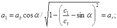
расстояние от центра пьезопластины мнимого преобразователя до точки ввода луча
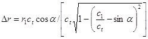
где 2аb, - размер пьезопластины преобразователя в плоскости падения луча; r1 -расстояние от центра пьезопластины преобразователя до контактной поверхности призмы преобразователя; с1, сt - скорости продольной волны в материале призмы и поперечной в контролируемом металле соответственно.
Специальные преобразователи должны быть аттестованы. Рекомендуемые указания по аттестации приведены в прил. 3.
2.43. Для определения характеристик выявленных дефектов могут служить приспособления для измерения условной ширины и протяженности выявленных дефектов, а также угла индикации. Конструктивные варианты приспособлений приведены в прил. 4.
2.44. Каждый дефектоскоп должен иметь паспорт или формуляр. Дефектоскопы каждого типа должны иметь техническое описание и инструкцию по эксплуатации.
2.45. Каждый преобразователь должен иметь порядковый номер. Первоначальные параметры каждого преобразователя (номинальная частота, размеры пьезоэлемента, угол ввода луча в сталь, стрела) должны быть занесены в "Журнал учета преобразователей". Изъятие преобразователей вследствие их выхода из строя должно отмечаться в журнале.
2.46. Проверка работоспособности с определением основных параметров дефектоскопов с преобразователями должна производиться в соответствии с ГОСТ 14782-86 по методике поверки дефектоскопов лицом, ответственным за состояние аппаратуры, не реже одного раза в месяц. Результаты поверки должны быть занесены в журнал учета дефектоскопов.
Подготовка к контролю
2.47. Перед выходом на контроль дефектоскоп должен быть укомплектован преобразователями, образцами и вспомогательными приспособлениями, указанными в производственной инструкции (технологической карте) на контроль, а также миллиметровой линейкой, кистью, контактирующей жидкостью, обтирочным материалом, мелом (краской) и чертилкой для отметки дефектных участков, ручкой (карандашом) и журналом для регистрации результатов контроля.
2.48. Работоспособность дефектоскопа с одним из отобранных преобразователей должна быть проверена на стандартном образце СО-2 путем оценки динамического диапазона индикатора и погрешности аттенюатора.
2.49. Погрешность аттенюатора оценивают путем измерения амплитуды N (44) и N (15)* эхосигналов от отражателя диаметром 6 мм при озвучивании его с двух противоположных поверхностей образца преобразователем с углом α= 65 ±2° при выведенной временной регулировке чувствительности.
Погрешность аттенюатора считается удовлетворительной, если разность амплитуд эхосигналов N (15) - N (44) = 14 ± 1 дБ.
2.50. Динамический диапазон оценивают по ослаблению Д в децибелах аттенюатора, которое необходимо для уменьшения амплитуды эхосигнала от отражателя диаметром 6 мм в стандартном образце СО-2 от максимальной величины до 2-4 мм по экрану индикатора. Динамический диапазон считается достаточным, если Д>10дБ.
2.51. Дефектоскоп с преобразователем должен быть проверен на соответствие стрелы преобразователя, угла ввода луча, чувствительности, мертвой зоны и погрешности глубиномера значениям, заданным в производственной инструкции (технологической карте) (см. прил. 22) на контроль.
Чувствительность дефектоскопа с преобразователем должна превышать заданную чувствительность поиска не менее чем на 4 дБ. Мертвая зона М при чувствительности поиска не должна превышать заданного значения.
Погрешность глубиномера при измерении интервала времени должна быть не более ± 1 мкс, а погрешность при измерении координат отражателя в пределах от 10 до 50 мм не должна превышать ± 1 мм.
2.52. Проверку стрелы угла ввода луча следует выполнять по стандартным образцам СО-3 и СО-2 по ГОСТ 14782-86.
2.53. Проверку чувствительности и мертвой зоны следует выполнять по стандартному образцу СО-2 или по испытательному образцу. Тип образца должен быть указан в производственной инструкции (технологической карте) на контроль.
2.54. Проверку глубиномера следует производить по стандартному образцу СО-2.
Измеренное с использованием прямого преобразователя значение времени распространения ультразвуковых колебаний в прямом и обратном направлениях между рабочими поверхностями образца должно быть равно 20 ± 1 мкс.
Измеренные значения глубины расположения цилиндрического отражателя диаметром 2bO =6 мм должны быть равны (44 - bO соs α) ± 1 мм и (15 - bO соs α) ± 1 мм.
Подготовка сварного соединения к контролю и выбор параметров контроля
2.55. Перед контролем дефектоскопист должен проверить соответствие сварного соединения требованиям производственной инструкции (технологической карты), обеспечивающим дефектоскопичность соединения. На соединении и в карте контроля должны быть отмечены участки швов, которые не могут быть проконтролированы из-за неудовлетворительного качества контактной поверхности или невозможности доступа к ним.
2.56. Подготовленные к контролю контактные поверхности непосредственно перед контролем необходимо тщательно протереть ветошью и покрыть слоем контактирующей смазки (минеральное масло, технический глицерин и другие контактные смазки).
2.57. Для эталонирования предельной чувствительности по стандартному образцу СО-2 должно быть определено отношение коэффициента прозрачности контактной поверхности соединения и соответствующего коэффициента для стандартного образца в децибелах. Методика определения отношения коэффициентов прозрачности приведена в прил. 5.
2.58. Способ прозвучивания сварного соединения и способ сканирования, а также угол ввода луча α и превышение SПП/SПО предельной чувствительности поиска SПП над чувствительностью оценки SПО должны быть определены по производственной инструкции (технологической карте). Способ продольно-поперечного сканирования целесообразно применять на этапе поиска дефектов, способ поперечно-продольного сканирования - на этапе оценки.
Рекомендуемые способы прозвучивания и настройки чувствительности дефектоскопа приведены в прил. 6-10.
2.59. Шаги сканирования (продольного ΔC1 , или поперечного ΔCt должны быть определены с учетом заданного соотношения SПП/SПО и диаграммы направленности поля преобразователя. Методика определения максимального шага сканирования ΔC* приведена в прил. 13. За номинальное значение шага сканирования при ручном контроле, которое должно соблюдаться в процессе контроля, должны приниматься значения ΔC1= ΔC1* - 1 мм; ΔCt= ΔCt* - 1 мм.
2.60. Настройку чувствительности при контроле сварных соединений толщиной менее 20 мм следует производить по образцам с цилиндрическими отражателями, расположенными на глубине Н =0,75 δ (где δ - толщина контролируемого изделия) при контроле прямым лучом и на глубине Н=1,75δ при контроле однократно отраженным лучом.
Настройку чувствительности при контроле сварных соединений толщиной более 20 мм следует производить по цилиндрическому отражателю, выполненному в стандартном образце СО-2 и соответствующей SКН-диаграмме. Коэффициент kД выявляемости при настройке чувствительности по SКН-диаграмме выбирают в предположении, что искомый дефект расположен на глубине Н = 0,75δ при контроле прямым лучом и Н = 1,75 δ при контроле однократно отраженным.
При настройке чувствительности по SКН-диаграмме должна быть включена временная регулировка чувствительности и учтено отношение ΔN коэффициента прозрачности контактной поверхности соединения и соответствующего коэффициента для стандартного образца (прил. 7). SКН-диаграммы для типовых преобразователей приведены в прил. 14.
Допускается производить настройку дефектоскопа на заданную условную чувствительность по стандартному образцу СО-2 или стандартному образцу СО-1.
Размещение и настройка дефектоскопа
2.61. Аппаратуру и вспомогательные приспособления размещают непосредственно на контролируемом соединении или вблизи его на расстоянии не далее 0,75 м от контролируемого участка шва. При необходимости укрепляют и заземляют дефектоскоп. Необходимость заземления должна быть отражена в производственной инструкции (карте контроля), рассчитанной на применение приборов конкретного типа.
Аппаратуру с регистрацией результатов контроля подготавливают к работе в соответствии с прилагаемой к аппаратуре инструкцией по эксплуатации. При механизированном контроле на соединение устанавливают преобразователь опорного сигнала приставки контроля за качеством акустического контакта. Общая работоспособность аппаратуры и приставки должна быть проверена с фиксацией результатов на документе контроля.
2.62. После включения аппаратуры и проверки ее общей работоспособности следует:
настроить дефектоскоп на заданную чувствительность оценки по стандартному или испытательному образцу. Для этого следует установить соответствующий наклонный преобразователь на контактную поверхность образца в положение, при котором амплитуда эхосигнала от заданного эталонного отражателя максимальна. Ручками "чувствительность" и аттенюатором отрегулировать амплитуду эхосигнала до величины, при которой срабатывает индикатор (звуковой, регистрирующий), а импульс на экране ЭЛТ составляет две трети его рабочей части. Запомнить положение N0 аттенюатора. Ручку ВРЧ установить в крайнее левое положение, при котором шумы из призмы преобразователя не вызывают срабатывания индикаторов и отсутствуют на экране дефектоскопа. Увеличить аттенюатором чувствительность дефектоскопа на величину kД, необходимую для достижения заданной предельной или эквивалентной чувствительности оценки. Ориентировочные значения kД приведены в прил. 6-10;
проверить мертвую зону дефектоскопа с преобразователем по стандартному образцу СО-2 или по испытательному образцу. Мертвая зона при заданной настройке чувствительности не должна превышать 3 мм для преобразователя с углом ввода луча α>60° и 8мм для преобразователя с углом ввода луча от 45 до 60°;
настроить систему временной селекции (длительность развертки дефектоскопа) так, чтобы длительность Т селектирующего импульса и интервал t его задержки относительно зондирующего импульса соответствовали толщине h контролируемого слоя и глубине Н его расположения, формулы для расчета h и Н приведены в табл.1.
|
Вид соединения |
Способ прозвучивания и угол α ввода луча |
h, мм |
Н, мм |
|
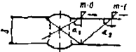 |
m=0; а=а1 m=1; а=а2 |
h=δ-2мм h=δ-4мм |
H=0 H= δ+2мм |
|
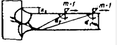 |
m=1; а=а1 m=1; а=а2 |
h=δ-4мм h=δ+k1 |
H= δ+2мм H= δ+2мм |
|
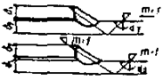 |
m=1; а=а1 m=1; а=а2 |
h=δ1+ δ2-2мм h=δ1 |
H= δ2+2мм H=2,5δ2 |
Проведение контроля
2.63. Контроль следует проводить в два этапа:
этап поиска дефектов;
этап оценки сомнительных сечений, в которых по результатам первого этапа предполагается наличие дефектов.
2.64. Перед началом поиска дефектов необходимо увеличить чувствительность в SПП/SПО раз. Значение SПП/SПО должно быть указано в производственной инструкции (технологической карте) на контроль. Рекомендуемое значение SПП/SПО=6-12 дБ.
2.65. На этапе поиска дефектов при механизированном контроле с регистрацией документа следует руководствоваться соответствующей инструкцией по эксплуатации и техническому обслуживанию установки.
2.66. На этапе поиска дефектов при контроле вручную преобразователь следует перемешать без особого усилия, обеспечивая надежный акустический контакт и заданный шаг сканирования со скоростью, не превышающей 100 мм/с.
2.67. Признаком обнаружения дефекта при ручном контроле является срабатывание индикатора (звукового, цифрового и т.п.), а при наличии в дефектоскопе ЭЛТ - импульс на экране в пределах установленной зоны временной селекции. При механизированном контроле об обнаружении возможного дефекта судят по отметке на документе контроля.
2.68. Сомнительные участки, зафиксированные на этапе поиска, должны быть отмечены на соединении мелом.
2.69. Сомнительные участки должны быть повторно проконтролированы при чувствительности оценки с измерением:
максимальной амплитуды UД эхосигнала;
координат дефекта (глубины расположения Н и расстояния L от точки ввода луча до проекции дефекта на контактную поверхность);
условной протяженности ΔLII.
Координаты Н и L и условную протяженность ΔLII измеряют для дефектов, амплитуда UД эхоснгналов от которых составляет не менее 6 дБ.
Амплитуду UД следует измерять относительно соответствующего эталонного отражателя в испытательном образце при контроле соединений листов толщиной δ£20 мм и относительно эталонного отражателя в СО-2 на глубине 44 мм при контроле соединении листов толщиной d> 20 мм. Амплитуда UД соответствует коэффициенту выявляемое™ дефекта и определяется по выражению
UД=|NД|-|N0|+|DN| (3)
где NД=N0 - показания аттенюатора при измерении амплитуды эхосигнала соответственно от дефекта и от эталонного отражателя; DN - отношение коэффициентов прозрачности определяется по прил. 6; при использовании испытательных образцов DN»0.
Координаты Н и L дефектов следует отсчитывать по показаниям глубиномера дефектоскопа при положении преобразователя, соответствующем максимальной амплитуде эхосигнала.
Условную протяженность ΔLII, мм, измеряют между крайними положениями преобразователя, перемещаемого вдоль сварного соединения, при которых амплитуда эхосигнала от дефекта на 6 дБ меньше амплитуды эхосигнала от эталонного отражателя при измеренной чувствительности оценки.
2.70. К дефектным следует отнести те участки шва, в которых координаты отражающей поверхности не совпадают с поверхностью соединения и амплитуда UД эхосигнала равна или больше 0дБ либо лежит в пределах от 0 до 6дБ, но условная протяженность ΔLII>5 мм.
2.71. Дефектные участки должны быть отмечены на сварном соединении. Результаты контроля должны быть отображены в журнале.
При этом для дефектных участков должны быть указаны:
расстояние от середины участка до торца соединения или другого начала отсчета;
условная протяженность ΔLII участка;
глубина Н расположения дефекта;
максимальная амплитуда UД эхосигнала, дБ.
Оценка качества соединений
2.72. Оценку качества швов сварных соединений следует проводить в соответствии с требованиями, приведенными в технических условиях на изделие, утвержденных в установленном порядке или в соответствующем нормативном документе.
2.73. Основными измеряемыми характеристиками выявленных дефектов являются:
эквивалентная площадь дефекта SЭ или амплитуда UД эхосигнала от дефекта с учетом измеренного расстояния до него;
условные размеры дефекта;
условное расстояние между дефектами;
координаты дефекта в сечении шва с учетом типа и размеров соединения;
число дефектов на определенной длине шва.
2.74. Эквивалентную площадь дефекта следует определять для сварных соединений толщиной более 20 мм по SКН-диаграммам.
2.75. Условными размерами выявленного дефекта являются:
условная протяженность ΔLII, мм, которую измеряют по длине зоны между крайними положениями преобразователя, перемещаемого вдоль шва, ориентированного перпендикулярно к его оси;
условная ширина ΔXII, мм, которую измеряют по длине зоны между крайними положениями преобразователя, перемещаемого перпендикулярно шву;
условная высота ΔHII, мм (мкс), которую измеряют как разность значений глубины расположения дефекта при крайних положениях преобразователя, перемещаемого перпендикулярно шву.
За крайние положения преобразователя принимают те, при которых амплитуда эхосигнала от выявленного дефекта на 6дБ меньше амплитуды эхосигнала от эталонного отражателя при чувствительности оценки.
Условную ширину ΔXII и условную высоту ΔHII дефекта измеряют в сечении шва, где эхосигнал от дефекта имеет наибольшую амплитуду.
2.76. Измеряемые характеристики, используемые для оценки качества конкретных соединений, должны указываться в нормативно-технической документации на контроль.
2.77. Условное расстояние Δl между протяженными дефектами измеряют расстоянием между крайними положениями преобразователя, при которых была определена условная протяженность двух рядом расположенных дефектов.
2.78. Дополнительной характеристикой выявленного дефекта являются его конфигурация и ориентация.
Для оценки ориентации и конфигурации выявленного дефекта применяют сравнение:
условных размеров ΔLI и ΔXI выявленного дефекта с расчетными или измеренными значениями условных размеров ΔLI0 и ΔXI0 ненаправленного отражателя на той же глубине, что и выявленный дефект. При измерении условных размеров ΔLI, ΔLI0, ΔXI, ΔXI0 за крайние положения преобразователя принимаются такие, при которых амплитуда эхосигнала на 6 дБ меньше ее максимального значения;
амплитуды Utl1 сигнала дифрагированной на дефекте непосредственно падающей сдвиговой волны с амплитудой Utl2, сигнала дифрагирсванной на том же дефекте падающей сдвиговой волны, претерпевшей предварительно зеркальное отражение (см. прил. 15);
амплитуды эхосигнала U1, отраженного от выявленного дефекта обратно к ближнему от шва преобразователю, с амплитудой эхосигнала U2, претерпевшего зеркальное отражение от внутренней поверхности соединения и принимаемого двумя преобразователями.
Необходимость, возможность и методика оценки конфигурации и ориентации выявленного дефекта для соединений каждого типа и размеров должны оговариваться в производственной инструкции (технологической карте) на контроль.
2.79. По результатам контроля качество сварного шва оценивают по системе "годен", "не годен", "условно не годен":
"годным" считают шов без дефектов или с дефектами, допустимыми по техническим требованиям к качеству сварных соединении;
"не годным" считают шов с дефектами, недопустимыми по техническим требованиям к качеству сварных соединений;
"условно не годным" считают шов с дефектами, которые по результатам ультразвукового контроля отнесены к категории "возможно допустимые"; такой шов должен быть подвергнут дополнительному контролю методом просвечивания для уточнения характера и размеров выявленных дефектов. При отсутствии возможности выполнить просвечивание, такой шов относят к категории "не годен".
2.80. К недопустимым дефектам в сварных швах относят:
любой дефект, эквивалентная площадь SЭД которого превышает заданное значение SЭ* или амплитуда UД³0;
любой дефект, амплитуда эхосигнала от которого UД лежит в пределах от 0 до 6 дБ, и условная протяженность которого превышает заданное значение ΔLII*;
любые два дефекта, амплитуды эхосигналов от которых лежат и пределах от 0 до 6дБ, условная протяженность каждого из которых ΔLIIД < ΔLII*, но условное расстояние Δlмежду которыми меньше заданного значения Δl*;
любые дефекты, амплитуда эхосигналов от которых лежит в пределах от 0 до 6 дБ, число N которых на заданной длине шва превышает заданное значение N*;
любой дефект, амплитуда эхосигнала от которого лежит в пределах от 0 до 6 дБ и акустическая ось которого расположена под углом 10...40° к продольной оси шва. Если он не выявляется при расположении преобразователя перпендикулярно оси шва.
Значения SЭ*, ΔLII*, Δl*, N* должны быть указаны в производственной инструкции (технологической карте) на контроль.
Оформление результатов контроля
2.81. Результаты контроля должны быть записаны в журнале или заключении, или на схеме шва сварного соединения, где должны быть указаны (см. прил. 21, 22):
тип сварного соединения, индексы, присвоенные данному изделию и сварному соединению, и длина проконтролированного участка;
технические условия, по которым выполнялся контроль;
тип дефектоскопа;
частота ультразвуковых колебаний;
угол ввода луча в контролируемый металл или тип преобразователя и условная или предельная чувствительность;
непроконтролированные участки швов, подлежащих дефектоскопированию;
результаты контроля;
дата контроля;
фамилия дефектоскописта.
Дополнительные сведения, подлежащие записи, а также порядок оформления и хранения журнала (заключений) должны быть оговорены в нормативно-технической документации на контроль.
2.82. При необходимости сокращенного описания результатов контроля следует каждый дефект или группу дефектов указывать отдельно и обозначать в следующем порядке:
буквой, определяющей качественный признак оценки допустимости дефекта по эквивалентной площади (амплитуде эхосигнала) и условной протяженности;
буквой, определяющей качественно условную протяженность дефект», если она установлена;
буквой, определяющей конфигурацию дефекта, если она установлена;
цифрой, определяющей эквивалентную площадь выявленного дефекта, мм2;
цифрой, определяющей наибольшую глубину залегания дефекта, мм;
цифрой, определяющей условную протяженность дефекта, мм;
цифрой, определяющей условную ширину дефекта, мм;
цифрой, определяющей условную высоту дефекта, мм или мкс.
2.83. Для сокращенной записи должны применяться следующие обозначения:
А - дефект, для которого SЭД и ΔLIIД равны или менее допустимых значений SЭ*, ΔLII* или UД<0 дБ;
Д - дефект, SЭД которого превышает допустимое значение SЭ* или UД>0 дБ;
Б - дефект, условная протяженность которого превышает допустимое значение;
Г - дефекты, для которых ΔLIIД£ ΔLII*;
Е - дефекты, для которых ΔLIIД>ΔLII*;
В - группа дефектов, отстоящих друг от друга на расстоянии Δl»Δl*;
П - дефекты, для которых ΔXIД/ΔHIД<<ΔXI0/ΔHI0;
С - дефекты, для которых ΔXIД/ΔHIД»ΔXI0/ΔHI0;
Т - дефекты, которые обнаруживаются при расположении преобразователя под углом к оси шва и не обнаруживаются при расположении преобразователя перпендикулярно к оси шва.
Эквивалентную площадь для дефектов типа А не указывают.
Условную протяженность для дефектов типов Г и Т не указывают.
В сокращенной записи числовые значения отделяют друг от друга и от буквенных обозначений дефисом.
Если числовое значение какой-либо измеряемой характеристики дефекта не определялось, то на соответствующем месте в сокращенной записи указывают 0.
Необходимость сокращенной записи и применяемые обозначения оговариваются в нормативно-технической документации на контроль.
Пример сокращенной записи результатов контроля приведен в прил. 16.
Требования безопасности
2.84. При проведении работ по контролю сварных швов методами ультразвуковой дефектоскопии дефектоскопист должен руководствоваться действующими "Правилами технической эксплуатации электроустановок потребителей и правилами технической безопасности при эксплуатации электроустановок потребителей", утвержденными Госэнергонадзором 12 апреля 1969 г. и согласованными с ВЦСПС 9 апреля 1969г.
2.85. При выполнении контроля должна быть обеспечена защита руки дефектоскописта от непосредственного воздействия ультразвуковых колебаний.
2.86. Дополнительные требования по технике безопасности и противопожарной технике устанавливаются в нормативно-технической документации на контроль.
Назначение и область применения
3.1. Настоящим разделом Пособия следует пользоваться при организации и проведении автоматизированного и механизированного ультразвукового контроля качества сварных соединений технологических трубопроводов и металлоконструкций в монтажных и цеховых условиях.
3.2. Автоматизированному ультразвуковому контролю подвергаются стыковые сварные соединения, выполненные автоматизированной и механизированной сваркой и по геометрическим размерам, отвечающим требованиям ГОСТ 8713-79*.
3.3. Автоматизированный ультразвуковой контроль может проводиться при температуре окружающего воздуха от 5 до 50°С и относительной влажности не более 80% (при температуре 35°С). Допускается проведение контроля при температуре, отличающейся от указанной, при использовании аппаратуры специального исполнения.
3.4. При освоении новой аппаратуры автоматизированного ультразвукового контроля целесообразно проводить дублирующий проверочный контроль другими методами (ручной ультразвуковой дефектоскопией, радиографическим методом).
Требования к аппаратуре
3.5. Аппаратура, применяемая для автоматизированного ультразвукового контроля, должна обеспечивать выявление дефектов следующих типов: непровары, трещины, шлаковые включения, отдельные поры, скопления и цепочки пор с чувствительностью, предписываемой нормативной документацией на контроль конкретных изделий.
3.6. Аппаратура должна обеспечивать достоверность выявления дефектов не ниже 0,9. Достоверность обнаружения дефектов должна быть указана в паспорте на автоматизированный ультразвуковой дефектоскоп. В случае отсутствия этой характеристики она может быть определена на реальном сварном шве с реальным дефектом, рапным по величине браковочному, или на специальном контрольном образце с искусственным дефектом, имеющим эквивалентную отражающую поверхность по величине, соответствующую браковочной, следующим образом:
D=n/N.
где D - достоверность обнаружения дефектов; N - количество испытаний (контроль участка шва с реальным или искусственным дефектом), N должно быть не менее 10; n - количество испытаний, при котором был зарегистрирован дефект.
3.7. Аппаратура должна обеспечивать автоматическую регистрацию результатов контроля с точностью, необходимой для их расшифровки, разбраковки и привязки к сварному соединению, а также отметку дефектных мест на шве, кроме того на дефектограмме должно регистрироваться качество акустического контакта.
3.8. Применяемая аппаратура должна быть метрологически поверена в соответствии с ГОСТ 23667-85, иметь паспорт или разрешение на применение.
3.9. В комплект аппаратуры должны входить образцы для настройки технологических параметров аппаратуры, аттестованные заводом-изготовителем аппаратуры или организацией, проводящей контроль.
Требования к дефектоскопистам
3.10. К проведению автоматизированного ультразвукового контроля допускаются лица, имеющие удостоверение на право проведения ручного ультразвукового контроля и выдачи заключения по его результатам и стаж практической работы не менее 1 года, прошедшие специальную подготовку по программе автоматизированного контроля, изучившие инструкцию по эксплуатации используемой автоматизированной установки, прошедшие стажировку под руководством опытного специалиста и получившие разрешение компетентной комиссии на проведение автоматизированного контроля.
3.11. К проведению автоматизированного контроля допускаются также инженерно-технические работники, имеющие опыт работы с автоматизированными ультразвуковыми установками и знакомые с практической дефектоскопией.
3.12. Аттестация лиц, допускаемых к работе на автоматизированных ультразвуковых установках, проводится по результатам правильности настройки установки, сопоставимости результатов повторного контроля не менее 10 забракованных участков шва, правильности расшифровки ультразвукограмм (результатов контроля). Результаты аттестации оформляются протоколом и регистрируются в удостоверении дефектоскописта. Периодичность аттестации дефектоскопистов по месту работы - 1 год.
Требования к участку контроля
3.13. Участок контроля должен быть обеспечен подводкой тока переменного напряжения с параметрами, обеспечивающими нормальное функционирование аппаратуры и надежным заземлением.
3.14. Кабели питания должны иметь необходимое сечение и заземленный экран.
3.15. Подвод сетевого напряжения должен осуществляться через автоматический переключатель с ограничителем-предохранителем максимального тока.
3.16. Участок контроля должен быть снабжен подводом контактной жидкости с отстойником или емкостью для хранения контактной жидкости.
3.17. На участке контроля должны быть предусмотрены: место (шкаф или помещение) для хранения автоматизированной установки или съемных ее элементов, ЗИПа установки, измерительного и маркировочного инструмента, вспомогательных материалов, стенд для размещения образцов.
3.18. Участок контроля рекомендуется обеспечить средством связи с пультом управления технологической линии в условиях цеха, завода и лабораторией контроля в монтажных условиях.
Требования безопасности
3.19. К работе на автоматизированных ультразвуковых установках допускаются лица, прошедшие инструктаж по технике безопасности и получившие допуск к работе в установленном порядке в соответствии с конкретными условиями производства.
3.20. При работе с аппаратурой должны соблюдаться "Правила технической эксплуатации электроустановок потребителей" и "Правила техники безопасности при эксплуатации электроустановок потребителей", утвержденные Госгортехнадзором СССР.
3.21. При работе на высоте или при использовании устройств, перемещающихся по наклонным или вертикальным поверхностям, должны быть предусмотрены страховочные пояса, фалы или тросы.
3.22. При нарушении правил техники безопасности виновный должен быть отстранен от работы и может быть допущен к ней только после повторного инструктажа.
Подготовка к контролю
3.23. Подготовка к контролю включает следующие операции:
изучение нормативно-технической документации на проведение контроля;
осмотр и маркировку подлежащих контролю швов;
подготовку поверхности изделия к контролю;
подготовку установки к контролю.
3.24. Нормативно-техническая документация на основе требования проекта на изготовление и приемку изделия или объекта, требований Госгортехнадзора и строительных норм и правил устанавливает необходимые объемы контроля, чувствительность и браковочные признаки, которые должны быть учтены при определении количества сварных швов, подлежащих контролю, и мест их расположения и настройке аппаратуры.
3.25. При осмотре шва дефектоскопист должен установить соответствие внешнего вида сварного шва и околошовной зоны требованиям ГОСТ 14782-86. Обнаруженные внешние недопустимые дефекты подлежат исправлению службой, предъявляющей сварные швы к контролю.
Маркировка швов должна производиться дефектоскопистом в соответствии с методикой контроля, заложенной в нормативно-технической документации и инструкцией по эксплуатации установки.
3.26. При подготовке поверхности контролируемого изделия к дефектоскопии вспомогательный персонал должен очистить от шлака, брызг металла, грязи, отслаивающейся окалины поверхность шва и околошовной зоны на расстояние необходимое для установки и перемещения акустического блока установки.
3.27. Настройка автоматизированной установки производится в соответствии с инструкцией по ее эксплуатации. Рабочие параметры (частота УЗК, чувствительность, углы наклона акустических осей и др.). Устанавливаются по требованиям нормативно-технической документации на проведение контроля.
Проведение контроля
3.28. Ультразвуковой контроль качества сварных соединений проводится в соответствии с инструкцией по эксплуатации автоматизированной установки.
3.29. В процессе автоматизированного контроля дефектоскопист следит за правильностью функционирования основных узлов установки. При приостановке контроля из-за нарушения акустического контакта и при сигнализации об ухудшения качества контакта проводится повторный контроль этого участка шва. Повторный контроль проводится также на участках шва, качество которых вызывает сомнение по результатам контроля.
3.30. При проведении контроля необходимо проводить периодическую проверку правильности настройки чувствительности в соответствии с инструкцией по эксплуатации установки. При выявлении сбоя в настройке чувствительности проводится выборочный 25 %-й повторный контроль участков шва и при расхождении результатов контроля повторному контролю подвергаются все швы, проконтролированные до предыдущий проверки чувствительности.
Обработка и оформление результатов контроля и оценка качества шва
3.31. Результаты автоматизированного ультразвукового контроля фиксируются на ультразвукограмме, в заключении, журнале работ и на схеме контролируемого сварного соединения.
3.32. На ультразвукограмме должны быть нанесены: номер ультразвукограммы, номер контролируемого участка сварного шва; рабочие параметры контроля (см. п. 3.27), браковочные признаки, масштаб и направление записи, дата контроля и номер заключения. При отсутствии автоматической разбраковки, при расшифровке результатов контроля на ультразвукограмме должны быть отмечены недопустимые дефекты. Ультразвукограммы хранятся как документы о результатах контроля.
3.33. На схеме сварного соединения должна быть показана разбивка сварных швов на участки и маркировка их в соответствии с маркировкой на изделии, показано направление контроля, и даны номера заключения и ультразвукограммы.
3.34. В журнале работ, находящемся в лаборатории контроля или на участке контроля в дополнение к требованиям ГОСТ 14782-86 к регистрации результатов ультразвукового контроля, должны быть указаны:
номер ультразвукограммы;
наименование и номер нормативно-технической документации на проведение контроля;
рабочие параметры контроля (см. п. 3.27);
причины повторного контроля (если он проводился);
номер заключения.
3.35. Заключение по результатам контроля качества сварных соединений должно содержать помимо данных, указанных в п. 3.34, следующие данные:
тип и заводской номер установки;
характеристику пространственного положения шва;
скорость контроля.
3.36. Для сокращенной записи недопустимых дефектов и их браковочных характеристик следует применять обозначения в соответствии с ГОСТ 14782-86.
4.1. Радиографический метод контроля предназначен для выявления в швах и околошовных зонах стыковых, угловых, тавровых и нахлесточных сварных соединений теневого изображения внутренних и наружных дефектов (непроваров, трещин, несплавлений, пор и шлаковых включений), размеры которых в направлении излучения превышают удвоенную чувствительность получаемых снимков.
Материалы и оборудование для радиографического контроля
4.2. При контроле качества сварных соединений применяются радиографические пленки РТ. Допускается применение радиографической пленки других типов, в том числе импортной, обеспечивающей требуемую чувствительность контроля.
При просвечивании ответственных конструкций следует применять мелкозернистую радиографическую пленку РТ-5 или РТ-4М, имеющую высокую разрешающую способность.
Технические характеристики радиографических пленок приведены в табл. 2. Области применения радиографических пленок в зависимости от энергии излучения и толщины просвечиваемой стали приведены в табл. 3.
4.3. Для защиты радиографической пленки от вредного воздействия рассеянного ионизирующего излучения следует использовать свинцовые экраны толщиной до 2 мм. Толщины защитных экранов в зависимости от мощности источников ионизирующих излучений приведены в табл. 4.
В качестве усиливающих экранов при радиографическом контроле используются флуоресцирующие экраны или экраны из свинцовой, оловянной и свинцово-оловянной фольги (металлические) по ГОСТ 15843-79.
Усиливающие экраны должны иметь чистую и гладкую поверхность. Наличие на экранах складок, царапин, трещин, надрывов и других дефектов не допускается.
Характеристики и область применения усиливающих металлических и флуоресцирующих экранов приведены в табл. 5.
4.4. Для оценки чувствительности радиографического контроля следует применять канавочные, проволочные или пластинчатые эталоны чувствительности, изготовленные из металлического сплава, основа которого по химическому составу аналогична основе металла контролируемого сварного соединения. Форма и размеры эталонов чувствительности приведены в ГОСТ 7512-82.
4.5. Радиографическую пленку следует хранить в первичной упаковке на стеллажах в специальных помещениях, обеспечивающих защиту их от сырости, воспламенения и воздействия проникающего излучения.
|
Пленка |
Без усиливающих экранов |
С усиливающими люминесцентными экранами |
Относительная чувствительность |
Разрешающая способность линий, лин/мм |
Оптическая плотность вуали эмульсионного слоя D0 |
Время проявления t, мин |
||
|
чувствительность, Р-1 |
коэффициент контрастности γ |
чувствительность, Р-1 |
коэффициент контрастности γ |
|||||
|
РТ-1 |
50-60 |
3,5 |
100 |
3,5 |
8 |
68-73 |
0,! |
10 |
|
РТ-2 |
25 |
3 |
350 |
3 |
5 |
73-78 |
0,15 |
10 |
|
РТ-4М |
9-12 |
3,5 |
- |
- |
2 |
110-140 |
0,1 |
6-12 |
|
РТ-5 |
3-5 |
3,5 |
13 |
3,5 |
1 |
140-180 |
0,05 |
6-12 |
|
РТ-СШ |
6-7 |
3 |
- |
- |
7 |
- |
- |
6-12 |
|
Толщина контролируемой стали,* мм |
Анодное напряжение рентгеновских аппаратов, кВ |
Радиоизотопные источники* |
Пленка |
|
До 5 |
60-120 |
- |
РТ-5, РТ-4М |
|
Св. 5 до 20 включительно |
120-200 |
Тулий-170 |
РТ-5, РТ-4М, РТ-2, РТ-СШ |
|
" 20 " 40 " |
150-300 |
Селен-75 |
РТ-5, РТ-4М, РТ-1, РТ-2, РНТМ-1 |
|
" 40 " 80 " |
200-400 |
Иридий-192 |
РТ-1, РТ-2, РТ-СШ, РИТМ-1 |
|
" 80 " 120 " |
300-1000 |
Цезий-137 |
РТ-2, РТ-СШ, РТ-1, РНТМ-1 |
|
" 120 " 200 " |
- |
Кобальт-60 |
РТ-2, РТ-1, РНТМ-1 |
* Рекомендуемые толщины просвечиваемого материала в зависимости от типа радиоактивного источника представлены в таблице 10.
Таблица 4
|
Аппарат |
Радиоизотопные источники |
Толщина экрана, мм |
|
Ретгеновский, с напряжением на трубке до 200 кВ |
Тулий-170, селен-75 |
До 1 |
|
То же, св. 200 кВ |
Иридий-192, цезий-137, кобальт-60 |
От 1 до 2 |
Кроме того, в помещениях для хранения пленки необходимо следить за тем, чтобы:
температура окружающего воздуха составляла 10-25°С, а относительная влажность 50-70 %;
кислоты, бензин, керосин и другие легковоспламеняющиеся жидкости не находились в этих помещениях;
вредные газы (сероводород, окись углерода, аммиак), пары ароматических веществ не проникали в помещения;
расстояние от коробок с пленкой до нагревательных приборов составляло не менее 1 м, а до пола - не менее 0,5 м;
пленки были защищены от воздействия прямых солнечных лучей.
4.6. Просвечивание сварных соединений осуществляется с помощью рентгеновских аппаратов, гамма-дефектоскопов, а при просвечивании очень больших трещин, когда требуются энергии излучения более 1 МэВ, - бетатронов и микротронов.
4.7. Основные типы отечественных рентгеновских аппаратов, гамма-дефектоскопов и источников радиоактивного излучения приведены в табл. 6-9.
|
Тип флуоресцирующего экрана |
Люминофор |
Количество люминофора на экране, мг/см2 |
Толщина свинцового экрана, мм |
Напряжение на рентгеновской трубке, кВ |
Радиоизотопные источники |
Коэффициент усиления с пленкой |
|
|||||
|
переднего |
заднего |
РТ-1 |
РТ-2 |
РТ-4* |
РТ-5* |
|||||||
|
переднем |
заднем |
|
||||||||||
|
ЭУ-В2 (стандарт) |
СаWO4 |
60 |
60 |
0,02 |
0,02 |
10-60 |
- |
1,3 |
14 |
3,5 |
2,2 |
|
|
ЭУ-Б |
(ВаРb)SO4 |
70 |
70 |
0,02 |
0,02-0,05 |
60-120 |
Тулий-170 |
2,2 |
23 |
5,9 |
3,7 |
|
|
ЭУ-С |
ZnS(Аg) |
30 |
110 |
0,02-0,05 |
0,05-0,1 |
120-200 |
Тулий-170, Селен-75 |
2,5 |
26 |
6,7 |
4,2 |
|
|
ЭУ-ВЗ |
СаWO4 |
40 |
120 |
0,05-0,1 |
0,1-0,16 |
150-300 |
Селен-75, Иридий-92 |
2,6 |
29 |
7 |
4,4 |
|
|
ВП-1 |
СаWO4 |
80 |
120 |
0,1-0,16 |
0,16-0,2 |
200-400 |
Иридий-192, Цезий-137 |
3,9 |
42 |
10,5 |
6,6 |
|
|
ВП-2 |
СаWO4 |
120 |
180 |
0,16-0,2 |
0,2-0,5 |
300-1000 |
Цезий-137 |
5,9 |
63 |
15,8 |
10 |
|
|
УФД |
СаWO4 |
200 |
200 |
- |
1,0-3,0 |
- |
Кобальт-60 |
2,6 - 3,9 |
28- 42 |
7- 10,5 |
4,4- 6,5 |
|
Таблица 6
|
Аппарат |
Конструктивное исполнение |
Напряжение на аноде, кВ |
Максимальный анодный ток, мА |
Форма и размер фокусного пятна рентгеновской трубки, мм |
Максимальная толщина просвечивания (по стали), мм |
|
РУП-120-5-1 |
Переносной моноблочный |
50-120 |
5 |
Прямоугольная 2´2 |
25 |
|
РАП-150-7 |
Портативный кабельный |
20-150 |
7 |
Прямоугольная 1,5´1,5 |
40 |
|
РАП-150-10 |
Передвижной кабельный |
35-150 |
10 |
Круглая, диаметр 3 |
40 |
|
РАП-160-6П |
Переносной моноблочный |
50-160 |
6 |
Прямоугольная 2´2 |
40 |
|
РУП-200-5-2 |
То же |
70-200 |
5 |
Прямоугольная 2´2 |
60 |
|
РАП-220-5П (Н) |
220 |
5 |
Прямоугольная 1,6´1,6 |
60 |
|
|
РУП-150/300-10 |
Передвижной кабельный |
35-150 |
10 |
Круглая, диаметр 3 |
40 |
|
То же |
То же |
70-300 |
10 |
Прямоугольная 4´4 |
90 |
|
Аппарат |
Напряжение на аноде, кВ |
Потребляемая мощность, Вт×А |
Частота следования импульса, Гц |
Срок службы трубки, импульс |
Масса аппарата, кг |
Максимальная толщина просвечивания (по стали)*, мм |
|
РИНА-1Д |
100 |
250 |
15-20 |
2×105 |
7 |
10 |
|
РИНА-2Д |
150 |
350 |
10-15 |
2×105 |
12 |
20 |
|
МИРА-1Д |
100 |
300 |
20-25 |
5×106 |
10 |
5 |
|
МИРА-2Д |
150 |
400 |
10-15 |
5×106 |
15 |
10 |
|
МИРА-ЗД |
200 |
600 |
4-5 |
1×106 |
22 |
20 |
|
НОРА |
240 |
300 |
4-5 |
18×105 |
18 |
20 |
|
СИРЕНА-1** |
200 |
- |
6-7 |
1×106 |
40 |
20 |
** Аппарат «СИРЕНА-1» предназначен для автоматизированного понарамного просвечивания кольцевых швов в нитке трубопровода.
Таблица 8
|
Радионуклид |
Источник |
Размеры источника, мм |
Мощность экспозиционной дозы излучения на расстоянии 1 м, А/кг |
Средняя эффективная энергия излучения, МэВ |
Период полураспада, дн. |
Толщина просвечивания (по стали), мм |
|
|
активная часть |
ампула |
||||||
|
Тулий-170 |
ТУ-0(ИГИ-ТУ-О) |
2´2 |
4,5´5 |
2,4×10-10 |
0,084 |
129 |
1-20 |
|
ТУ-1(ИГИ-ТУ-1) |
5´5 |
7,5´8 |
1,2×10-9 |
||||
|
ТУ-3(ИГИ-ТУ-3) |
9´7 |
12´10 |
3×10-8 |
||||
|
Селен-75 |
ИГИ-Се-2 |
5´6 |
7,5´9,5 |
6×10-9 |
0,267 |
120,4 |
5-30 |
|
ИГИ-Се-4 |
7,5´7 |
12,5´12 |
3,1×10-8 |
||||
|
ИГИ-Се-5 |
11,5´11 |
16,5´16,5 |
1,2×10-7 |
||||
|
Иридий-192 |
ГИИ-Д-1 |
0,5´0,5 |
4´5 |
3,85×10-8 |
0,42 |
74,4 |
5-80 |
|
ГИИ-Д-2 |
1´1 |
4´5 |
1,3×10-7 |
||||
|
ГИИ-Д-3 |
1,5´1,5 |
4´5 |
3,85×10-7 |
||||
|
ГИИ-Д-4 |
2´2 |
4´5 |
6,5×10-7 |
||||
|
ГИИ-Д-5 |
3´3 |
5х6 |
1,3×10-6 |
||||
|
ГИИ-Д-6 |
4´4 |
5х7 |
3,85×10-6 |
||||
|
ГИИ-Д-7 |
6´6 |
8х9 |
6,5×10-6 |
||||
|
Цезий-137 |
ГИД-Д-1(ГИД-Ц-1) |
3´3 |
6´10 |
3,1×10-8 |
0,661 |
33 года |
10-120 |
|
ГИД-Д-2(ГИД-Ц-2) |
5´5 |
8´12 |
1,3×10-7 |
||||
|
ГИЦ-Д-3(ГИД-Ц-3) |
6´6 |
10´13 |
3,1×10-7 |
||||
|
ГИЦ-Д-4(ГИД-Ц-4) |
10´11 |
14´19 |
1,3×10-6 |
||||
|
ГИЦ-Д-5(ГИД-Ц) |
18´18 |
22´26 |
6,5×10-6 |
||||
|
ГИЦ-Д-6(ГИД-Ц-6) |
23´23 |
27´31 |
1,3×10-5 |
||||
|
Кобальт-60 |
ГИД-К-1 |
1´1 |
4´5 |
1,2×10-4 |
1,33 |
5,3 года |
30-200 |
|
ГИД-К-2 |
1´1 |
4´5 |
2,5×10-4 |
||||
|
ГИД-К-3 |
2´2 |
4´5 |
5×10-4 |
||||
|
ГИД-К-4 |
2´2 |
4´5 |
1,2×10-3 |
||||
|
ГИД-К-5 |
4´4 |
4´5 |
2,5×10-3 |
||||
|
ГИД-К-6 |
4´4 |
6´7 |
1,2×10-2 |
||||
|
ГИД-К-7 |
6´6 |
11´13 |
3,5×10-1 |
||||
|
ГИД-К-8 |
7´7 |
11´13 |
1,2×10-1 |
||||
|
ГИД-К-9 |
10´12 |
14´19 |
2,5×10-1 |
||||
|
ГИД-К-10 |
15´15 |
19´22 |
5×10-1 |
||||
Примечание. При заказе источников в В/О "Изотоп" необходимо указывать тип источника по техническим условиям.
|
Гамма-дефектоскоп |
Толщина просвечивания (по стали) , мм |
Масса радиационной головки, кг |
Привод |
Максимальное удаление источника от радиационной головки, м |
|
Гаммарид-192/40т переносной |
1-60 |
13 |
Ручной |
0,25 |
|
Гаммарид-192/40 переносной шланговый |
1-40 |
6 |
5 |
|
|
Гаммарид-192/120 переносной шланговый |
1-80 |
16 |
12 |
|
|
Гаммарид-192/120Э передвижной |
1-80 |
17 |
Электромеханический и ручной |
12 |
|
Гаммарид-192/120М переносной |
1-80 |
17 |
Ручной |
0,25 |
|
Гаммарид-60/40 передвижной шланговый |
1-200 |
145 |
Электромеханический и ручной |
12 |
|
Гаммарид-170/400 переносной |
1-40 |
8 |
Ручной |
0,08 |
|
Сгапель-5м |
6-60 |
8 |
" |
|
|
Магистраль 1 |
Входит в состав внутритрубного самоходного устройства "Парус" автоматизированного комплекса типа АКП |
|||
Подготовка к проведению контроля
4.8. Сварные соединения, которые подлежат выборочному контролю, определяет мастер-радиограф совместно с техническим руководителем выполняемых работ. Для контроля следует выбирать сварные соединения, выполненные разными сварщиками в наименее благоприятных условиях и имеющие наихудший внешний вид.
4.9. Радиографический контроль осуществляют после того, как устранены недопустимые наружные дефекты, выявленные при внешнем осмотре сварных соединений.
Если неровности шва, брызги металла и другие внешние дефекты могут затруднить выявление внутренних дефектов в сварном соединении или повредить радиографическую пленку, то поверхность этого соединения должна быть обработана. В остальных случаях специальная подготовка поверхности сварного соединения не требуется.
4.10. Сварные соединения, подлежащие контролю, размечают мелом на отдельные участки, длина которых зависит от формата применяемой радиографической пленки (кассет), и затем маркируют несмывающейся краской, обеспечивающей сохранность маркировки до сдачи объекта.
При использовании вспомогательных мерительных поясов со свинцовыми цифрами, обеспечивающими перенос изображения длины сварного соединения на снимки, а также при панорамном просвечивании кольцевых стыков на рулонную пленку с получением изображения контролируемого сварного соединения на одном снимке, достаточно одной отметки, которая соответствует началу мерительного пояса или рулонной пленки.
4.11. На каждом участке сварного соединения закрепляют эталоны чувствительности по ГОСТ 7512-82, а также свинцовые цифры, обозначающие номер стыка и номер пленки, дату сварки, дату контроля, клеймо сварщика и т.п., изображение которых в процессе просвечивания переносится на снимок (система маркировки устанавливается технической документацией на контроль или приемку сварных соединений).
Изображение на снимке маркировочных знаков и канавочных эталонов чувствительности не должно быть наложено на изображение сварного шва. При использовании флуоресцирующих экранов на них можно надписывать тушью номера кассет, которые при просвечивании проецируются на снимки.
4.12. При просвечивании сварного соединения (когда получают несколько снимков) общая маркировка достаточна на одном из этих снимков, а на остальных необходим только номер стыка и номер пленки или номер участка соединения. При использовании вспомогательных мерительных поясов номера пленок не ставят.
4.13. При просвечивании соединений со сварными швами без усиления (или со снятым усилением) на их границах необходимо устанавливать свинцовые стрелки или другие ограничители, помогающие определить место нахождения шва на радиографическом снимке.
4.14. В тех случаях, когда нормативно-технической документацией предусмотрено определение глубины дефектов, то глубину можно измерять визуально (или с помощью фотометров и денситометров) путем сравнения потемнений изображений дефектов с канавками эталона чувствительности или с канавками (глухими отверстиями) имитаторов, имеющих толщину, равную высоте усиления сварного шва, и изготовленных из металла, аналогичного по составу металлу свариваемых изделий. Форма имитаторов может быть произвольной, а глубина канавок и их градации по глубине определяются из критериев оценки дефектов сварного шва по глубине.
4.15. Проволочные эталоны чувствительности следует устанавливать непосредственно на сварной шов так, чтобы проволоки располагались поперек шва. Канавочные эталоны и имитаторы необходимо помещать рядом со швом, направляя их вдоль шва.
Пластинчатые эталоны должны быть размещены рядом со швом и направлены вдоль шва либо непосредственно на шве и направлены поперек шва.
При просвечивании кольцевых швов изделия цилиндрической формы малого диаметра "на эллипс" допускается устанавливать канавочные и пластинчатые эталоны чувствительности и маркировочные знаки рядом со швом вдоль оси трубы, а не вдоль сварного шва.
4.16. При просвечивании сварных швов трубных изделий с расшифровкой только прилегающих к пленке (к кассетам) участков сварного соединения эталоны чувствительности помещают между контролируемым изделием и кассетами с пленкой.
При просвечивании "на эллипс" эталоны чувствительности располагают между контролируемым изделием и источником излучения.
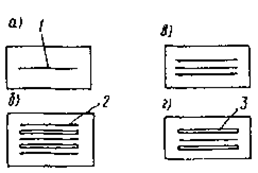
Рис. 1. Схемы зарядки кассет
а - без экранов; б - с усиливающими металлическими и флуоресцирующими экранами; в - с усиливающими металлическими экранами; г - с усиливающими флуоресцирующими экранами; 1 - радиографическая пленка; 2 - усиливающий металлический экран; 3 - усиливающий флуоресцирующий экран
4.17. Эталоны чувствительности устанавливают таким образом, чтобы их изображение было расположено на более светлой части снимков на расстоянии 25-50 мм от их краев.
При панорамном просвечивании кольцевых швов за одну установку источника излучения изображение эталонов чувствительности может располагаться в любой части по его длине.
4.18. Все работы с радиографической пленкой, если она не имеет светозащитной упаковки или не заряжена в светонепроницаемые кассеты, необходимо проводить в фотокомнате с затемнением и вентиляцией.
4.19. Для предохранения радиографической пленки от засвечивания ее укладывают в кассету, изготовленную из светонепроницаемого материала (черная бумага, дермантин, резина или алюминий).
Наиболее простой является кассета из черной светонепроницаемой бумаги, состоящая из двух конвертов, помещаемых один в другой открытыми концами внутрь. Для продления срока службы эти конверты помещают в дермантиновые кассеты, к которым можно пришить карманы для эталонов чувствительности.
4.20. Радиографическая пленка, флуоресцирующие и металлические усиливающие экраны помещают в кассеты в различных комбинациях в зависимости от требований, предъявляемых к качеству снимков. Схемы зарядки кассет приведены на рис. 1.
4.21. Заряжать и разряжать кассеты следует осторожно, чтобы не повредить эмульсионные слои пленок и усиливающих экранов. Пленки с поврежденным слоем и загрязненной поверхностью использовать не разрешается.
Заряжать и разряжать кассеты следует на сухом столе (где не проводят фотоработы), причем пленки необходимо укладывать на чистую бумагу.
4.22. Флуоресцирующие экраны, имеющие на поверхности люминофора следы грязи, пятна, трещины и царапины, применять нельзя; их дальнейшее использование возможно только в том случае, если будут удалены следы грязи или пятна, которые осторожно смывают теплой мыльной водой.
4.23. Металлические усиливающие экраны перед установкой в кассету необходимо разгладить, если на их поверхности имеются складки и неровности.
Технология радиографического контроля металлических конструкций с использованием рентгеновских аппаратов и источников радиоактивного излучения
4.24. Параметры и режимы радиографического контроля следует выбирать в зависимости от энергии излучения, материала и толщины просвечивания сварного соединения, схемы просвечивания и типа радиографической пленки.
4.25. При контроле сварных соединений для выбора источников ионизирующего излучения следует руководствоваться данными табл. 10.
|
Источник излучения |
Толщина просвечиваемого материала, мм |
||
|
сплавы на основе железа, меди |
сплавы на основе титана |
сплавы на основе алюминия |
|
|
Тулий-170 |
1 - 20 |
2 - 40 |
3 - 70 |
|
Селен-75 |
5 - 30 |
7 - 50 |
20 - 200 |
|
Иридий-192 |
5 - 80 |
10 - 120 |
40 - 350 |
|
Цезий-137 |
10- 120 |
70 - 150 |
50 - 350 |
|
Кобальт-60 |
30 - 200 . |
60 - 300 |
200 - 500 |
4.26. Напряжение и величина анодного тока рентгеновской трубки выбирается по табл. 11 (в случае использования мелкозернистых высококонтрастных пленок).
4.27. Схемы просвечивания стыковых, нахлесточных, угловых и тавровых соединений представлены на рис. 2.
4.28. Если контролируемый участок сварного соединения имеет переменное по толщине сечение, то рекомендуется применять компенсаторы. В зависимости от формы и расположения контролируемого изделия применяются твердые, насыпные или пастообразные компенсаторы (рис. 3).
|
Толщина просвечиваемого материала, мм |
Напряжение на рентгеновской трубке, кВ, не более |
||
|
сталь, сплавы на основе железа, меди |
сплавы на основе титана |
сплавы на основе алюминия |
|
|
0,4 |
1 |
5 |
40 |
|
0,7 |
2 |
12 |
50 |
|
1 |
3 |
20 |
60 |
|
2 |
6 |
38 |
80 |
|
5 |
10 |
54 |
100 |
|
7 |
18 |
59 |
120 |
|
10 |
24 |
67 |
150 |
|
21 |
47 |
100 |
200 |
|
27 |
57 |
112 |
250 |
|
33 |
72 |
132 |
300 |
|
46 |
106 |
210 |
400 |
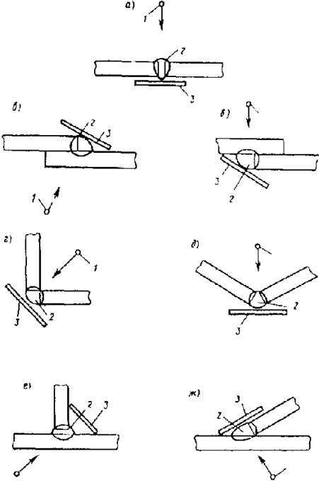
Рис. 2. Схема просвечивания стыковых (а), нахлесточных (б, в), угловых (г, д) и тавровых (е, ж) соединений.
1 - источник излучения; 2 - контролируемый участок; 3 - кассета с пленкой
4.29. Расстояние f от излучателя до поверхности контролируемого сварного соединения следует определять по формуле
f = 2 Ф S/K, (4)
где S - толщина контролируемого металла, мм; Ф - максимальный размер фокусного пятна, источника радиоактивного излучения и т. п., мм; К - требуемая чувствительность радиографического контроля, мм.
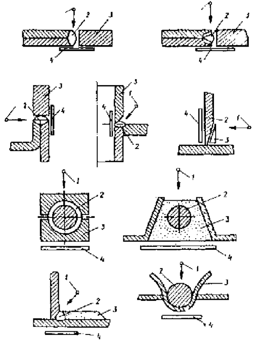
Рис. 3. Примеры применения компенсаторов
1- источник излучения; 2 - контролируемый объект; 3 - компенсатор; 4 - кассета
4.30. Схемы контроля кольцевых сварных швов представлены на рис. 4.
4.31. При выборе расстояния от источника излучения до поверхности контролируемого сварного соединения по схеме рис. 4 следует пользоваться табл. 12.
4.32. Минимальное количество экспозиций (снимков) должно определяться по формулам, приведенным в табл. 13.
4.33. Схемы панорамного и фронтального просвечивания кольцевых сварных швов представлены на рис. 5.
4.34. Криволинейные швы тройников и отводов можно просвечивать по одной из трех приведенных схем:
по схемам просвечивания изнутри трубы за одну (рис. 6, а) и за несколько (рис. 6, б) установок источника излучения;
по схемам просвечивания снаружи трубы за несколько установок источника излучения (рис.7).
|
Обозначение схемы на рис. 4 |
Определение величины фокусного расстояния, мм |
|
а |
1,1С(D -d) |
|
б |
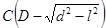 |
|
д, е |
2 СD |
|
в, ж, з |
1,4 С (D-d) |
|
г |
С(D-d cos 180°/N) |
где С=Ф/К при Ф/К>2 и С=2 при Ф/К<2; D, d - наружный и внутренний диаметры изделия, мм; l - длина снимка, мм; Ф - максимальный размер фокусного пятна источника, мм; К - требуемая чувствительность контроля, мм; N - число участков контроля.
|
Обозначение схемы на рис. 4 |
Количество экспозиций (участков контролируемой трубы) |
|
а |
|
|
б |
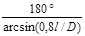 |
|
в, ж, з |
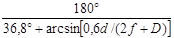 |
|
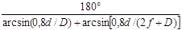 |
|
|
г |
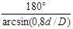 |
|
д |
3 при d/D³0,625 |
|
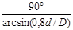 |
|
|
е |
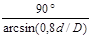 |
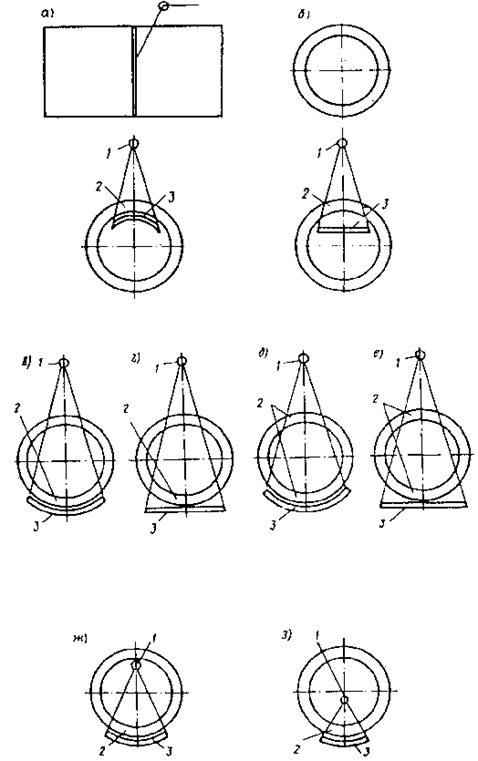
Рис. 4. Схема контроля кольцевых сварных швов
1 - источник излучения; 2 - контролируемый участок; 3 - кассета с пленкой
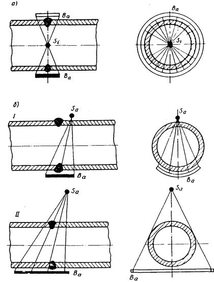
Рис. 5. Схемы просвечивания кольцевых сварных швов
а - панорамного изнутри трубы за одну установку источника излучения; б - фронтального через две стенки;
I - за три установки источника излучения; II - "на эллипс" за одну или две установки источника излучения
Выбор схемы производят в зависимости от диаметров свариваемых патрубков и их соотношения, а также условий доступа к сварному шву.
На рис. 5-7 приняты следующие обозначения: Si и Sa - источники излучения, расположенные соответственно изнутри и снаружи контролируемой сварной трубной конструкции; Вa и Вi - кассеты с пленкой, расположенные соответственно снаружи и изнутри контролируемой сварной трубной конструкции.
4.35. При просвечивании по схемам (см. рис. 5, а и 6) используют любые рентгеновские аппараты и источники радиоактивного излучения Иридий-192 и Цезий-137, максимально допустимую начальную активность которых выбирают в соответствии с табл. 14.
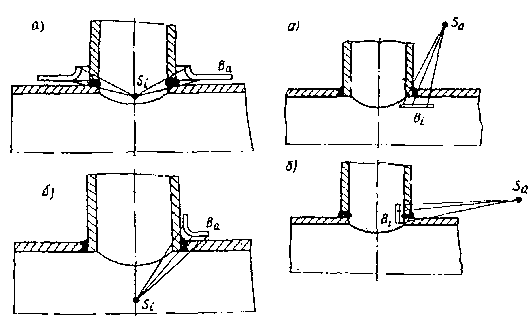
|
Рис. 6. Схемы просвечивания криволинейного шва изнутри трубы а - за одну установку источника излучения; б - за несколько установок источника излучения |
Рис. 7. Схемы просвечивания криволинейных швов снаружи трубы за несколько установок источника излучения при горизонтальном (а) и вертикальном (б) расположении пленки |
4.36. При просвечивании по схемам (рис. 5, б I и 7) также используют любые рентгеновские аппараты и источники радиоактивного излучения Иридий-192 и Цезий-137, максимально допустимую активность которых выбирают в соответствии с табл. 15.
Фокусное расстояние при просвечивании по схемам (см. рис. 7) должно быть не менее диаметра того патрубка, к внутренней поверхности которого прикладывают кассеты с рентгеновской пленкой.
4.37. Просвечивание по схеме (см. рис. 5, б II) может быть осуществлено следующим образом. За одну экспозицию "на эллипс" просвечивают:
трубы диаметром 57 мм с толщиной стенки не более 5 мм и диаметром 60 мм с толщиной стенки 4 мм при использовании Иридия-192;
трубы диаметром 76 мм с толщиной стенки 3 и 4 мм диаметрами 57 и 60 мм при любой толщине стенки при использовании Цезия-137.
За две экспозиции под углом 90° просвечивают трубы диаметрами 114 и 133 мм с толщиной стенки 6 мм и менее и диаметрами 57-108 мм с любой толщиной стенки при использовании Иридия-192 и Цезия-137.
Примечания: 1. Трубы диаметрами 114 и 133мм с толщиной стенки более 6 мм следует просвечивать за три установки источника излучения по схеме (рис. 5, б. I). Активность источников излучения выбирают в соответствии с табл. 15 и аналогичную трубам диаметром 159 мм. 2. Просвечивание за две экспозиции под углом 90° можно выполнять на гибкую кассету, которая должна охватывать половину окружности сварного шва. 3. При использовании рентгеновского излучения просвечивание через две стенки должно быть осуществлено по схеме (см. рис. 5, б II). 4. Просвечивание сварных швов тройников и отводов небольшого диаметра (до 76 мм включительно) можно осуществлять в соответствии с требованиями табл. 12, схема "а" (весь шов просвечивают на одну пленку).
|
Чувствительность контроля, мм |
Максимальное допустимая начальная активность источников излучения при панорамном просвечивании, ГБк, для труб (патрубков) разных диаметров, мм |
||||||||
|
159-245 |
273,325 |
351,377 |
426 |
530 |
630, 720 |
820 |
1020 1 |
1220, 1420 |
|
|
Иридий-192 |
|||||||||
|
0,1 |
44,5 |
44,5 |
44,5 |
148 |
148 |
148 |
148 |
740 |
740 |
|
0,2 |
148 |
445 |
445 |
740 |
740 |
740 |
740 |
4440 |
4440 |
|
0,3 |
445 |
740 |
740 |
1480 |
1480 |
4440 |
4440 |
4440 |
4440 |
|
0,4 |
740 |
1480 |
1480 |
4440 |
4440 |
4440 |
4440 |
||
|
0,5 |
1480 |
1480 |
4440 |
4440 |
4440 |
- |
- |
- |
- |
|
0,6 |
4440 |
4440 |
4440 |
- |
- |
- |
- |
- |
- |
|
0,8 |
4440 |
||||||||
|
1 и выше |
- |
- |
- |
Остальное 7400 |
- |
- |
- |
- |
|
|
Цезий-137 |
|||||||||
|
0,1 |
- |
Не допускается |
- |
- |
- |
- |
- |
||
|
0,2 |
- |
- |
- |
- |
- |
- |
51,9 |
51,9 |
51,9 |
|
0,3 |
- |
- |
- |
51,9 |
51,9 |
51,9 |
51,9 |
519 |
519 |
|
0,4 |
- |
51.9 |
51,9 |
51,9 |
51,9 |
207,6 |
207,6 |
519 |
519 |
|
0,5 |
51,9 |
51,9 |
51,9 |
51,9 |
207,6 |
519 |
519 |
- |
- |
|
0,6 |
51,9 |
51,9 |
207,6 |
519 |
519 |
519 |
- |
- |
- |
|
0,8 |
207,6 |
519 |
519 |
519 |
519 |
- |
- |
- |
- |
|
1 и выше |
519 |
519 |
- |
- |
Остальное 2076 |
- |
- |
- |
|
|
Чувствительность контроля, мм |
Максимально допустимая начальная активность источников излучения при фронтальном просвечивании через две стенки, ГБк, для труб (патрубков) диаметром, мм |
|||||||
|
159-219 |
245 |
273-351 |
377 |
426,530 |
630, 720 |
820 |
1020, 1420 |
|
|
Иридий-192 |
||||||||
|
0,1 |
44,5 |
44,5 |
44,5 |
148 |
148 |
445 |
445 |
740 |
|
0,2 |
148 |
445 |
445 |
740 |
740 |
1480 |
1480 |
4440 |
|
0,3 |
740 |
740 |
740 |
1480 |
1480 |
4440 |
4440 |
|
|
0,4 |
1480 |
1480 |
1480 |
4440 |
4440 |
4440 |
- |
- |
|
0,5 |
1480 |
4440 |
4440 |
4440 |
- |
- |
- |
- |
|
0,6 |
4440 |
4440 |
4440 |
4440 |
- |
- |
- |
- |
|
0,8 |
4440 |
- |
- |
- |
- |
- |
- |
- |
|
1 и выше |
- |
- |
- |
Остальное 7400 |
- |
- |
- |
|
|
Цезий-137 |
||||||||
|
0,1 |
- |
- |
Не допускается |
- |
- |
- |
- |
|
|
0,2 |
- |
- |
- |
- |
- |
51,9 |
51,9 |
51,9 |
|
0,3 |
- |
- |
- |
51,9 |
51,9 |
51,9 |
51,9 |
519 |
|
0,4 |
51,9 |
51,9 |
51,9 |
51,9 |
51,9 |
519 |
519 |
- |
|
0,5 |
51,9 |
51,9 |
51,9 |
207,6 |
519 |
519 |
519 |
- |
|
0,6 |
51,9 |
51,9 |
207,6 |
207,6 |
519 |
519 |
519 |
- |
|
0,8 |
207,6 |
519 |
519 |
519 |
519 |
- |
- |
- |
|
1 и выше |
519 |
519 |
519 |
519 |
Остальное 2076 |
- |
- |
|
4.38. Фокусные расстояния при просвечивании по схеме (см. рис. 5, б II) выбирают по табл. 16 в зависимости от активности используемого источника излучения и требуемой чувствительности контроля.
4.39. Смещение источника излучения относительно плоскости сварного шва при контроле по схеме (см. рис. 5, б II) составляет 0,35-0,5F при просвечивании за одну экспозицию и около 0,2F при просвечивании за две экспозиции (где F - фокусное расстояние).
4.40. При просвечивании по схемам (см. рис. 5) угол между направлением излучения и плоскостью сварного шва не должен превышать 5°.
4.41. При просвечивании по схемам (см. рис. 6, 7) угол между направлением излучения и плоскостью контролируемого участка сварного шва в любой его точке не должен превышать 30°.
4.42. Величина чувствительности получаемых снимков (чувствительность контроля) не должна превышать половины размера по глубине (в направлении излучения) минимального из допустимых дефектов, которые регламентирует техническая документация на контролируемую сварную конструкцию.
Чувствительность контроля К определяют (KI, мм, или КII, %) по изображению на снимке канавочного, проволочного или пластинчатого эталона по формулам при использовании:
канавочных или пластинчатых эталонов чувствительности
KI=hMIN (5)
или
KII=(hMIN/S)100; (6)
проволочных эталонов чувствительности
KI=dMIN (7)
или
KII=(dMIN/S)100, (8)
где S - контролируемая толщина металла в месте установки эталона, мм; hMIN - глубина наименьшей видимой на снимке канавки канавочного эталона или наименьшая толщина пластинчатого эталона, при которой на снимке видно отверстие, равное удвоенной толщине этого эталона, мм; dMIN - диаметр наименьшей видимой на снимке проволоки проволочного эталона, мм.
4.43. Экспозицию (фактор экспозиции) определяют по специальным номограммам.
|
Чувствительность контроля, мм |
Минимальное фокусное расстояние, мм, для труб разных диаметров |
Источник излучения |
|||||||
|
57 |
60 |
76 |
89 |
108 |
114 |
133 |
тип |
Начальная активность, ГБк |
|
|
0,1 |
6,5d |
7d |
5,5d |
5,5d |
5d |
7,5d |
5,5d |
Иридий-192 |
1480 |
|
Цезий-137 |
51,9 |
||||||||
|
8,5d |
9,5d |
7,5d |
7,5d |
6,5d |
10d |
7,5d |
Иридий-192 |
4440 |
|
|
11,5d |
11,5d |
10d |
10d |
9d |
14d |
10d |
Цезий-137 |
207,6 |
|
|
14d |
14d |
11d |
11d |
10 |
15d |
11d |
Иридий-192 |
7400 |
|
|
Цезий-137 |
519 |
||||||||
|
0,2 |
6,5d |
7d |
5,5d |
5,5d |
5d |
7,5d |
5,5d |
Иридий-192 |
7400 |
|
Цезий-137 |
519 |
||||||||
|
5,5d |
6d |
5d |
5d |
5d |
6d |
5d |
" |
207,6 |
|
|
10,5d |
12d |
9,5d |
9d |
8,5d |
11,5d |
9d |
" |
2076 |
|
|
0,3 |
7d |
8d |
6d |
6d |
5,5d |
8,5d |
5d |
" |
2076 |
|
0,4 |
5,5d |
6d |
5d |
5d |
5d |
6d |
5d |
" |
2076 |
Примечание. Для источника излучения Иридий-192, активностью до 1480 ГБк, минимальное фокусное расстояние составляет 5d.
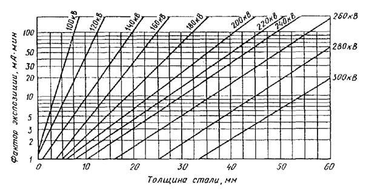
Рис. 8. Номограмма для определения экспозиции при просвечивании стали на радиографическую пленку РТ-СШ при разных напряжениях на трубке рентгеновского аппарата (фокусное расстояние 700 мм)
На рис. 8 и 9 приведены номограммы для пленки РТ-СШ и РТ-1. Для определения времени экспозиции при использовании других типов пленки полученные по номограммам результаты необходимо уточнить, принимая во внимание величины относительной чувствительности, как указано в табл. 2 (например, при использовании пленки РТ-4М полученное по номограмме рис. 8 время экспозиции должно быть увеличено в 7/2 = 3,5 раза).
На номограмме мощность экспозиционной дозы на расстоянии 1 м приведена в Р/с. Для пересчета той же мощности в единицы А/кг следует пользоваться соотношением 1 А/кг =3,88×103 Р/с.
В случае необходимости делают несколько пробных снимков с разным временем экспозиции и после проявления пленки определяют чувствительность снимков. Максимальная чувствительность указывает на оптимальное время экспозиции для данных условий.
4.44. Если фокусное расстояние отличается от приведенного на рис. 8, то фактор экспозиции можно определять из следующей зависимости:
Ф2 =Ф1(F2/F1) (9)
где F1 - приведенное на номограмме (см. рис. 8) фокусное расстояние; F2 -фокусное расстояние, необходимое при работе; Ф1 и Ф2 - факторы экспозиции при фокусных расстояниях соответственно.
4.45. При использовании в качестве источника излучения изотопа Иридий-192 через каждые 1-2 недели необходимо увеличивать время экспозиции, которое определяется делением его первоначального значения на коэффициент II, значения которого приведены в табл. 17.
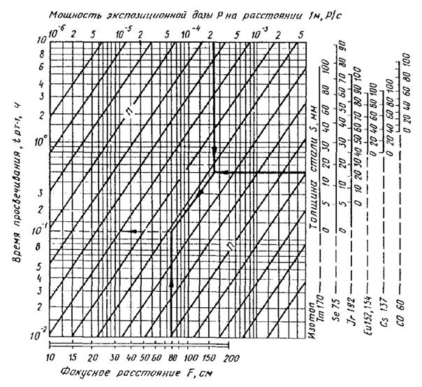
Источники: Тm110(dРВ= 0,05/0,05 мм); Sе75(dРВ=0,1/0,2 мм); Ir191(dРВ=0,1/0,2 мм); =Cs137(dРВ=0,1/0,2 мм); Со80(dРВ=0,2/0,2 мм) . Ключ номограммы PSn, hFt.
|
Время, недели |
Коэффициент П |
Время, недели |
Коэффициент П |
|
0 |
1 |
11 |
0,486 |
|
1 |
0,937 |
12 |
0,455 |
|
2 |
0,877 |
13 |
0,426 |
|
3 |
0,821 |
14 |
0,399 |
|
4 |
0,796 |
15 |
0,374 |
|
5 |
0,720 |
16 |
0,350 |
|
6 |
0,675 |
17 |
.0,328 |
|
7 |
0,632 |
18 |
0,307 |
|
8 |
0,592 |
19 |
0,288 |
|
9 |
0,554 |
20 |
0,269 |
|
10 |
0,519 |
21 |
0,252 |
4.46. Суммарная разностенность толщин сварных элементов конструкции, просвечиваемых за одну экспозицию, не должна превышать следующих величин
(для оптических плотностей 1,5-3, е.о.п., мм):
при напряжении на рентгеновской трубке, кВ:
200....................................................................... 5,5
260....................................................................... 7
при использовании:
Иридия-192........................................................ 15
Цезия-137........................................................... 17
4.47. При наличии оборудования для просмотра снимков, имеющих степень почернения до 4 е.о.п., суммарная разностенность не должна превышать, мм:
при напряжении на трубке, кВ:
200....................................................................... 7,5
260....................................................................... 9
при использовании:
Иридия-192........................................................ 20
Цезия-137........................................................... 22
Примечания: 1. При просвечивании необходимо использовать технические пленки. 2. Изображение на снимке более тонкого элемента сварной конструкции должно иметь максимальную оптическую плотность (3 и 3,6-4 е.о.п. соответственно). 3. При определении чувствительности контроля расчет необходимо вести по той толщине стенки, на которую установлены эталоны чувствительности.
4.48. Длина каждого снимка должна обеспечивать перекрытие изображения смежных участков сварного соединения на величину не менее 20 мм, а его ширина - получение изображения сварного шва и прилегающих к нему околошовных зон шириной не менее 20 мм с каждой стороны.
4.49. Если необходим контроль сварных швов приварки "заплат", то последние просвечивают через две стенки по аналогии со схемой рис. 5. Источник излучения располагают с обратной от "заплаты" стороны трубопровода на нормали, проведенной из геометрического центра этой "заплаты".
При просвечивании используют любые рентгеновские аппараты и источники радиоактивного излучения, максимально допустимую активность которых выбирают в соответствии с табл. 15, причем размер заплаты в любом направлении не должен превышать величину фокусного расстояния.
В тех случаях, когда размер заплаты хотя бы в одном из направлений превышает величину фокусного расстояния, просвечивание необходимо проводить путем нескольких установок источника излучения с соблюдением следующих требований:
угол между направлением излучения и нормалью к плоскости контролируемого участка сварного шва в любой его точке не должен превышать 30°;
степень потемнения получаемых при контроле снимков должна соответствовать требованиям ГОСТ 7512-82.
Чувствительность получаемых радиографических снимков во всех случаях должна удовлетворять требованиям п. 4.42.
Фотообработка экспонированной пленки
4.50. Обрабатывать экспонированные пленки следует в фотокомнате, которую необходимо вентилировать и в холодное время отапливать.
Работы с открытой пленкой проводят в зависимости от типа пленки в полной темноте или при свете неактиничного фонаря (темно-красного или желтого). Для проверки неактиничности фонаря необходимо его светом с расстояния 10-15 см засветить небольшие отрезки пленки в течение 5-7 мин, предохраняя половину площади этих отрезков от засвечивания черной бумагой. Если после обработки этих отрезков будет заметна граница между двумя участками пленки, то светофильтр фонаря следует заменить на более темный.
Проверять светофильтры рекомендуется не реже одного раза в месяц.
4.51. Рабочие места для "сухих" работ (зарядка и разрядка кассет и т. п.) должны быть отделены от участка "мокрых" работ (обработка).
4.52. Проявляющие и фиксирующие растворы следует приготовлять в посуде из стекла, фарфора или нержавеющей стали.
4.53. Экспонированную пленку необходимо проявлять в растворах, рекомендуемых предприятием-изготовителем пленки.
4.54. Отечественную пленку рекомендуется проявлять в проявителе "Рентген-2", который в виде набора химикатов на 1,5; 5 и 15 л раствора под названием "Набор 1" по ТУ Минхимпрома выпускает производство № 1 Рижского НПО "Биохимреактив".
Химический состав проявителя "Рентген-2"
Метол (пара-метнламинофенолсульфат) марки А по ГОСТ 25664-83, г............... 2,2
Натрий сернистокислый (сульфат натрия) безводный по ГОСТ 5644-75*, г....... 72,0
Гидрохинон (парадиоксибензол) по ГОСТ 19627-74*,г.......................................... 8,8
Натрий углекислый безводный или сода кальценированная
(синтетическая) по ГОСТ 83-79*, г............................................................................ 48,0
Калий бромистый по ГОСТ 4160-74*, г.................................................................... 4,0
Вода дистиллированная по ГОСТ 2874-82, мл.................................................. до 1000,0
рН раствора при 20°С........................................................................................... 10,4 ± 0,1
Примечание. Состав проявителя указан, исходя из расчета 100% содержания основного вещества.
4.55. При составлении проявляющих растворов нужно строго придерживаться инструкции предприятия-изготовителя.
4.56. Проявитель необходимо применять не раньше чем через 12 ч и не позднее 5 сут после его приготовления.
4.57. При проявлении температура раствора должна быть в пределах 18-24°С.
4.58. Для свежих проявляющих растворов время проявления указано в рецептах предприятия, выпускающего рентгеновскую пленку. Время проявления может быть изменено в зависимости от температуры проявителя в соответствии с табл. 18.
4.59. В зависимости от степени сработанности проявителя время проявления увеличивается в соответствии с табл. 19.
4.60. Бачки и кюветы для проявления должны быть чистыми, а размеры их должны превышать размеры проявляемых пленок. Количество раствора, наливаемого в кюветы, приведено в табл. 20.
4.61. Перед фиксированием проявленную пленку следует промыть в воде, затем быстро ввести в фиксирующий раствор. При фиксировании невосстановленное во время проявления бромистое серебро растворяется и уходит в осадок. Фиксирование осуществляют раствором гипосульфита или фиксажа "БКФ-2" следующего состава:
Тиосульфат натрия кристаллический (гипосульфит), г.................................. 260
Аммоний хлористый, г...................................................................................... 50
|
Температура проявителя, °С |
18-19 |
20 |
21 |
22 |
23 |
24 |
|
Время проявления, мин |
6 |
5,3 |
5 |
4,5 |
4 |
3,5 |
|
Формат пленки, см |
Количество проявляемых пленок в 1 л, шт., при времени проявления, мин |
||
|
5 |
6 |
7 |
|
|
13´18 |
25 |
12 |
6 |
|
18´24 |
14 |
6 |
3 |
|
24´30 |
8 |
4 |
2 |
|
30´40 |
5 |
2 |
1 |
Примечание. Внешним признаком сработанности проявителя является его помутнение.
|
Размер кювета, см |
Раствор, см3 |
|
|
1 проявителя |
фиксажа |
|
|
13´18 |
300 |
350 |
|
18´24 |
500 |
550 |
|
24´30 |
600 |
650 |
|
30´40 |
1000 |
1100 |
Примечания: 1. В одном кювете рекомендуется обрабатывать одновременно не более 10 пленок. 2. Для обработки 1 м пленки необходимо около 1,3 л проявителя и 1 л фиксажа.
Натрий пиросернисткислый (метабисульфит натрия), г............................. 17
Вода дистиллированная, мл, до...................................................................... 1000
4.62. Для нейтрализации остатков проявителя в эмульсии пленки, которые могут попасть в раствор фиксажа и испортить его, в фиксирующие растворы рекомендуется добавлять сульфит натрия и серную или уксусную кислоту.
Кислый фиксаж приготовляют по следующему рецепту:
Раствор I
Гипосульфит, г.................................................. 400
Вода, см3................................................................................. 500
Раствор II
Сульфит кристаллический, г........................... 50
Уксусная кислота 30 %-я, см............................ 40
Вода, см3............................................................. 150
Через 10-15 мин после приготовления раствор II вливают в раствор I и добавляют воды до 1000 см3.
Время фиксирования в таком растворе 6-8 мин. Температура фиксажа должна быть 15-18°С.
4.63. Пленки выдерживают в фнксажном растворе до полного удаления светлых пятен невосстановленного бромистого серебра, что определяют, просматривая пленки при красном свете. Передержка пленок в чистом растворе фиксажа не портит их.
4.64. Раствор фиксажа должен быть прозрачным, старые окрашенные фиксажи портят негатив.
Не допускается добавлять свежий раствор фиксажа в старый.
4.65. После фиксирования негативы промывают в проточной воде в течение 20-25 мин, а если ее нет, то негативы промывают в 3-4 сменах воды по 5-10 мин в каждой.
4.66. Для удаления с пленки жировых пятен, которые могут возникнуть при недостаточно аккуратном обращении и тем самым затруднить расшифровку снимков, негатив можно промыть в спирте-ректификате. Применять сырец или денатурированный спирт недопустимо, так как негатив окрасится сивушным маслом или красителем. Расход спирта составляет 1,2 л на 1м2 радиографической пленки.
4.67. Рулонную радиографическую пленку можно обрабатывать автоматизированным, механизированным и ручным способами.
4.68. Для автоматизированной фотообработки могут быть использованы автоматы рольного типа, например АФ-40, АФ-20, ФО-25П. Можно использовать также импортные проявочные автоматы такого же типа.
4.69. Фотообработку рулонной пленки можно выполнять вручную при помощи ленты "Коррекс" шириной 60 мм и проволочного приспособления (рис. 10) которое представляет собой крестовину, сделанную из проволоки диаметром 1 -2 мм, с вертикальной стойкой, заканчивающейся петлей в центре. Такое приспособление легко может быть изготовлено самостоятельно.
Рулонную пленку следует освободить от светозащитной упаковки, свернуть в рулон вместе с лентой "Коррекс" и закрепить резинкой или тесьмой.
Изготовленный таким образом рулон надевают на стойку крестовины, которая служит для вращения крестовины с пленкой в процессе ее фотообработки. Конец скрепляющей резинки или тесьмы присоединяют к загнутому концу крестовины, затем рулонную, пленку обрабатывают в высоких (не менее 90 мм) бачках.
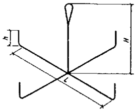
Рис. 10. Приспособление для фотообработки рулонной пленки
4.70. Если нет проявительных приборов и ленты "Коррекс", то фотообработку рулонной пленки можно выполнять вручную в высоких (не менее 75 мм) кюветах или круглых бачках в такой последовательности операций:
снять светоэащитную упаковку с отрезка пленки и свернуть пленку в рулон диаметром 60-80 мм;
залить бачок проявителем и постепенно ввести в него весь рулон пленки, начиная с его свободного конца, причем пленка в бачке также должна быть расположена в виде рулона, между витками которого необходимо перемещать стеклянную палочку, чтобы предотвратить слипание и создать условия для равномерной проработки снимка;
после проявления перенести рулон пленки в бачок с водой для промежуточной промывки.
В процессе всех "мокрых" операций необходимо постоянно отодвигать витки пленки один от другого, перемещая между ними стеклянную палочку или раздвигая их рукой.
Допускается фотообработка нескольких отрезков рулонной пленки одновременно.
4.71. Проявленную пленку необходимо промыть в воде, затем ввести в фиксирующий раствор.
4.72. Проявленная рулонная пленка фиксируется либо в бачке для фиксажа проявочного прибора, либо в высокой кювете (не ниже 75 мм) ручным способом.
4.73. Время фиксирования рулонной пленки зависит от типа пленки и фиксажа, оно указано на коробках с закрепителем.
При использовании пленки РТ-СШ и фиксажа "БКФ-2" время фиксирования составляет 10-15 мин (в зависимости от степени сработанности фиксажа).
4.74. Для сушки рулонную пленку необходимо подвешивать при помощи специальных держателей (рис. 11), изготовленных из толстой проволоки (диаметром не менее 1,5 мм). Можно подвешивать пленку, перекинув ее через капроновую или любую другую нить.
4.75. Схема сушки рулонной пленки приведена на рис. 13 (на параллельных нитях или на одной), причем расстояние между двумя соседними держателями должно быть не менее 10см, чтобы предотвратить слипание пленки. Это расстояние поддерживается при помощи проволочных или деревянных распорок, устанавливаемых между соседними держателями, как показано на рис. 12.
4.76. Сушить негативы следует в сухом чистом помещении, в котором исключено оседание пыли на сырую пленку, рекомендуется подвешивать негативы на специальных закрепках из нержавеющей стали.
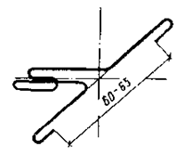
Рис. 11. Держатель для подвешивания снимков
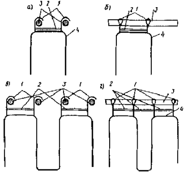
Рис. 12. Схема подвешивания для сушки рулонной пленки
а - длиной до 3,2 м на параллельных нитях; б-то же, на одной нити, в - длиной св. 3,2 м на параллельных нитях, г - то же, на одной нити; 1 - проволочные держатели; 2 - распорки; 3 - нить, 4 - рулонная пленка
4.77. Не следует вешать негативы около приборов отопления. Для ускорения сушки пленки рекомендуется пользоваться специальными сушильными шкафами.
4.78. Виды дефектов при обработке и» причины их возникновения приведены в табл. 21.
|
Вид дефекта |
Причины |
|
Вуаль общая или местная |
Превышение срока хранения пленки или хранение ее не по правилам Слишком сильный свет от красного фонаря Передержка в теплом проявителе Рассеянное излучение, возможно вторичное |
|
Недостаточная резкость снимка по всей площади |
Засвечивание гамма-лучами При экспонировании кассета с пленкой была недостаточно прижата к просвечиваемой поверхности Слишком мало фокусное расстояние |
|
Недостаточная резкость снимка по всей площади |
Ошибочная зарядка кассеты, пленка помещена между усиливающим и свинцовым экранами |
|
Вялый монотонный или плотный негатив |
Во время просвечивания вибрировал или сдвигался источник или кассета с пленкой Проявитель слишком теплый и крепкий |
|
Жесткий снимок - передержка |
Передержка со слишком коротким проявлением |
|
Тонкий снимок - недодержка |
Слишком большая экспозиция Слишком малая экспозиция Слишком холодный или истощенный проявитель или недостаточная его концентрация |
|
Желтые пятна на негативе |
Малая экспозиция Проявитель окисленный, окрашивает пленку |
|
Белые точки на негативе |
Пыль на пленке или соприкосновение ее со свинцом |
|
Желтая вуаль без серого тона после длительного хранения негатива |
Слишком короткое время пребывания в фиксаже |
4.79. При проведении фотообработки следует обращать особое внимание на соблюдение требований завода-изготовителя радиографической пленки по времени проявления и температуре растворов.
После фотообработки и сушки на снимках не должно быть дефектов, которые могут повлиять на правильность расшифровки результатов контроля.
Расшифровка радиографических снимков и оформление документации по результатам контроля
4.80. Качество сварного шва оценивают по сухой пленке на негатоскопе. Рекомендуется просматривать снимки в затемненном помещении.
4.81. Для расшифровки рулонных снимков их скатывают в рулон диаметром 70-100 мм, укладывают с левой стороны негатоскопа. Затем один конец пленки протягивают через негатоскоп, расшифровывают и скатывают в рулон с противоположной стороны негатоскопа, причем в поле зрения дефектоскописта постоянно должно находиться изображение эталона чувствительности.
Если во время панорамного просвечивания эталоны чувствительности были уложены так, что последнее условие не соблюдается, тогда с любого конца пленки отрезают участок длиной 50-70 мм так, чтобы на этом участке было видно изображение канавочного эталона чувствительности.
Отрезанный участок пленки устанавливают на негатоскопе, и глубину дефектов на просматриваемом отрезке определяют при помощи этого эталона чувствительности. Заключение следует давать по каждому отрезку пленки длиной 100 мм.
4.82. Подвергаемые расшифровке радиографические снимки сварных соединений трубопроводов на участках с изображением основного металла должны иметь потемнение, находящееся в пределах 2-3 е.о.п.
При наличии удовлетворительных условий для просмотра снимков, степень их потемнения может превышать 3 е.о.п.
При использовании высокочувствительных экранных радиографических пленок снимки должны иметь потемнение, находящееся в пределах 1-2 е.о.п. (на участках с изображением основного металла).
4.83. Результаты расшифровки снимков с указанием их чувствительности и всех выявленных дефектов заносят в "Заключение по проверке качества сварного стыка физическими методами контроля". Формы заключений приведены в прил.24.
4.84. При расшифровке снимков и оформлении заключений по радиографическому контролю необходимо пользоваться условными обозначениями различных типов дефектов в соответствии с ГОСТ 7512-82.
4.85. Каждый тип дефекта должен быть отмечен в заключении отдельно и иметь подробное описание в соответствии с критериями оценки качества сварных соединений, установленными нормативно-технической документацией с указанием:
символа условного обозначения дефекта;
размера дефекта или суммарной длины цепочки и скопления пор в миллиметрах (с указанием преобладающего размера дефекта в группе);
количества однотипных дефектов на снимке;
глубины дефектов (в мм или % от толщины металла свариваемых элементов).
Допускается вместо записи глубины дефектов (в мм или %) указать с помощью знаков >, = или < величину дефекта по отношению к максимально допустимой для данного сварного соединения.
В заключениях по результатам радиографического контроля допускается запись одной строкой данных расшифровки по снимкам одинаковой чувствительности и не имеющим изображения дефектов.
Примеры записи дефектов при оформлении заключений приведены ниже.
Пример 1. На снимке видны изображения:
двух продольных трещин длиной 10 мм и глубиной 20% толщины основного металла, непровара по кромке длиной 100 мм и глубиной 7 %;
одного шлакового включения с максимальным размером 5 мм и глубиной 10%, цепочки пор длиной 25 мм с диаметром поры 2 мм и глубиной 5 %.
При расшифровке этого снимка делают следующую запись:
Еа - 10 - 2 - 20%;
Дс - 100 - 7%;
Ва - 5 - 1 - 10%;
Ас - 25 - 2 - 1 - 5 %.
Пример 2. На снимке видны изображения десяти одиночных сферических пор диаметром (глубиной) около 1 мм.
При расшифровке этого снимка записывают:
Аа - 1 - 10<10%.
4.86. В тех случаях, когда высота усиления сварного шва меньше толщины канавочного эталона чувствительности или имитатора, допускается определять глубину дефекта по следующей методике.
С помощью фотометра или денситометра определяют высоту усиления сварного шва hШ, мм:
hШ=h1-h2 (10)
где h1 - толщина канавочного эталона (или имитатора), мм; h2 - глубина той канавки эталона (канавки или отверстия имитатора), плотность потемнения которой равна плотности потемнения усиления сварного шва или меньше ее, мм.
Визуальным сравнением потемнения дефекта находят ту канавку эталона (имитатора) h3, которая имеет такое же, как и он, по величине почернение. Действительная глубина дефекта hД,мм, равна
hД=h3-h2 (11)
Пример 3. На радиографическом снимке усиления сварного шва по плотности потемнения соответствуют канавке глубиной 1 мм канавочного эталона чувствительности Fе 2, а шлаковое включение имеет такое же почернение, как и канавка глубиной 1,5 мм.
Следовательно, реальная глубина дефекта составляет 1,5-1 =0,5 мм (а не 1,5 мм, как это было бы без внесения поправки).
4.87. При обнаружении в сварных швах недопустимых дефектов швы должны быть забракованы и после исправления повторно проконтролированы в соответствии с требованиями действующих нормативных документов.
4.88. Готовые форматные снимки группируют по стыкам и складывают для хранения, рулонные снимки скручивают до диаметра 7-12 см (можно скручивать в один рулон несколько снимков) и также складывают для хранения. Хранят готовые снимки, если нет иных указаний, до сдачи объекта в эксплуатацию.
4.89. Начальник лаборатории, проводящей радиографический контроль:
принимает от дефектоскопистов все снимки;
проверяет соответствие снимков требованиям нормативных документов;
проверяет правильность оценки дефектов и оформления заключений.
Требования безопасности при проведении радиографического контроля
4.90. При проведении радиографического контроля во избежание поражения электрическим током и опасного воздействия на обслуживающий персонал ионизирующего излучения и вредных газов, образующихся в воздухе под действием излучения, необходимо строго соблюдать правила техники безопасности, установленные нормативными документами.
4.91. Организации, где постоянно проводятся работы по радиографическому контролю, должны иметь разрешение на право производства данного вида работ, которое выдается местными органами санитарного надзора.
4.92. Помещения для радиографического контроля (в том числе лаборатории), хранилища для радиоактивных веществ должны быть оборудованы согласно "Основным санитарным правилам работы с радиоактивными веществами и другими источниками ионизирующих излучений" ОСП 72/87 и "Санитарным правилам по радиоизотопной дефектоскопии" № 1171-74.
4.93. Радиографический контроль и перезарядка радиоактивных источников должны проводиться только с использованием специально предназначенной для этих целей и находящейся в исправном состоянии аппаратуры, документация на изготовление и эксплуатацию которой при выпуске в количестве более трех экземпляров должна быть согласована с Государственным комитетом СССР по мирному использованию атомной энергии и Главным санитарно-эпидемиологическим управлением Министерства здравоохранения СССР; до трех экземпляров - с местными органами санитарно-эпидемиологической службы
4.94. До начала эксплуатации рентгеновских аппаратов и гамма-дефектоскопов администрация организации (предприятия) обязана на основе ОСП 72/87 "Норм радиационной безопасности" НРБ-76 № 141-76 разработать инструкции по радиационной безопасности, устанавливающие действие персонала, порядок проведения работ по радиоизотопной дефектоскопии, учета, хранения и выдачи источников излучения, содержания помещений и т. д.
4.95. К работе по проведению радиографического контроля допускаются лица, прошедшие специальный медицинский осмотр, инструктаж по технике безопасности и сдавшие экзамен по безопасному ведению работ в установленном порядке.
4.96. Лица, временно привлекаемые к работам, связанным с использованием рентгеновских аппаратов и гамма-дефектоскопов, должны быть обучены правилам безопасности при работе с источниками ионизирующего излучения и должны быть допущены по медицинским показаниям.
4.97. Периодическая проверка знаний обслуживающим персоналом инструкций по технике безопасности и радиационной безопасности должна производиться не реже одного раза в год одновременно с периодическими проверками квалификации персонала.
4.98. Все имеющиеся в наличии рентгеновские аппараты и гамма-дефектоскопы, поступившие на предприятие, должны регистрироваться в соответствии с ОСП 72/87.
К моменту получения рентгеновских аппаратов, гамма-дефектоскопов администрация приказом должна назначить ответственное лицо, следящее за учетом, хранением и выдачей оборудования, а также назначить ответственного за радиационную безопасность и электробезопасность.
4.99. Зарядка гамма-дефектоскопов или транспортно-перезарядных контейнеров должна производиться только специальными организациями В/О "Изотоп" (за исключением случаев, оговоренных в инструкциях по эксплуатации гамма-дефектоскопов).
4.100. Хранение и перезарядка гамма-дефектоскопов вне специально оборудованных мест запрещены.
4.101. Переносные гамма-дефектоскопы следует хранить в специальных помещениях - хранилищах, которые закрываются на ключ и опечатываются.
4.102. Независимо от типа источника излучения и вида защиты предельно допустимая доза облучения в местах нахождения рабочего персонала не должна превышать величин, установленных НРБ-76.
4.103. В организациях, где проводятся работы с применением источников ионизирующего излучения, должен осуществляться дозиметрический контроль, который обеспечивает соблюдение норм радиационной безопасности и получение информации о дозе облучения персонала. Данные радиационного контроля записывают в специальный журнал.
4.104. Индивидуальный контроль за дозой внешнего облучения ведется с помощью индивидуальных дозиметров. При проверке принимаются наибольшие показания дозиметров.
4.105. Данные о дозах облучения (переоблучения) персонала и эффективности средств защиты необходимо сообщать администрации организации (ежемесячно), а также контролирующему санитарному врачу (по его требованию) для принятия мер к уменьшению доз облучения.
4.106. При аварийных ситуациях, когда произошло переоблучение работающих, дозу облучения До можно рассчитать по формуле
До =8,4 Мt/r2, (12)
где До - доза облучения, Зв; М - гамма-эквивалент изотопа, Зв/с; t - время облучения, ч; г - расстояние от источника, см.
4.107. Квартальная предельная допустимая доза облучения составляет 3×10-2 Зв. При этом допускается увеличение дозы облучения кистей рук в 5 раз.
4.108. Предельно допустимой дозой общего облучения дефектоскописта следует считать 5×10-2 Зв в год, но не более 3×10-2 Зв за квартал.
Назначение и область применения
5.1. Электрорадиографический контроль предназначен для выявления в сварном шве и околошовной зоне трещин, непроваров, пор, металлических включений (вольфрамовых) и неметаллических включений (шлаковых), а также недоступных для внешнего осмотра наружных дефектов - смешений кромок, вогнутости корня, прожогов, превышений проплава и т.п. в заводских и монтажных условиях.
При электрорадиографическом контроле гарантируется выявление тех же дефектов, что и при контроле с использованием радиографической пленки. Виды и размеры дефектов, выявление которых не обеспечивается при радиографическом контроле, относятся и к электрорадиографическому методу контроля, указаны в ГОСТ 7512-82.
5.2. Электрорадиографический контроль может применяться вместо рентгенографического, при условии обеспечения чувствительности контроля, установленной нормативно-технической документацией на сварное соединение. Чувствительность контроля определяется по изображению на снимке сварного шва проволочного, канавочного или пластинчатого эталона чувствительности.
5.3. Электрорадиографический метод может применяться при контроле сварных соединений с толщиной просвечиваемого металла до 20 мм (по стали) при использовании серийно выпускаемых электрорадиографических пластин ПЭР-2-ЗП.
Особенности электрорадиографического процесса
5.4. Все операции получения электрорадиографических снимков (за исключением экспонирования) осуществляются при помощи предназначенной для этой цели электрорадиографической аппаратуры.
5.5. Электрорадиографический аппарат размещается вблизи места проведения работ по просвечиванию. Снимок получают обработав пластину сразу же после ее экспонирования. Для размещения аппарата не требуется специального помещения.
5.6. С помощью электрорадиографического аппарата выполняются следующие операции, необходимые для получения снимка:
зарядка пластины до определенного потенциала;
проявление образующегося на пластине скрытого электростатического изображения просвечиваемого сварного соединения с помощью аэрозольного проявителя (тонера);
перенос проявленного изображения на писчую бумагу или другие материалы;
закрепление перенесенного на бумагу изображения в парах органического растворителя; закрепление может производиться и термическим методом.
Длительность всех указанных операций процесса получения электрорадиографического снимка не превышает трех минут.
5.7. После получения снимка пластина очищается от остатков проявителя с помощью ватного тампона, фланели, меха и т. п. и может быть использована повторно. На одной пластине может быть получено до трех тысяч снимков.
5.8. К работам по электрорадиографическому контролю допускаются дефектоскописты рентгеногаммаграфирования, знакомые с основами электрорадиографического процесса и изучившие инструкцию по эксплуатации электрорадиографической аппаратуры.
5.9. При электрорадиографическом, контроле следует применять промышленные электрорадиографические аппараты ЭРГА, ЭРЕНГ, АРЕКС. Допускается использовать другие аппараты (в том числе для медицинского просвечивания), обеспечивающие требуемое качество снимков.
5.10. В качестве источников излучения при электрорадиографическом контроле следует применять промышленные рентгеновские аппараты и гаммадефектоскопы.
5.11. При работе с рентгеновской, гамма- и электрографической аппаратурой необходимо руководствоваться соответствующими инструкциями по их эксплуатации и инструкциями по обеспечению безопасности работ.
Применяемые материалы
5.12. Для электрорадиографического контроля сварных швов и материалов применяются пластины электрорадиографические ПЭР 2-3-П по ТУ 25-03.2073-80 и другие пластины, предназначенные для промышленного просвечивания.
Пластины ПЭР 2-3-П предназначены для дефектоскопии изделий толщиной до 20 мм (по стали) при положительной зарядке слоя потенциалом от 700 до 1300 В и при проявлении электрографическим тонером 4 черным (РСТ ЛитССР 702-75).
5.13. Селеновый слой должен иметь ровную блестящую поверхность без отслоений, трещин, царапин, загрязнений. Допускается наличие сколов у края слоя размерами 3 мм в сторону слоя. Наличие, размеры и количество допустимых дефектов на рабочей площади слоя регламентируется ТУ 25-03.2073-80.
5.14. Для дефектоскопии сварных соединений применяются пластины размером 10´30 или 10´40 см. Пластина устанавливается в светонепроницаемой жесткой кассете со съемной шторкой.
5.15. Электрорадиографические пластины должны храниться в закрытых упаковочных ящиках или в кассетах при температуре от 5 до 25°С.
Не допускается хранить пластины вблизи отопительных приборов, в присутствии паров органических растворителей, при прямом длительном воздействии света.
5.16. Транспортирование упакованных пластин должно производиться в любых закрытых видах транспорта (кроме речного и морского) при температуре от минус 10 до плюс 40°С и относительной влажности до 80 %.
5.17. Пластины работоспособны в районах с умеренным и холодным климатом (исполнение УХЛ, категория 4 по ГОСТ 15150-69*).
5.18. Пластины селеновые электрорадиографические требуют аккуратного обращения. Поверхность селенового слоя следует оберегать от ударов, царапин твердыми предметами и царапающими протирочными материалами, жировых пятен и загрязнений руками. Жировые загрязнения следует удалить ватой медицинской гигроскопической ГОСТ 5556-81 или фланелью ГОСТ 7259-77*, смоченными спиртом этиловым ректификованным ГОСТ 5962-67*, после чего поверхность протереть насухо кругообразными движениями. Неглубокие царапины, возникающие от протирки селенового слоя, устраняются полировкой слоя с последующей промывкой спиртом. Очистка слоя проводится по окончании работы и после каждых 30 снимков. Расход спирта 0,15 л на 1 м2.
Подготовка к проведению контроля
5.19. Выбор участков сварных швов, подлежащих контролю, подготовка их, разметка, маркировка производятся согласно нормативно-технической документации на контроль и ГОСТ 7512-82.
5.20. При работе в монтажных условиях электрографический аппарат устанавливается на рабочем месте, защищенном от воздействия атмосферных осадков, ветра и прямого солнечного света.
5.21. Аппаратура подготавливается к контролю в порядке, указанном в техническом описании и инструкции по эксплуатации и безопасности проведения работ.
5.22. Вспомогательные приспособления для крепления кассет с пластинами должны надежно удерживать кассету с пластиной на контролируемом изделии.
Нельзя укладывать на кассету изделия, под тяжестью которых возможна деформация шторки кассеты или самой кассеты.
Порядок и особенности проведения контроля
5.23. Электрорадиографический метод контроля качества сварных соединений и изделия применяют с учетом требований ГОСТ 7512-82, ОСТ 36-59-81, технических норм и требований на контролируемое изделие.
Просвечивание проводят по тем же этапам и схемам, что и для рентгеновской пленки, с учетом отдельных особенностей использования селеновых пластин.
5.24. Для просвечивания используется предварительно заряженная в электрорадиографическом аппарате пластина. Потенциал зарядки подбирается в зависимости от контролируемой толщины материала и типа пластины. Порядок проведения зарядки пластины определяется инструкцией по эксплуатации аппарата.
5.25. Установка (крепление) кассеты с пластиной в положение для экспонирования производится так, чтобы алюминиевая подложка пластины была обращена к источнику излучения. Если к источнику излучения обращен селеновый слой, то на конечном отпечатке (бумаге) получается зеркальное изображение, затрудняющее расшифровку снимка.
5.26. Участки электрографических пластин, не закрытые изделием, следует экранировать маской из листового свинца или отдельными листами свинца для зашиты от непосредственного воздействия излучения на слой. Для уменьшения влияния рассеянного излучения под кассету укладывается свинцовый лист.
5.27. Режим экспонирования при электрорадиографии определяется по номограммам экспозиции для радиографических пленок данного источника излучения в зависимости от толщины металла контролируемого сварного соединения с последующим расчетом длительности экспонирования селеновой пластины tС.П.
tС.П.= kС.П. tР.П./kP.П., (13)
где kС.П - переходной коэффициент для селеновой пластины (для пластин ПЭР 2-3-П kC.П= 1); kP.П - переходной коэффициент для рентгеновской пленки; tР.П - длительность экспонирования радиографической пленки, из диаграмм или опытная.
Значения kP.П для разных радиографических пленок приведены в табл. 22.
|
Радиографическая пленка |
kP.П |
|
|
без усиливающих экранов |
с металлическими экранами |
|
|
РТ-1 |
2 |
1 |
|
РТ-2 |
4 |
2 |
|
РТ-4М |
10 |
5 |
|
РТ-5 |
30 |
15 |
5.28. Пластина должна быть проэкспонирована после ее зарядки в аппарате. Если после зарядки пластины прошло более 10 мин, зарядку следует повторить.
5.29. Проэкспонированную пластину проявляют в аппарате по инструкции на аппарат электрорадиографический, оценивают качество электрорадиограммы, переносят на бумагу (пленку, кальку), которую помешают в блок закрепления, после чего приступают к контролю следующего участка шва.
Расшифровка результатов контроля
5.30. Просмотр и расшифровка электрорадиографических снимков, закрепленных на бумаге (кальке, пленке) после перенесения изображения сварного шва с селеновой пластины, производится без применения негатоскопов, в отраженном свете.
В случаях, когда не требуется документальной регистрации результатов контроля, возможна расшифровка проявленного изображения сварного шва на электрорадиографической пластине, без переноса его на бумагу и закрепления.
5.31. Снимок или проявленное изображение на пластине должны удовлетворять следующим требованиям:
не должно быть пятен и полос, затрудняющих его расшифровку;
должны быть видны изображения контролируемого участка сварного соединения, эталона чувствительности и маркировочных знаков;
чувствительность контроля, определяемая по изображению эталона чувствительности, должна соответствовать требованиям нормативно-технической документации на сварное соединение.
5.32. Расшифровка снимков и сокращенная запись дефектов в документации на радиографический контроль должны производиться в соответствии с требованиями ГОСТ 7512-82 и ГОСТ 23055-78*.
Требования к технике безопасности и производственной санитарии
5.33. При проведении электрорадиографического контроля предприятия, выполняющие работы, разрабатывают документацию, определяющую правила и методы безопасной организации работ, объем и средства радиографического контроля с учетом местных условий производства и доводит их в установленном порядке до сведения работающих.
5.34. Регламентирующие документы разрабатываются в соответствии с требованиями "Основных санитарных правил работы с радиоактивными веществами и другими источниками ионизирующих излучений" ОСП 72/87 № 2120-80, "Норм радиационной безопасности" НРБ-76 №141-76, "Санитарных правил по радиоизотопный дефектоскопии" № 1171-74, ГОСТ 12.3.002-75, а также Санитарных норм проектирования промышленных предприятий (СН 245-71).
5.35. При эксплуатации подключенных к промышленной сети электрорадиографической, рентгеновской, стационарных или переносных установок для радиографического контроля должна быть обеспечена безопасность работ в соответствии с требованиями "Правил технической эксплуатации установок потребителей" и "Правил техники безопасности при эксплуатации электроустановок потребителей", утвержденных Госэнергонадзором.
5.36. Электрорадиографические установки рекомендуется устанавливать в помещениях с трехкратным обменом воздуха в час, имеющих заземление для подключения аппаратуры. В фотолабораториях, где, как правило, сыро и присутствуют пары химических реагентов, размещать аппаратуру не допускается.
5.37. Предельно допустимая концентрация вредного вещества в воздухе рабочей зоны не должна превышать, мг/м3:
ацетона....................................................................... 200
толуола....................................................................... 50
проявляющего порошка........................................... 0,05
5.38. Ремонт и техническое обслуживание электрорадиографической аппаратуры для контроля качества сварных соединений должны проводиться квалифицированными специалистами с соблюдением правил безопасности проведения регламентных и ремонтных работ.
6.1. Для определения дефектов точечной сварки соединений элементов в узлах решетчатых металлических конструкций (фермы, прогоны, связи, фонари и др.) существует ряд методов контроля качества*:
а) по образцам;
б) силовым воздействиям на узлы сварных соединений;
в) с использованием рентгеноконтрастных материалов;
г) ультразвуком в процессе сварки.
* Технологический процесс изготовления металлических конструкций с помощью точечной сварки, равно как и контроль качества точечных сварных соединений, не отражены в СНиП III-18-75.
6.2. Методы по п. 6.1 а и б рекомендуется применять совместно для конструкций из элементов толщиной до 5 мм и конструкций, точечные соединения которых выполняются с помощью медных подкладок; по п. 6.1 в - для всех видов конструкций при выборочном контроле; по п. 6.1 г - для конструкций, выполняемых из элементов толщиной более 6 мм.
Метод контроля точечных соединений по образцам
6.3. Метод основан на определении постоянства прочности точечного соединения путем механического испытания серии образцов, выполненных отдельно по первой и второй точкам. В серию входит не менее 10 образцов. По результатам испытаний устанавливается необходимый режим сварки с последующим его уточнением и контролем за ним в процессе сварки.
6.4. В зависимости от условий работы точечного соединения испытание прочности точек производится на срез, отрыв и скручивание (рис. 13).
Конструктивный вид и размеры образцов толщиной до 1,5 мм для испытания на срез растяжением представлены на рис. 14, а и табл. 23; для испытания на скручивание на рис. 14, б и на отрыв на рис. 14, в.
6.5. В решетчатых строительных конструкциях сварные соединения отдельных элементов в узлах состоят из нескольких точек (рис. 15), которые выполняются в произвольной последовательности 1, 2, 3, причем вторая и третья точки по характеру шунтирования тока отличаются вторыми точками. Испытание образцов по первой и второй точкам производится отдельно. При сварке протяженного ряда точек в листовых конструкциях для испытания на прочность берется выборочно любая промежуточная точка.
6.6. Испытание образцов на постоянство прочности производится по ГОСТ 6996-66* и п.п. 6.11-6.15 настоящего Пособия. Запись данных и определение средней постоянной прочности точки и средней величины допустимого отклонения от средней постоянной прочности производятся по форме 1. Значение средней постоянной прочности точки должно быть не менее величины расчетного усилия, приходящегося на первую точку.
|
Толщина материала, d, мм |
Низкоуглеродистая и низколегированная сталь, мм |
|||
|
d |
b |
l |
h |
|
|
Односторонняя сварка |
||||
|
0,5 |
2,5 |
8 |
9,5 |
4 |
|
1 |
2,5 |
8 |
4,9 |
4 |
|
1,5 |
4 |
10 |
8 |
6 |
|
2 |
5 |
12,5 |
9 |
7,5 |
|
3 |
7,5 |
18,5 |
14 |
10 |
|
4 |
10 |
25 |
18,5 |
15 |
|
Двусторонняя сварка |
||||
|
1 |
2,5 |
11,5 |
7,4 |
5 |
|
1,5 |
4 |
18 |
12,6 |
7 |
|
2 |
5 |
22 |
14,8 |
10 |
|
3 |
7,5 |
32 |
22,1 |
14,5 |
|
4 |
10 |
42 |
29,5 |
19 |
|
5 |
12,5 |
52 |
38 |
25 |
|
6 |
15 |
62 |
45 |
30 |
|
7 |
20 |
82 |
60 |
40 |
|
8 |
20 |
82 |
60 |
40 |
|
9 |
25 |
103 |
75 |
50 |
|
10 |
25 |
103 |
75 |
50 |
|
11 |
30 |
122 |
90 |
60 |
|
12 |
30 |
122 |
90 |
60 |
6.7. При отрицательных результатах испытаний, когда средняя постоянная прочность окажется на 5 % ниже расчетной, производится корректировка режима сварки и повторное испытание образцов.
6.8. В процессе сварки конструкций через каждые 4 ч работы контролируется постоянство сварочного тока, время и давление электродов на протяжение всего цикла. Величина тока определяется в конце цикла осциллографом Н-700 с помощью тороида Роговского.
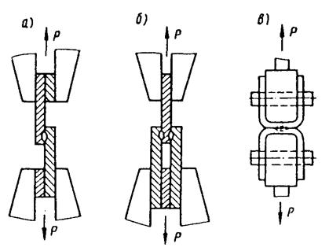
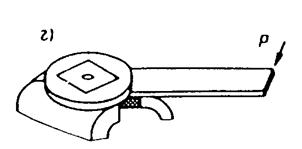
Рис. 13. Схема закрепления образцов при испытании на срез (а, б), отрыв (в) и скручивание (г).
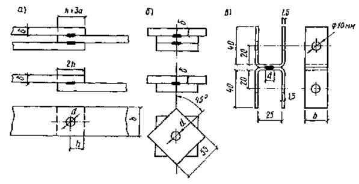
Рис. 14. Конструкция образцов для испытания на срез (а), скручивание (б) и отрыв (в)
а =l/2 (где l - шаг между точками), b = 2,5d + 10 (для толщины до 1,5 мм)
6.9. Повторная проверка постоянства прочности по образцам производится через каждые 100 изготовленных металлоконструкций (готовое изделие или отдельная отправочная марка).
|
Номера образцов |
Прочность точки sВ, кг/мм2 |
Частота n |
n sВ |
sВ - 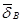 |
(sВ - 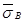 )2n |
|
1 |
|||||
|
2 |
|||||
|
3... |
|||||
|
S |
где =Sn sВ/n -
средняя постоянная прочность точки; 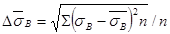
Метод контроля качества точечных соединений силовым воздействием
6.10 Метод основан на механическом испытании в специальном стенде каждой изготовленной конструкции или отправочной марки на усилия в узлах, не превышающие 1,1 Ррасч.
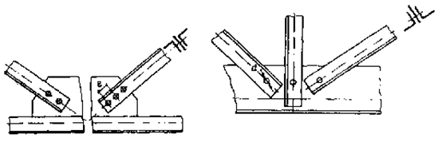
Рис. 15. Разновидности точечных сварных соединений в решетчатых металлоконструкциях
6.11. Испытательный стенд должен представлять собой усиленную металлическую конструкцию, оснащенную гидравлической системой и прессами давления, устанавливаемыми в соответствии с планом испытания на отдельных узлах с учетом условий работы металлоконструкций. Примерная схема размещения прессов давления приведена на рис. 16.
Техническая характеристика
Мощность, потребляемая системой, N, кВт................................................ 6
Расход масла. Q, л/мин.................................................................................. 100
Время выдерживания рамы под нагрузкой, мин........................................ 3
Критерий оценки прочности точек................................. отсутствие смещения стоек относительно мест закрепления
6.12. Время испытания должно составлять не более 3 мин. Целостность точечных соединений проверяется по отсутствию остаточных деформаций. Нормативы допустимой деформативности по каждому изделию устанавливаются опытным путем заводом-изготовителем.
6.13. Перед испытанием производится внешний осмотр конструкции на отсутствие пропусков в сварке точечных соединений, на сохранение заданной геометрической формы ее узлов и элементов. Обнаруженные дефекты устраняются.
6.14. Исправление точечных соединений может производиться способами:
повторной сварки на режимах выполнения двух точек;
высверловки дефектной точки с последующей заменой электрозаклепкой. Выбор способа исправления дефектных точек, нарушений в геометрической форме узлов и элементов устанавливается контролером-приемщиком.
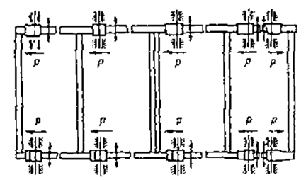
Рис. 16. Схема размещения прессов давления при загрузке рамы для испытания прочности сварных точек (вариант со стационарным расположением гидроцилиндров)
Контроль качества точечных соединений методом рентгеноконтрастных материалов (РКМ)
6.15. Метод основан на внесении в зону сварки металлического порошка из тугоплавких материалов - тантала, ванадия, молибдена. При сварке низкоуглеродистой и низколегированной стали порошки из таких материалов практически не взаимодействуют с жидким металлом и сепарируют к периферии ядра точки. Это позволяет по радиографическому снимку точечного соединения устанавливать диаметр литого ядра, а по внутренней и наружной кромкам ободка определять зону термического влияния (слипание). Кроме того, радиографический снимок показывает размеры внутренних дефектов в литом ядре точки.
6.16. Контроль качества точечного соединения с использованием РКМ производится в следующем порядке:
на поверхность соединения элементов, подлежащих сварке, наносится тонким слоем 50-100 мкм грунт (5-8 г/см2) или укладывается специальная фольга, толщиной 0,1-0,2 мм. Сборка элементов в узлах производится на прихватах;
после сварки узлов металлоконструкций или отправочной марки последние устанавливаются на участке контроля в горизонтальном положении для просвечивания всех точечных соединений.
6.17. Грунт состоит из смеси вольфрам-порошка (В1) с лаком Э4100 или смеси порошка карбида вольфрама с эмалью ЭТО-63; фольга изготовляется на основе припоя ВПР-3.
6.18. Для просвечивания узлов используются кассеты длиной, соответствующей длине сварного соединения (табл. 24 и рис. 17).
6.19. Для контроля используются рентгеновские аппараты РАП-160-6П с рентгеновской трубкой типа I, 5БПМ-200 или РАП-220-5П с трубкой 2,5 БПМ-250. Допускается применение аппаратов импульсных МИРА-1Д и МИРА-ЗД и иностранных фирм с аналогичными характеристиками по энергии излучения и анодному току.
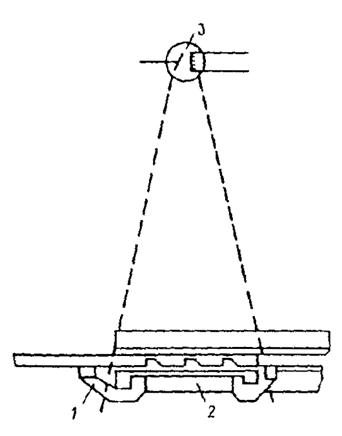
Рис. 17. Схема просвечивания сварного точечного соединения
1 - держатели магнитные; 2 - кассеты; 3 - рентгеновская трубка
6.20. Для получения снимков рекомендуется использовать радиографическую пленку РТ-1, РТ-4 в комплекте с двумя металлическими экранами или пленку РТ-2, РМ-1, РМ-2 и РМ-3 в комплекте с двумя металлическими и двумя флуоресцирующими экранами по табл. 2 прил. 1, ГОСТ 7512-82.
6.21. Размеры кассет и экранов при просвечивании точечных соединений в узлах определяются по табл. 24.
6.22. Экспозиция при просвечивании стали определяется по номограммам рис. 8.
6.23. Подготовка к просвечиванию, его проведение и определение результатов контроля производится по ГОСТ 7512-82.
6.24. Браковочные признаки для точечного соединения устанавливаются техническими условиями на изготовление изделия.
|
Количество точек в соединении |
Размеры гибкой кассеты и экранов, мм |
Изготовитель |
|
1 |
60´100 |
Своими силами |
|
2 |
60´180 |
Тоже |
|
3 |
60´240 |
В/О "Изотоп" |
|
4 |
60´360 |
То же |
Контроль качества точечных соединений ультразвуковым методом
6.25. Метод основан на прозвучивании цилиндрическим пучком ультразвуковых волн сформированного к концу сварочного цикла литого ядра точки.
6.26. Для ультразвукового контроля используются импульсные дефектоскопы ДУК-66.
6.27. Установка преобразователей и схематическое изображение акустического поля дискового пьезоэлемента представлены на рис. 18.
6.28. Диаметр пьезоэлемента определяется в зависимости от размеров предельно допустимых и недопустимых дефектов, назначаемых из условий работы металлоконструкций и требований, предъявляемых к качеству литого ядра точки.
Наличие дефектов и их размеры определяются по интенсивности прошедшей ультразвуковой волны.
6.29. Для проведения контроля качества точечных соединений по каждому виду металлоконструкций (имеется в виду тип, наименование, число элементов, сходящихся в узлах, их суммарная толщина) и настройки чувствительности ультразвукового дефектоскопа необходимо изготовить тест-образцы и преобразователи.
6.30. Тест-образец состоит из пластин с отверстиями (отражателями), толщина которых равна толщине точечного соединения и выполняется из материала, соответствующего материалу конструкции (рис. 19). Грани тест-образца и отражатели после обработки должны соответствовать классу чистоты Rа 6,3.
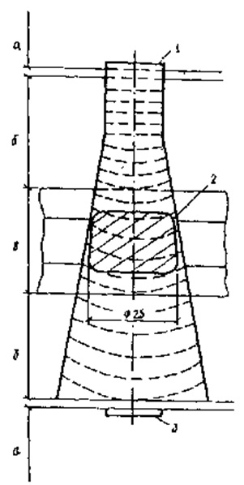
Рис. 18. Схематическое изображение поля дискового преобразователя ультразвуковых волн
1, 3 - дисковые пьезоэлементы; 2 - литое ядро точки; а - иммерсионный слой (вода); б - электрод (медь); в - сварной пакет (Ст.3)
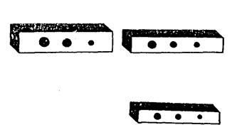
Рис. 19. Тест-образцы с отражателями
6.31. В зависимости от условий работы и требований, предъявляемых к конструкции, размер предельно допустимого дефекта (имеется в виду диаметр сферы, ограничивающий суммарный дефект в плоскости среза точки), отнесенный к диаметру точки, может колебаться в следующих пределах :
dД=(0,1 ...0,5) dЯ, (14)
где dД - диаметр предельно допустимого дефекта в точке; dЯ - диаметр литого ядра точки.
6.32. Для получения информации в виде амплитуд сигналов на электроннолучевой трубке дефектоскопа и настройки его чувствительности на заданные предельно допустимые и недопустимые дефекты, диаметры отверстий в тест-образце определяются из следующих равенств:
dИД1=0,5dД; dИД2=dД; dИД3=1,5dД, (15)
где dИД1, dИД2 и dИД3 - диаметры отверстий тест-образца, соответствующие соответственно минимальному предельно допустимому дефекту и недопустимому дефекту.
6.33. Диаметры дисковых пьезоэлементов (излучающего и приемного) dИЗЛ=dПР и =dИД2 принимаются из предположения, что при прозвучивании тест-образца через отверстие: с dИД3, соответствующего недопустимому дефекту, будет образовываться полная звуковая тень и отсутствовать дифракция ультразвуковых волн; с dИД3, соответствующего предельно допустимому дефекту будет определенное фиксируемое уменьшение звуковой тени; с dИД1, соответствующего минимальному дефекту, звуковая тень будет минимальной и величина амплитуды сигнала будет приближаться к величине сигнала от бездефектного участка тест-образца.
6.34. Посыпка пучка ультразвуковых волн производится в промежутке времени между концом ковки и концом цикла, когда температура литого ядра точки по всему объему оказывается ниже 600°С. Этот промежуток времени устанавливается экспериментально.
6.35. Оценка дефектности производится сравнением высоты сигнала ультразвуковых волн на ЭЛТ-дефектоскопа Р', взятого при прозвучивании точки в процессе сварки, с высотой сигналов, полученных при прозвучивании тест-образца по всей толщине через сплошные сечения РОЭ и по каждому отражателю в отдельности Р1Э, Р2Э, Р3Э.
По условиям оценки дефектности
Р1³ Р'= Р2Э> Р3Э. (16)
При использовании сигнализатора дефектов для автоматизации разбраковки точек критерием оценки дефектности может служить неравенство:
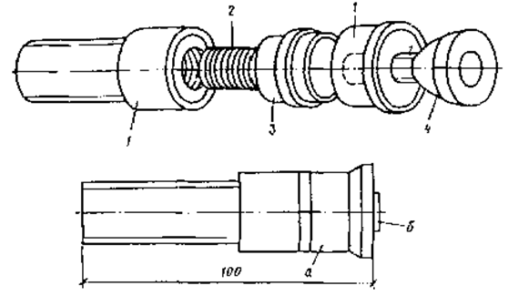
Рис. 20. Преобразователь поэлементно и в сборе
а - головка; б - дисковой пьезоэлемент; 1 - сталь; 2 - бронза; 3 - текстолит; 4 - демпфер-текстолит
Р'/РOЭ³РЭ> РOЭ, (17)
где РЭ= Р2Э.
В противном случае точки бракуются.
6.36. Преобразователь в сборе (рис. 20) состоит из головки и дискового пьезоэлемента из цирконата титаната свинца марки ЦТС-19 по ГОСТ 13927-80* толщиной b = 1,5 мм.
6.37. Определение размеров литого ядра и характера дефектов при выбранных режимах производится после предварительно выполненной сварки пяти образцов по первой и второй точкам и изготовления из них макрошлифов. В случае несоответствия одной из полученных точек заданным размерам и степени допустимой дефектности режимы сварки корректируются.
6.38. Исправление дефектных точек, выявленных в процессе ультразвукового контроля, производится после выполнения сварки всей конструкции (см. п. 6.14).
Принцип метода и область применения
7.1. Магнитографический метод контроля качества сварных соединений основан на обнаружении полей рассеяния, возникающих над металлом в местах расположения дефектов при намагничивании контролируемых изделий.
В отличие от других магнитных методов дефектоскопии при магнитографическом контроле поля рассеяния дефектов фиксируются на эластичном магнитоносителе (магнитной ленте), плотно прижатом к поверхности шва. Полученная на ленте магнитограмма сварного шва с отпечатками полей дефектов воспроизводится с помощью специального считывающего устройства - дефектоскопа.
Таким образом, магнитографический контроль состоит из двух последовательно выполняемых операций:
намагничивания сварных швов специальными электромагнитами, при котором поля дефектов записываются на магнитную ленту;
воспроизведения (считывания) магнитной записи с расшифровкой сигналов от дефектов.
7.2. Требования к качеству стыковых сварных соединений и рациональному объему применения магнитографического метода контроля в каждом конкретном случае, в зависимости от территориально-климатических условий изготовления металлоконструкций, строительства и категорийности участков монтажа трубопроводов, определяются соответствующей нормативно-технической документацией, утвержденной в установленном порядке.
7.3. Магнитографический метод контроля служит для выявления в стыковых сварных швах строительных металлоконструкций, трубопроводов из ферромагнитных сталей наружных и внутренних трещин, непроваров и несплавлений по кромкам величиной свыше 5% контролируемой толщины, а также цепочек шлаковых включений и пор величиной 10% и более, ориентированных преимущественно вдоль шва при расстоянии между соседними дефектами менее трехкратного размера шлакового включения или поры.
7.4. При контроле стыковых швов, выполненных односторонней сваркой с V-образной разделкой кромок, данный метод не гарантирует выявление корневых непроваров и трещин величиной (вертикальным размером) менее 5 % толщины стенки соединения, а также одиночных шлаковых включений и газовых пор в корне шва, имеющих относительную величину менее 15 % при расстоянии между отдельными шлаковыми включениями или порами шва более двух толщин стенки.
7.5. Магнитографическому контролю могут подвергаться стыковые сварные соединения с одинаковой толщиной стенки, а также разностенные сварные соединения, отличающиеся по толщине стенок друг от друга не более чем на 20%, но не свыше 3 мм.
7.6. Магнитографическому контролю следует подвергать стыковые сварные швы, принятые после внешнего осмотра и имеющие:
плавный переход от наплавленного металла к основному;
высоту валика усиления шва не более 25% толщины стенки соединения, но не свыше 3 мм;
коэффициент формы усиления шва (отношение ширины валика усиления к его высоте) не менее 7;
коэффициент формы сварного шва (отношение ширины валика усиления шва к толщине стенки) не менее 2,5 для толщин стенок до 8 мм, не менее значений в пределах 2,5-2 для толщин от 9 до 16 мм и не менее 1,8 для толщин стенок свыше 16 мм;
высоту неровностей (чешуйчатости) на поверхности шва не более 25 % высоты валика усиления, но не свыше 1 мм.
7.7. Магнитографическому контролю могут подвергаться также сварные стыки, имеющие ширину валика усиления шва меньшую, чем это обусловлено указанными в п. 7.6 коэффициентами формы сварного шва, в случаях, когда высота валика усиления меньше 3 мм и при этом обеспечивается коэффициент формы усиления шва не менее 10.
Условия применения магнитографического контроля с учетом геометрических размеров сварного шва определяются по номограмме, приведенной в прил. 25.
Средства контроля
7.8. Для проведения магнитографического контроля сварных стыковых соединений должны применяться следующие средства:
магнитная лента;
намагничивающее устройство;
магнитографический дефектоскоп (прибор для воспроизведения магнитограмм);
источник постоянного тока для питания электромагнита намагничивающего устройства;
вспомогательные устройства для прижатия магнитной ленты к поверхности контролируемого сварного шва;
испытательный образец (образец предприятия) для изготовления контрольной магнитограммы;
контрольная магнитограмма для настройки чувствительности дефектоскопа;
приборы и принадлежности для проверки исправности дефектоскопов и намагничивающих устройств.
Магнитная лента
7.9. Для магнитографического контроля сварных стыковых соединений из обычных магнитомягких сталей перлитного, бейнитного и мартенситоферритного классов с коэрцитивной силой до 10 А/см следует применять магнитную ленту И4701 (ТУ 6-17-632-74) с коэрцитивной силой 90-100 А/см, выпускаемую Шосткинским П/О "Свема" шириной 35, 50,8 и 70 мм в соответствии с ТУ 6-17-632-74.
7.10. Ширина применяемой для магнитографического контроля магнитной ленты должна быть больше ширины валика усиления контролируемых сварных швов не менее чем на 10 мм.
7.11. Применяемая магнитная лента не должна иметь надрывов, проколов, местных отслаиваний магнитного слоя, неразглаживающихся морщин и других механических повреждений.
Намагничивающие устройства
7.12. Для магнитографического контроля сварных соединений могут применяться намагничивающие устройства, состоящие из П-образного электромагнита и условно подразделяемые на две группы:
подвижные устройства, позволяющие намагничивать стыковые соединения в процессе непрерывного или шагового перемещения по периметру трубы вдоль сварного шва;
неподвижные устройства, позволяющие намагничивать одновременно весь периметр стыкового шва или его значительную часть с одной установки.
7.13. В каждом конкретном случае при магнитографическом контроле должен использоваться такой типоразмер намагничивающего устройства, область применения которого в соответствии с технической документацией (паспортом и инструкцией по эксплуатации) распространяется на контроль стыковых швов плоскостных и криволинейных (радиусных) поверхностей сварных соединений металлоконструкций.
Устройства для воспроизведения магнитограмм (магнитографические дефектоскопы)
7.14. Для магнитографического контроля могут применяться дефектоскопы МДУ-2У, МД-11Г и УВ-30Г с индикацией сигналов воспроизведения магнитограмм сварных стыков на экране электронно-лучевой трубки (ЭЛТ), а также дефектоскопы МД-20Г и МД-40Г, с многоканальной регистрацией результатов воспроизведения на электрохимической бумажной ленте.
7.15. В дефектоскопе должно обеспечиваться одновременное синхронизированное воспроизведение на экране ЭЛТ или на носителе записи регистратора полутонового изображения магнитных отпечатков полей дефектов в плане в виде яркостной индикации, а также амплитуды и формы сигналов от них в виде импульсной индикации или диаграммы максимальных значений сигналов от дефектов вдоль сварного шва.
7.16. Экран ЭЛТ дефектоскопа, предназначенный для яркостной (видео-) индикации, имеет длительное послесвечение (не менее 15с), позволяющее анализировать изображение магнитограммы участка сварного шва, полученное после одноразового заполнения (развертки) кадра.
7.17. Экран ЭЛТ для импульсной индикации, а также соответствующий канал регистратора для записи максимальных значений сигналов от дефектов должны быть снабжены шкалой, цена делений которой устанавливается в относительных единицах (%) при настройке чувствительности дефектоскопа по контрольной магнитограмме.
7.18. В дефектоскопах с разверткой диаграммы максимальных или других значений сигналов, характеризующих изменение величины (глубины) дефектов вдоль сварного шва, должна быть предусмотрена возможность мерной регулировки ширины зоны поперечного воспроизведения магнитограммы на экране ЭЛТ или на носителе записи регистратора для устранения сигналов от краев валика усиления шва.
Источники питания для намагничивающих устройств
7.19. Электропитание намагничивающих устройств в трассовых условиях осуществляется от автономных источников постоянного тока. Для этой цели используются переносные станции питания СПП-1 или СПА-1, серийно выпускаемые Киевским экспериментально-механическим заводом (КЭМЗ).
Эти станции состоят из генератора постоянного тока ГСК-1500Ж и бензодвигателя от мотопилы "Дружба", соединенных между собой центробежной фрикционной муфтой и смонтированных на амортизированной раме облегченной тележки. Конструкция тележки позволяет перемещать станцию питания по трубам диаметром более 400 мм, а также по твердому грунту.
Станции питания СПП-1 и СПА-1 имеют приборный щиток, на котором установлены амперметр на 50 А, вольтметр на 50. В и выходные клеммы.
Силу намагничивающего тока при магнитографическом контроле сварных стыков - различных трубопроводов можно устанавливать с помощью плавного регулятора подачи газа - частоты вращения бензодвигателя.
7.20. При использовании в трассовых условиях передвижной автолаборатории энергопитание намагничивающих устройств всех типоразмеров осуществляют от генератора постоянного тока, смонтированного в кузове лаборатории с приводом от вала отбора мощности автомобиля.
Для питания, например, кольцевого намагничивающего устройства постоянным током силой до 450 А в передвижной магнитографической лаборатории ЛПМ-К предусмотрен генератор С1М-500УА мощностью 30 кВт с приводом от вала отбора мощности трактора ТДТ-55А.
7.21. В отдельных случаях, например, при магнитографическом контроле сварных стыков на трубосварочных базах для электропитания намагничивающих устройств можно использовать генераторы постоянного тока передвижения сварочных агрегатов АСБ-300, АСДП-500 и др.
7.22. Во всех случаях источник постоянного тока должен обеспечивать получение необходимых режимов намагничивания для магнитографического контроля стыковых сварных соединений металлоконструкций и трубопроводов.
7.23. Для установки требуемого режима намагничивания в источнике питания должна быть предусмотрена возможность плавного или ступенчатого регулирования выходного напряжения при помощи встроенного или выносного регулирующего устройства, снабженного амперметром на заданный предел измерения.
Интервал регулирования между ступенями не должен превышать 5 В.
Вспомогательные устройства
7.24. При магнитографическом контроле необходимо применять прижимное устройство, например эластичный (резиновый) пояс, обеспечивающий плотное прилегание магнитной ленты к поверхности контролируемого сварного шва и неподвижную фиксацию этой ленты на кольцевом шве во время его намагничивания по всему периметру.
Длина прижимного пояса должна быть рассчитана на определенный диаметр трубы так, чтобы он охватывал периметр сварного стыки внатяг. К концам прижимного пояса должны быть прикреплены соединительные элементы (замки) из немагнитного материала.
7.25. Размагничивающее устройство представляет собой стирающий дроссель с разомкнутым сердечником, набранным из Ш-образных пластин трансформаторной стали, и катушкой с определенным числом витков эмалированного провода или полый цилиндрический соленоид с витым ленточным магнитопроводом поверх катушки. Тот и другой - размагничивающие устройства питаются переменным током частотой 50 Гц. Для этого в магнитографических дефектоскопах предусмотрены специальные гнезда для подключения к ним штыревых выводов катушки стирающего устройства при размагничивании магнитной ленты. В первом случае размагничиваемая магнитная лента вручную протягивается над разомкнутой частью сердечника стирающего дросселя; во втором случае - через цилиндрическое отверстие соленоида. В обоих случаях скорость протягивания размагничиваемой магнитной ленты не должна превышать 100-150 мм/с.
7.26. При магнитографическом контроле необходимо иметь инструменты (молоток, зубило, драчевый напильник) или шлиф-машинку для очистки поверхности шва и околошовной зоны от затвердевших брызг шлака, расплавленного металла и устранения грубых неровностей.
Испытательные образцы
7.27. Испытательные образцы стыковых сварных швов должны быть изготовлены для каждого типоразмера металлоконструкций и труб, толщины стенки и марки стали и сварены тем же методом и по той же технологии (сварочные материалы, режим сварки), что и подлежащие контролю магнитографическим методом стыковые швы.
Если на объекте строительства трубопровода применяются трубы различной поставки, но из сталей с одинаковыми или близкими структурами, химическими составами и магнитными свойствами, то допускается изготовление одного общего испытательного образца из этих сталей с одинаковой толщиной стенки.
7.28. В качестве испытательного образца может служить обечайка или ее часть длиной не менее 1/3 окружности, сваренная из двух колец трубы того же диаметра и той же толщины стенки, что и контролируемый трубопровод. Ширину свариваемых колец трубы следует выбирать не менее чем по 0,5-0,6 м.
7.29. Сварка стыкового шва испытательного образца должна производиться таким образом, чтобы поверхность шва удовлетворяла требованиям п. 7.6 настоящего Пособия, в некоторых участках сварного стыка имелись внутренние дефекты (непровар или цепочка шлаковых включений преимущественно в корне шва) протяженностью не менее 40-50 мм и величиной, соответствующей минимальному браковочному уровню, например 10 % толщины стенки трубы.
Допускается использование сварных испытательных образцов по п. 7.28 с искусственными дефектами в виде канавок шириной 2-2,5 мм и длиной не менее 50 мм, профрезерованных по середине стыкового шва со стороны его корня. При наличии подварки корня шва внутренний валик усиления в местах фрезеровки должен быть предварительно удален.
Глубина искусственных дефектов выбирается равной минимальному браковочному уровню для заданной толщины стенки соединения в соответствии с требованиями нормативных документов.
7.30. После сварки стыковые швы испытательных образцов должны быть подвергнуты радиографическому контролю. По полученным снимкам определяют вид, величину и место расположения дефектов в испытательных образцах.
7.31. На поверхности испытательного образца должны быть отмечены краской месторасположение и границы дефектных участков с указанием вида и величины контрольных дефектов. Кроме того, должны быть отмечены границы радиографических снимков с указанием их индексов.
7.32. Для настройки чувствительности дефектоскопа МД-40Г с многоканальной селективной регистрацией результатов воспроизведения должны быть изготовлены три испытательных образца, представляющие собой отрезки сварного стыка (карты) шириной не менее 500 мм и длиной (вдоль шва) 200-250 мм.
В каждом образце один из длинных торцов с поперечным сечением сварного стыка обрабатывают чистотой 4-5 класса на металлорежущем станке под прямым углом без острых кромок и заусенцев по ним. По середине сварных швов образцов со стороны обработанных торцов делают по одному сверлению глубиной 40-50 мм:
в одном из образцов - в верхней части толщины шва, ближе к его поверхности, но без выхода сверла наружу;
во втором образце - в средней части шва;
в третьем образце - в нижней части толщины шва, ближе к его корню.
Во всех трех образцах диаметр сверления выбирают равным минимальному недопустимому размеру дефекта. Толщина этих образцов должна соответствовать толщине стенки контролируемого соединения.
7.33. Каждый испытательный образец должен быть проверен и принят комиссией, составленной из руководящего и инженерно-технического персонала строительно-монтажной организации и подразделения контроля качества.
7.34. Испытательные образцы, радиографические снимки и контрольные магнитограммы с них должны храниться на участке контроля вместе с актом приемки испытательного образца комиссией.
Контрольные магнитограммы
7.35. Контрольные магнитограммы записываются на стыковых швах испытательных образцов путем намагничивания последних теми же устройствами и при тех же режимах, которые применяются для контроля сварных соединений на данном объекте строительства.
7.36. Для изготовления контрольной магнитограммы используется магнитная лента того же типа, что и при контроле стыковых соединений.
7.37. При каждой, смене партии магнитной ленты, используемой для контроля стыковых швов, должна быть изготовлена новая контрольная магнитограмма из новой партии ленты.
Номер партии магнитной ленты указывается заводом-изготовителем на этикетке, наклеенной на упаковочной коробке, в которой лента поставляется потребителю.
7.38. При изготовлении контрольных магнитограмм должны соблюдаться требования п.п. 7.52, 7.53, 7.56, 7.59 по наложению магнитной ленты на сварной шов, прижиму ленты к его поверхности и режимам намагничивания.
7.39. На контрольной магнитограмме должны быть отмечены карандашом границы дефектных участков с указанием вида и величины дефектов, толщина основного металла испытательного образца, режим намагничивания, дата изготовления контрольной магнитограммы и номер партии магнитной ленты.
7.40. Контрольные магнитограммы должны храниться у дефектоскописта в закрытой жестяной коробке (или банке) для защиты их от воздействия случайных магнитных полей.
7.41. Контрольной магнитограммой нельзя пользоваться до полного ее износа, а следует заменять ее новой по мере появления на ней механических повреждений (отслоение или истирание магнитного слоя, проколы, надрывы и др.).
7.42. При совместном использовании с одним дефектоскопом нескольких намагничивающих устройств с помощью каждого из них записывают контрольную магнитограмму, по каждой из которых проводят настройку чувствительности магнитографического дефектоскопа.
7.43. При настройке чувствительности дефектоскопа по шкале, имеющейся на экране импульсной индикации или на дефектограмме регистратора, устанавливают и фиксируют определенную амплитуду сигнала от контрольного дефекта, являющуюся браковочным уровнем.
Яркостную индикацию дефектоскопа при этом следует отрегулировать так, чтобы в процессе воспроизведения контрольной магнитограммы полутоновое изображение магнитного отпечатка поля контрольного дефекта и краев сварного шва на соответствующем экране ЭЛТ или на соответствующей дорожке регистрограммы имели наиболее четкие очертания.
7.44. Настройку чувствительности дефектоскопа с многоканальной селективной регистрацией МД-40Г осуществляют путем поочередного воспроизведения контрольных магнитограмм с трех испытательных образцов (см. п. 7.32), имеющих контрольные дефекты одинаковой величины, но расположенные на различной глубине: в верхней, средней и нижней частях толщины сварного соединения. При этом в каждом селективном канале регистратора устанавливают одинаковые уровни диаграмм максимальных значений сигналов (дефектограмм) независимо от глубины залегания контрольных дефектов. Эти уровни являются браковочными для дефектов большей величины вне зависимости от глубины их залегания в контролируемом сварном стыке.
7.45. Настройку чувствительности дефектоскопа (или ее проверку) следует проводить перед каждым началом работы с ним.
Подготовка к контролю
7.46. Перед проведением магнитографического контроля сварное соединение должно быть проверено внешним осмотром на отсутствие недопустимых наружных дефектов и соответствие шва по внешнему виду требованиям нормативно-технической документации.
7.47. До проведения контроля с поверхности стыкового шва, особенно выполненного ручной электродуговой сваркой, и околошовных зон шириной не менее 20 мм с каждой стороны валика усиления должны быть устранены грубые неровности (подрезы, чрезмерная чешуйчатость, затвердевшие брызги расплавленного металла и шлака, а также наплывы и т. п.), высота которых превышает нормы, указанные в п. 7.6 настоящего Пособия. Кроме того, с поверхности контролируемых сварных швов и околошовных зон должны быть удалены грязь, снег, лед и прочие посторонние наслоения, мешающие плотному прилеганию магнитной ленты и ухудшающие условия магнитной записи на ней полей дефектов.
7.48. Перед магнитографическим контролем сварных соединений трубопровода, лежащего на земле, под каждым стыковым швом следует предварительно вырыть приямок или подложить опору (лежку), обеспечивающую свободный доступ к нижней части кольцевого сварного стыка для его внешнего осмотра и подготовки к контролю в соответствии с п.п. 7.46 и 7.47, а также для наложения магнитной ленты на поверхность стыкового шва по всему периметру и его намагничивания.
7.49. В зависимости от толщины стенки соединения, а в случае трубы и ее диаметра, выбирают соответствующий типоразмер намагничивающего устройства и подключают его к источнику питания.
7.50. Перед проведением магнитографического контроля магнитная лента независимо от того, была она уже в употреблении или нет, должна быть подвергнута размагничиванию с помощью стирающего устройства (см. п. 7.25), входящего в комплект дефектоскопа.
7.51. При транспортировке и хранении размагниченной ленты необходимо соблюдать меры, предохраняющие ее от случайного намагничивания посторонними полями. Не следует класть размагниченную ленту на стальные предметы и трубы, которые могут иметь большую остаточную намагниченность. Нельзя также подносить магнитную ленту близко (ближе 1 м) к работающим сварочным генераторам, электромоторам, кабелям с током и прочим источникам магнитного поля.
Проведение контроля. Намагничивание и запись магнитограммы сварного стыка
7.52. При проведении магнитографического контроля на поверхность подготовленного к контролю сварного шва накладывают внатяг магнитную ленту так, чтобы она магнитным слоем плотно прилегала к шву, огибая и полностью закрывая по ширине валик усиления, и была расположена симметрично середине стыкового шва по всему его периметру. Допускаются местные смещения магнитной ленты в ту или другую стороны от середины шва не более чем на 2-3 мм.
Допускается повторное использование бывших в употреблении отрезков магнитной ленты после размагничивания (стирания старой записи), если на них отсутствуют надрывы, проколы, отслоения, неразглаживающиеся морщины и т. п.
7.53. Длина отрезка магнитной ленты, накладываемой на контролируемый шов, должна быть не менее чем на 120 мм больше длины сварного стыка.
На одном из свободных концов (длиной 60-70 мм) этой ленты со стороны ее магнитного слоя предварительно записывают простым карандашом следующие данные:
наименование предприятия или строительно-монтажного объекта (допускается в сокращенном виде);
номер стыкового шва и клеймо сварщика;
диаметр трубопровода и толщина его стенки;
тип используемого намагничивающего устройства (сокращенно) и режим намагничивания (т. е. сила тока);
дату контроля и фамилию дефектоскописта.
Этот конец магнитной ленты совмещают с условным началом стыкового шва. За условное начало стыкового сварного шва в соответствии с ГОСТ 25225-82 принимают обозначенное место стыка, от которого начинается наложение на шов магнитной ленты в определенном направлении. В качестве условного начала стыкового шва могут служить продольный сварной шов трубы, клеймо сварщика или любая обозначенная метка на контролируемом стыке вблизи от его зенита.
7.54. После наложения на сварной шов магнитная лента должна быть плотно прижата к нему и зафиксирована эластичным поясом или другим мягким прижимным устройством.
7.55. Намагничивание контролируемых сварных соединений производят постоянным током, протекающим по обмотке электромагнита и обеспечивающим равномерное намагничивание всей толщины стыкового шва.
Намагничивание можно производить апериодическим импульсом тока длительностью не менее 100 мс (или 0,1 с), исключающей возможность возникновения в контролируемом сварном соединении вихревых токов.
7.56. Сила постоянного или апериодического импульса тока в намагничивающем устройстве должна обеспечивать создание в контролируемом сварном соединении магнитной индукции технического насыщения (т.е. намагниченности насыщения), необходимой для надежного выявления как подповерхностных, так и глубинных (корневых) дефектов.
7.57. При использовании подвижных намагничивающих устройств (ПНУ) концы кабеля питания подключают к выходным клеммам регулирующего устройства источника питания включают тумблер и с помощью регулятора устанавливают необходимую для данной толщины стенки соединения силу тока намагничивания. Затем устройство ПНУ устанавливают на поверхность сварного соединения симметрично середине стыка и прокатывают его вдоль кольцевого шва по всему его периметру.
7.58. При использовании намагничивающего устройства с шаговым перемещением, например "Шагун-М1", его устанавливают на верхнюю поверхность сварного соединения симметрично середине шва; замыкают цепной пояс и натягивают его с помощью натяжного механизма. Нажатием кнопки "стоп" на ручном пульте управления включают намагничивающий ток, и регулятором подачи газа станции питания СПП-1 (к выходным клеммам которой согласованно подключены концы шланга питания устройства "Шатун") устанавливают по амперметру необходимый режим (ток) намагничивания. После этого кнопку "Стоп" отпускают, и электромагнит устройства "Шатун" автоматически приподнимается в исходное положение (на высоту 5-6 мм над трубой). Затем включают тумблер сбоку ручного пульта управления в положение "Рабочее" и нажатием кнопки "Пуск" включают электродвигатель механического привода, концы шланга питания которого предварительно подключены к выходным клеммам регулирующего устройства источника питания.
Нажимая кнопку "Пуск", шаг за шагом намагничивают весь периметр сварного стыка. После этого, придерживая устройство "Шатун", ослабляют цепной пояс, разъединяют его концы и осторожно снимают с трубы.
7.59. С использованием передвижной магнитографической лаборатории ЛПМ-К контроль сварных стыков трубопроводов осуществляют в следующем порядке.
Лаборатория, перемещаясь вдоль трубопровода, останавливается параллельно трубе на расстоянии 1-1,5 м от нее так, чтобы кольцевое намагничивающее устройство находилось против контролируемого сварного стыка, на поверхность которого предварительно наложена и закреплена магнитная лента согласно п. 7.52.
Кольцевое намагничивающее устройство при помощи стрелы с системой гидроприводов приподнимают и переводят из транспортного положения в рабочее; полностью раскрывают его "челюсти" и, манипулируя стрелой, ориентируют их симметрично трубе. Затем, медленно перемещая лабораторию вперед или назад, ориентируют полюса электромагнитов намагничивающего устройства симметрично сварному стыку.
Если перемещением лаборатории этого добиться не удается, то корректировку положения полюсов намагничивающего устройства относительно сварного шва оператор может осуществлять вручную с помощью механизма точной установки, расположенного на конце стрелы гидроманипулятора. Для этого оператор поднимается по инвентарной лестнице на трубу и вращением штурвала указанного механизма в ту или другую сторону добивается необходимого положения намагничивающего устройства согласно п. 7.64 (см. ниже). Затем намагничивающее устройство с помощью гидропривода опускают на трубу, закрывают его "челюсти" и включают ток необходимой величины. По истечении 1-2 выключают ток, гидроманипулятором раскрывают "челюсти", приподнимают намагничивающее устройство над трубой и убирают его в транспортное положение в закрытом состоянии.
7.60. Рекомендуемые режимы намагничивания для контроля стыковых сварных соединений трубопроводов разного диаметра и толщины стенки с использованием различных типоразмеров намагничивающих устройств приведены в табл. 25, а технические данные применяемых намагничивающих устройств приведены в табл. 26.
|
Намагничивающее устройство |
Сила тока, А, при толщине стенки контролируемого трубопровода, мм |
Диаметр трубопровода, мм |
||||||||||
|
2 |
4 |
6 |
8 |
10 |
12 |
14 |
16 |
18 |
20 |
22 |
||
|
ЦПУ |
6 |
12 |
18 |
24 |
28 |
- |
- |
- |
- |
- |
- |
57-168 |
|
ПНУМ-2 |
8 |
15 |
21 |
28 |
32 |
36 |
- |
- |
- |
- |
- |
168-377 |
|
ПНУМ-1 |
6 |
12 |
15. |
20 |
24 |
28 |
32 |
- |
- |
- |
- |
377-1020 |
|
УНУ |
6 |
12 |
15 |
20 |
24 |
28 |
32 |
- |
- |
- |
- |
168-1020 |
|
Шагун-М |
- |
- |
14 |
18 |
24 |
28 |
32 |
36 |
40 |
44 |
- |
720-1420 |
|
ЛПМ-К (кольцевое) |
- |
- |
- |
- |
180 |
215 |
250 |
290 |
325 |
360 |
400 |
1220 |
|
Тоже |
- |
- |
- |
- |
210 |
250 |
295 |
335 |
380 |
420 |
460 |
1420 |
Примечание. Приведенные в таблице режимы намагничивания справедливы для контроля сварных соединений труб из малоуглеродистых и низколегированных сталей, применяемых при строительстве газонефтепроводов.
|
Намагничивающее устройство |
Магнитопровод |
Катушка |
Масса, кг |
|||
|
толщина полюсов, см |
сечение сердечник см |
число витков |
диаметр провода, мм |
сопротивление Ом |
||
|
НВУ |
2 |
2´15 |
2´500 |
1,4 |
2,2 |
7-8 |
|
ПНУМ-2 |
2 |
30 |
500 |
1,88 |
1,5 |
11 |
|
ПНУМ-1 и УНУ |
2,5 |
36,5 |
600 |
2,02 |
2 |
15 |
|
Шагун-М1 |
3 |
60 |
400 |
2,44 |
0,7 |
32-35 |
|
ЛПМ-К (кольцевое) для труб диаметром, мм: |
||||||
|
1220 |
5 |
24´60 |
24´450 |
2,44 |
0,13 |
- |
|
1420 |
- |
28´60 |
28´450 |
- |
0,12 |
- |
Примечания: 1. Механизированное кольцевое намагничивающее устройство лаборатории ЛПМ-К состоит из двух последовательно соединенных групп ("челюстей") по 12 (для диаметра труб 1220 мм) или по 14 (для труб диаметра 1420 мм) электромагнитов в каждой, включенных параллельно. 2. В катушке использован провод ПЭВ-1.
7.61. В процессе магнитографического контроля режим (силу тока) намагничивания сварного соединения устанавливают и контролируют по амперметру, имеющемуся в регулирующем устройстве источника питания (см. п. 7.23).
7.62. При контроле сварного соединения разностенных труб (по п. 1.5) режим намагничивания следует устанавливать по большей толщине стенки двух стыкуемых труб.
7.63. При магнитографическом контроле скорость перемещения подвижного намагничивающего устройства по периметру кольцевого стыка во избежание возникновения в сварном соединении вредных вихревых токов не должна превышать 400 мм/с.
7.64. В процессе намагничивания контролируемого сварного стыка необходимо следить за тем, чтобы полюса намагничивающего устройства были расположены симметрично середине шва.
Допускается отклонение полюсов намагничивающего устройства в ту или другую сторону от симметричного положения не более чем на 10 мм.
7.65. После намагничивания контролируемого сварного соединения магнитную ленту снимают с поверхности шва и доставляют к месту воспроизведения полученной магнитограммы с соблюдением мер предосторожности, исключающих возможность воздействия на нее посторонних магнитных полей.
При наложении на сварной шов и снятии с него после намагничивания магнитную ленту не следует продергивать со скольжением по металлу шва, так как при этом может получиться дополнительная "ложная" запись на ней за счет остаточной намагниченности выступающих неровностей на поверхности шва.
Воспроизведение магнитограмм сварных стыков и расшифровка сигналов от дефектов
7.66. Перед воспроизведением магнитной записи (магнитограммы) контролируемых сварных швов дефектоскоп должен быть настроен по контрольной магнитограмме по методике, изложенной в пп. 7.43 и 7.44.
Браковочный уровень на шкале импульсной индикации или на диаграмме регистратора должен соответствовать минимальной величине недопустимого дефекта, регламентированного нормативно-технической документацией на строительство данного трубопровода и контроль его сварных соединений.
7.67. Для воспроизведения магнитограммы сварного стыка магнитную ленту, во избежание повреждения ее магнитного слоя и нарушения имеющейся на ней магнитной записи, следует устанавливать в считывающее устройство дефектоскопа так, чтобы воспроизводящие магнитные головки (или другие магниточувствительные преобразователи) в процессе пробега поперек ленты соприкасались с ее немагнитной основой. При таком способе считывания значительно уменьшается износ рабочей поверхности воспроизводящих датчиков.
7.68. Перед началом воспроизведения магнитограммы каждого контролируемого шва магнитную ленту следует предварительно вставлять в считывающее устройство дефектоскопа то одним, то другим концом, присматривал в каждом направлении считывания по 2-3 кадра.
По результатам воспроизведения этих 2-3 кадров с каждого конца магнитограммы следует выбрать то направление продольной протяжки магнитной ленты и считывания записи с нее, при котором обеспечивается наибольшая четкость изображения магнитных отпечатков полей рассеяния сварного шва и имеющихся дефектов.
7.69. При воспроизведении магнитограммы контролируемого стыка на дефектоскопах МДУ-2У, МД-11Г или УВ-ЗОГ с подкадровой разверткой яркостной и импульсной индикацией на экране ЭЛТ последовательно просматривают кадры с изображением магнитной записи полей рассеяния смежных участков сварного шва.
7.70. Если на экране яркостной индикации отсутствует изображение магнитных отпечатков полей дефектов, то просматривают магнитограмму сварного стыка кадр за кадром без перерыва (указатель рукоятки "подача" в положении "автомат").
7.71. В случае появления в каком-либо кадре изображения магнитного отпечатка поля дефекта отключают протяжку магнитной ленты и кадровую развертку (установив указатель рукоятки "подача" в положение "кадр"); по изображению на яркостной индикации определяют характер дефекта, его местоположение по ширине сварного шва и протяженность по длине кадра, а по шкале импульсной индикации определяют суммарную амплитуду (размах) сигнала от "пика" до "пика" и оценивают относительную величину дефекта;
если амплитуда сигнала от выявленного дефекта ниже браковочного уровня, установленного на экране импульсной индикации при настройке чувствительности дефектоскопа по контрольной магнитограмме, то величину этого дефекта следует считать допустимой;
если же амплитуда импульса от дефекта превышает браковочный уровень, то его величину следует считать недопустимой.
7.72. При воспроизведении магнитограмм контролируемых сварных стыков все обнаруженные дефекты (вид дефекта, его величина и протяженность вдоль шва) должны быть отмечены простым карандашом со стороны магнитного слоя ленты.
7.73. При использовании дефектоскопа МД-20Г или МД-40Г с непрерывной регистрацией изображения магнитограммы сварного шва и диаграммы величины сигналов от дефектов на электрохимической бумажной ленте расшифровку результатов контроля производят по окончании воспроизведения всей магнитограммы шва.
7.74. Перед началом воспроизведения магнитограммы сварного стыка канал записи диаграммы амплитудных значений сигналов от дефектов настраивают с помощью регулятора ширины зоны воспроизведения так, чтобы сигналы от краев валика усиления шва не поступали на регистратор данного канала. Этот канал должен регистрировать на бумажной ленте только сигналы от выявленных дефектов.
7.75. Для недопустимого дефекта высота диаграммы амплитудных значений сигналов от него превышает браковочный уровень, установленный на регистраторе при настройке дефектоскопа по контрольной магнитограмме.
7.76. Характер выявленных дефектов, как и на экране яркостной индикации, определяют по форме, ориентации и степени потемнения полутоновых изображений магнитных отпечатков, воспроизводимых на электрохимической бумаге соответствующим каналом регистратора.
7.77. Величина дефектов, обнаруженных в стыковом сварном шве разностенных труб (по п. 7.5), должна оцениваться по отношению к меньшей толщине стенки.
7.78. С применением магнитографических дефектоскопов без частотного анализатора воспроизводимых сигналов (кроме МД-40Г) данный метод, при одностороннем доступе к сварному стыку для контроля, не позволяет точно определить величину выявляемых дефектов вне зависимости от глубины их залегания.
При необходимости, для уточнения характера и величины дефекта, выявленного магнитографическим методом, применяют другие виды неразрушающего контроля.
7.79. К проведению магнитографического контроля качества сварных соединений трубопроводов допускаются лица (дефектоскописты), окончившие специальный курс обучения по утвержденной программе и имеющие удостоверение установленной формы на право выполнения этих работ.
Обработка и оформление результатов контроля
7.80. Оценку качества стыковых сварных соединений трубопроводов проводят по результатам анализа информации, полученной в процессе контроля.
7.81. Основными измеряемыми характеристиками выявленного дефекта являются:
амплитуда и длительность сигнал» от дефекта на экране импульсной индикации или уровень диаграммы на носителе записи регистратора;
условная протяженность дефекта вдоль сварного шва при заданной чувствительности дефектоскопа;
условное расстояние между соседними дефектами при заданной чувствительности дефектоскопа;
расположение дефекта по ширине шва.
7.82. Стыковые сварные швы трубопроводов по результатам магнитографического контроля могут быть оценены как "годные" или "непригодные" к эксплуатации.
7.83. В отдельных опорных случаях, при контроле допустимых сварных стыков, выполняемых сварщиком перед началом его работы на строительстве данного трубопровода, а также при контроле отремонтированных сварных швов и в процессе приобретения дефектоскопистом опыта в начальный период его работы после окончания курса обучения результаты магнитографического контроля рекомендуется дублировать радиографическим методом дефектоскопии.
7.84. Результаты магнитографического контроля фиксируют в лабораторном журнале и на бланке заключения установленной формы, где указывают следующие данные:
наименование объекта строительства (можно сокращенно);
диаметр трубопровода, толщина его стенки и марка стали;
вид сварного соединения и его индекс (или номер);
тип или марка дефектоскопа и намагничивающего устройства;
режим намагничивания;
перечень обнаруженных дефектов с указанием их вида, протяженности и величины;
общая оценка качества сварного стыка: "годен" или "не годен";
дата контроля, фамилия и подпись дефектоскописта.
При необходимости в заключениях о результатах контроля могут быть записаны дополнительные сведения.
7.85. При составлении заключений дефектоскописту следует:
при обнаружении в контролируемом стыке трещин фиксировать только их длину;
при обнаружении непроваров, шлаковых включений и пор фиксировать их относительную величину (например, "больше 10%" или "меньше 10%"), а для непроваров - их суммарную протяженность с указанием отдельных непроваров;
для цепочки шлаковых включений и пор - их общую протяженность;
для одиночных шлаковых включений и пор - их количество на длине определенного отрезка сварного шва, установленного нормативно-техническим документом.
7.86. При оформлении результатов контроля следует пользоваться для различных видов дефектов условными обозначениями, применяемыми в радиографической дефектоскопии.
Требования безопасности
7.87. Работы по магнитографическому контролю следует выполнять в соответствии с требованиями СНиП III-4-80.
7.88. Магнитографический контроль должен выполняться звеном из двух дефектоскопистов или из дефектоскописта и его помощника.
7.89. При использовании магнитографических дефектоскопов и намагничивающих устройств должны выполняться требования электробезопасности в соответствии с ГОСТ 12.1.013-78, ГОСТ 12.1-019-79*.
7.90. При необходимости проверки напряжения электропотока на клеммах намагничивающего и воспроизводящего устройств следует пользоваться только специальными приборами (указателем напряжения или контрольной лампой).
7.91. Требования пожарной безопасности необходимо соблюдать по ГОСТ 12.1.004-85.
7.92. При подготовке кольцевого сварного стыка и проведении контроля дефектоскописты или их помощники не должны находиться под поднятой трубой.
7.93. Для перехода через трубы диаметром 1020 мм и более необходимо пользоваться инвентарной стремянкой или лестницей.
7.94. Для подъема на поверхность трубы и перемещения намагничивающих устройств массой более 50 кг следует использовать средства механизации.
7.95. Все лица, участвующие в проведении магнитографического контроля сварных стыков трубопроводов, должны периодически проходить инструктаж по технике безопасности с регистрацией в специальном журнале.
Назначение и область применения
8.1. Цветной метод контроля качества сварных соединений предназначен для выявления невидимых или слабо видимых невооруженным глазом дефектов типа неплотностей, выходящих на контролируемую поверхность.
8.2. Цветной метод контроля может применяться в цехах, на строительных и монтажных площадках при температуре окружающего воздуха от 5 до 40°С и должен осуществляться в соответствии с требованиями ГОСТ 18442-80* и ОСТ 36-76-83.
Допускается проводить контроль при температуре от плюс 5 до минус 20°С, при этом температура дефектоскопических материалов должна быть не ниже +15°С.
Требования к дефектоскопистам и участку цветного метода контроля
8.3. К выполнению работ по цветной дефектоскопии допускают дефектоскопистов, имеющих удостоверение на право проведения контроля и прошедших аттестацию в установленные сроки.
8.4. Дефсктоскописты должны проходить переаттестацию не реже одного раза в год, а также при перерыве в работе более 6 мес.
8.5. В производственном помещении должны быть размещены оборудование и вспомогательные средства:
дефектоскопические материалы, кремы защитные для рук;
шкафы для хранения дефектоскопических материалов;
сушильный шкаф (ГОСТ 13471-77*);
микроскоп ММИ (ГОСТ 8074-82*);
лупа бинокулярная 10-кратного увеличения (БЛ-1, БЛ-2), складные лупы ЛПК-470 и ЛПК-471, а также ЛП1 и ЛАЗ;
кисть жесткая КФ или КР из истины (ГОСТ 10597-87) для нанесения индикаторного пенетранта;
кисть мягкая из волоса пушнины для нанесения проявителя;
пневматический краскораспылитель С-765 или другого типа (например, СО-6А, СО-19А), работающий при давлении 0,2-0,4 МПа (2-4 кгс/см2) (при отсутствии комплектов в аэрозольной упаковке) и окрасочный агрегат, например, СО-74;
щупы по ГОСТ 882-75*;
салфетки обтирочные светлые из тканей мадаполам, бязь, миткаль, батист, сатин, ветошь;
спецодежда (халат, головной убор, обувь, резиновые перчатки);
средства индивидуальной защиты (респиратор, противогаз, защитные очки).
Требования безопасности
8.6. К выполнению контроля качества сварных соединений цветным методом допускают лиц, прошедших специальный инструктаж по правилам техники безопасности, электробезопасности и противопожарной безопасности при производстве контроля в условиях монтажа с записью о проведении инструктажа в специальном журнале.
8.7. При проведении работ по контролю в производственном помещении необходимо включать вентиляцию. Выключать вентиляцию следует через 15-20 мин после окончания работы.
8.8. На участке контроля необходимо соблюдать правила пожарной безопасности в соответствии с ГОСТ 12.1.004-85.
8.9. Все работы по контролю и приготовлению дефектоскопических составов необходимо проводить в спецодежде с применением средств индивидуальной защиты. Приготовлять дефектоскопические составы следует в специально отведенном для этого месте, оборудованном местной вытяжной вентиляцией. Необходимо исключить попадания дефектоскопических материалов на открытые участки тела и в глаза.
8.10. Все дефектоскопические материалы и вспомогательные горючие вещества необходимо хранить в специальных металлических ящиках или шкафах, оборудованных вытяжной вентиляцией. Использованную ткань или протирочные салфетки необходимо хранить в металлическом ящике с плотно закрывающейся крышкой и ежедневно удалять их в специальные мусоросборник. Ящик устанавливается вдали от нагревательных приборов и участков сварки.
8.11. Аэрозольные баллоны с дефектоскопическими составами следует оберегать от ударов, падений и нагревании свыше 50 °С.
8.12. Запрещается производить работы по контролю на расстоянии менее 20 м от места проведения сварочных работ.
8.13. При проведении контроля внутри закрытых конструкций необходимо предусмотреть приточно-вытяжную вентиляцию, рассчитанную в соответствии с требованиями СН 245-71, с кратностью обмена воздуха, при которой концентрация вредных веществ в зоне контроля не превышает значений, указанных в п. 8.17, или применять фильтрующие либо шланговые противогазы, а также другие средства индивидуальной защиты с принудительной подачей воздуха. Контроль должны проводить два дефектоскописта, что позволяет им заменять, страховать и помогать друг другу. Дефектоскописты должны периодически прерывать работу и выходить из емкости через каждый час работы.
8.14. После окончания работы дефектоскописту следует тщательно вымыть руки теплой водой с мылом. Запрещается мыть руки керосином, бензином и другими органическими растворителями.
Прием пищи в помещениях, где проводят работы по контролю цветным методом, категорически запрещается.
8.15. Дефектоскописты, постоянно занятые контролем цветным методом, подлежат обязательным предварительному (при поступлении на работу) и периодическим медицинским осмотрам в сроки, установленные отраслевой службой техники безопасности.
8.16. Во избежание возможного появления зарядов статического электричества и пожара при контроле нельзя применять ветошь из шерстяных, шелковых и синтетических тканей.
8.17. Установлены следующие предельно допустимые концентрации вредных веществ в воздухе рабочей зоны производственных помещений (ПДК), мг/м3:
Фреоны.......................................................................................................................... 5000
Бензин Б-70................................................................................................................... 300
Спирт этиловый технический.................................................................................... 1000
Родамин-С..................................................................................................................... 110
Керосин осветительный.............................................................................................. 300
Ацетон технический.................................................................................................... 200
Масло трансформаторное ТК...................................................................................... 300
Требования к аппаратуре и материалам
8.18. При проведении контроля рекомендуется применять дефектоскопические аэрозольные комплекты ДАК-2ц (ТУ 6-15-904-79) и ДАК-3ц (ТУ 6-15-06-198-81), а также неаэрозольные дефектоскопические материалы в виде красной проникающей жидкости "К" (ТУ 6-10-750-79) в комплекте с белой проявляющейся краской "М" (ТУ 6-15-749-79) и дефектоскопические составы, приготовленные в лабораторных условиях (прил. 26).
Если жидкости "К" и "М" подвергались длительному (свыше 7 ч) воздействию отрицательной температуры (30°С и ниже), то вследствие снижения растворяющей способности в ней возможно появление осадка. Такую жидкость перед использованием необходимо выдержать при положительной температуре не менее суток, периодически перемешивая или взбалтывая, затем дать отстояться не менее 1 ч.
8.19. Аэрозольные баллоны должны обеспечивать мелкодисперсное распыление индикаторного и проявляющего составов. При неудовлетворительном качестве распыления распылительную головку следует извлечь из гнезда клапанного узла баллона, промыть в ацетоне и с помощью резиновой груши продуть воздухом. Затем распылительную головку установить на штоке баллона. Если качество распыления не улучшилось, распылительную головку необходимо заменить запасной. Если и после трехкратного повторения операций промывки и продувки распыление головки остается неудовлетворительным, баллон следует забраковать.
8.20. При применении неаэрозольных составов, проявитель следует наносить на поверхность с помощью пневматического краскораспылителя С-765 или СО-6А, СО-19А, работающих при давлении 0,2-0,4 МПа (2-4 кгс/см2) и обеспечивающих мелкодисперсное распыление. Краскораспылитель СО-19А можно применять вместе с компрессором СО-45А, которые входят в состав окрасочного агрегата СО-74.
8.21. Для нанесения на поверхность индикаторного пенетранта рекомендуется использовать жесткую кисть из щетины КФ или КР по ГОСТ 10597-87, а для нанесения проявителя в случае отсутствия краскораспылителя, использовать мягкую кисть из волоса пушнины.
8.22. При поступлении новой партии дефектоскопических составов в лабораторию организации необходимо проверить их чувствительность, а также работоспособность баллончиков (если упаковка аэрозольная). Выборочно проверяют не менее двух комплектов в аэрозольной упаковке (или не менее 200 мл из каждой емкости). Проверять чувствительность дефектоскопических составов и работоспособность аэрозольных баллончиков должен оператор-дефектоскопист, осуществляющий контроль.
8.23. Чувствительность дефектоскопических составов следует проверять на контрольном образце по ОСТ 36-76-83. Дефектоскопические составы считаются годными, если длина индикаторного следа, получаемого на контрольном образце, составляет не менее 1/2 длины зазора, что соответствует 11 классу чувствительности по ГОСТ 18442-80*.
8.24. В качестве вспомогательных материалов следует применять: растворитель 645, ацетон, бензин Б-70, ветошь из тонкой и полугрубой хлопчатобумажной, льняной и полульняной неокрашенной ткани, смывки.
Подготовка к контролю
8.25. Контролю цветным методом подлежат сварные соединения, принятые по результатам внешнего осмотра в соответствии с требованиями ГОСТ 3242-79. С контролируемой поверхности сварного соединения и околошовной зоны должны быть удалены брызги металла, ржавчина, сварочный флюс, масло, окалина и другие загрязнения. Для удаления брызг металла и окалины допускается применять молоток и зубило. В этом случае (и в случае грубой чешуйчатости сварного шва) необходима последующая зачистка шлифмашинкой.
8.26. Ацетон рекомендуется применять для промывки контролируемой поверхности, как при положительной, так и при отрицательной температуре. Его используют для удаления некоторых видов лакокрасочных покрытий, остатков смывок, сложных малолетучих растворителей, для удаления проявляющей краски, а также для чистовой промывки поверхности перед повторным контролем. Растворитель 645 следует применять для удаления с поверхности нитроцеллюлозных лакокрасочных покрытий, масел, жиров и некоторых других загрязнений, а также для удаления остатков смывок, применяемых для снятия лакокрасочных покрытий.
После применения растворителя 645 требуется дополнительно промывать зону контроля ацетоном. Бензин Б-70 следует применять для очистки поверхности от пыли, жировых загрязнений, удаления проникающей жидкости, масляно-керосиновой смеси.
8.27. Очищенную поверхность необходимо тщательно промыть ацетоном с помощью жесткой волосяной щетки, а затем просушить теплым воздухом в течение 15-20 мин. Допускается замена сушки протиркой чистыми салфетками из ткани с последующей выдержкой в течение 10-15 мин.
При контроле металлоконструкций закрытого типа (например, внутри резервуара) очистку сварного соединения производят пятипроцентным водным раствором кальцинированной соды с последующей промывкой чистой водой и глубокой тщательной сушкой при повышенной температуре.
8.28. При проведении контроля сварного соединения ультразвуковым и цветным методами контроль цветным методом необходимо проводить первым, так как контактная жидкость, применяемая при ультразвуковом контроле, заполняет полости дефектов, что ухудшает проникновение индикаторного пенетранта и выявляемость дефектов цветным методом.
8.29. Для общего осмотра сварных соединений и поиска индикаторного рисунка дефектов применяют лупы ЛПК-470, ЛПК-471, БЛ-1 и БЛ-2, а для осмотра малых зон контроля - лупы ЛП1 или ЛАЗ.
Проведение контроля
8.30. Пользуясь аэрозольным баллоном, на очищенную и обезжиренную сухую контролируемую поверхность с расстояния 250-300 мм распыляют индикаторный пенетрант. Для обеспечения заполнения полости дефектов пенетрантом его выдерживают на контролируемом участке в течение 5-10 мин. При этом пенетрант наносят 3-4 раза, не допуская подсыхания предыдущего слоя.
8.31. Избыток индикаторного пенетранта удаляют ветошью, щетками, пользуясь пятипроцентным раствором кальцинированной соды, поливая контролируемую поверхность из какого-либо сосуда.
8.32. После промывки контролируемую поверхность следует осушить теплым воздухом или протереть чистой сухой светлой салфеткой, не промакивая. При наличии на салфетке следов индикаторного состава очистку повторяют.
8.33. Перед нанесением проявителя на контролируемую поверхность баллон необходимо энергично встряхнуть несколько раз до полного перемешивания. Распыление проявителя необходимо производить с расстояния 300-350 мм от контролируемой поверхности. Проявитель следует наносить однократно тонким ровным слоем. Рекомендуется вначале направить пробную струю в сторону от контролируемого объекта, а по окончании напыления отвести струю в сторону и закрыть клапан. Подтеки и наплывы проявителя на контролируемой поверхности не допускаются.
Проявитель выдерживают на контролируемой поверхности до полного высыхания, после чего объект осматривают не ранее чем через 10 мин.
Особенности проведения контроля с использованием дефектоскопических составов "К" и "М", приготовленных в лабораторных условиях
8.34. Контроль нижних швов проводят по общей технологии. Первый - второй слои проникающей жидкости следует наносить небольшими порциями, не обильно, с тем, чтобы дать возможность воздуху выйти из полостей трещин. Последующие слои жидкости можно наносить обильно. Другие технологические операции контроля при таком положении соединения выполняют в обычном порядке.
Наносить масляно-керосиновую смесь и протирать зону контроля ветошью можно, начиная либо с верхней, либо с нижней части зоны контроля, не допуская отекания смеси на неконтролируемые детали и узлы.
8.35. Проявляющуюся краску следует наносить, начиная с нижней части зоны контроля. Иначе проникающая жидкость, скапливающаяся под действием силы тяжести и струи распыляемой краски в нижней части полости трещины, обильно выходит здесь на поверхность соединения, образуя окрашенное расплывчатое пятно, что затрудняет расшифровку результатов контроля. Верхняя часть трещины при этом может быть не выявлена из-за недостатка проникающей жидкости в ее полости.
8.36. При проведении контроля протяженных сварных соединений следует после их очистки от загрязнений, промывки и сушки разметить с помощью мела или цветного карандаша на участки длиной по 70-90 см, которые затем обрабатывают дефектоскопическими материалами. На поверхность первого участка наносят проникающую жидкость так, чтобы покрытая ею поверхность была больше отмеченного участка на 20-30 мм в обе стороны. Затем после необходимой выдержки на эту поверхность наносят масляно-керосиновую смесь и протирают участок ветошью. Режимы нанесения и удаления проникающей жидкости и масляно-керосиновой смеси выбирают в зависимости от формы поверхности шва, пригодности соединения к капиллярному контролю и его пространственного положения. Белую проявляющуюся краску наносят на поверхность первого участка, не выходя за его пределы. При этом второй участок закрывают щитком из листового материала (картона, фанеры, жести и др.) от попадания распыляемой краски. Второй участок обрабатывают проникающей жидкостью и масляно-керосиновой смесью так, чтобы протяженность покрытой ими поверхности была на 20-30 мм больше отмеченного участка (в сторону третьего участка). Белую проявляющуюся краску наносят на поверхность второго участка, не выходя за его пределы на границе со вторым участком. В такой же последовательности обрабатывают остальные участки сварного соединения.
8.37. При контроле протяженных сварных соединений с нижними, горизонтальными и потолочными швами место первого участка контроля может быть установлено на каком-либо конце шва. При контроле соединений с вертикальными швами первый участок устанавливают в верхней части шва. Обработку каждого участка ведут в соответствии с рекомендациями по контролю вертикальных швов.
8.38. При контроле сварных швов неповоротных цилиндрических конструкций большого диаметра первый участок устанавливают в верхней части соединения, последний - в нижней части. При гаком делении сварного соединения на участки можно избежать загрязнения поверхности белой проявляющейся краски, нанесенной в зону контроля, стекающими жидкостью и масляно-керосиновой смесью.
8.39. Индикаторный пенетрант "К" наносят жесткой кистью на сухую очищенную контролируемую поверхность в 3-4 слоя с выдержкой после каждого слоя (за исключением последнего) 1,5-2 мин. Площадь покрытия последнего слоя проникающей жидкости должна быть несколько больше площади ранее нанесенных слоев. При этом подсохшая по контуру пятна жидкость растворяется последним слоем и затем легко удаляется с поверхности соединения, иначе в некоторых местах по контуру пятна могут остаться тонкие следы присохшей жидкости, которые после нанесения проявляющей краски образуют рисунок ложных трещин.
8.40. Избыток индикаторного пенетранта удаляют чистой салфеткой, смоченной масляно-керосиновой смесью, состоящей из 70% (по объему) трансформаторного масла (ГОСТ 982-80*) и 30% керосина. Затем контролируемую поверхность насухо протирают чистой салфеткой, не промакивая.
Максимальный промежуток времени с момента удаления масляно-керосиновой смеси до нанесения краски не должен превышать 5 мин, иначе рисунок выявляемых дефектов становится слабоокрашенным и расплывчатым, его обнаружение и анализ затрудняются.
8.41. Перед нанесением на контролируемую поверхность проявитель "М" тщательно перемешивают. Затем проявитель наносят на поверхность тонким равномерным слоем кистью из волоса пушнины или с помощью краскораспылителя, указанного в п. 8.20. Не разрешается проводить кистью дважды по одному и тому же участку контролируемой поверхности. Не допускаются подтеки и наплывы проявителя.
8.42. Контролируемый участок сварного шва осматривают дважды: сразу после высыхания проявителя с регистрацией имеющихся дефектов и через 15 мин (для выявления дефектов меньших размеров).
8.43. При температуре 15-20°С индикаторный рисунок относительно крупных дефектов образуется через 5-6 мин после нанесения проявляющей краски. Однако во многих случаях индикаторный рисунок формируется примерно через 1 ч. Это наблюдается при выявлении очень узких сжатых трещин, трещин термического или металлургического происхождения, в том числе "горячих" трещин сварки, полости которых сильно окислены и заполнены продуктами окисления, трещин коррозионной усталости и трещин коррозии под напряжением, заполненных продуктами коррозии, и в других случаях. Поэтому осмотр зон контроля для обнаружения индикаторного рисунка дефектов при температуре 15-20°С необходимо проводить примерно через 1 ч.
Если температура ниже 15°С для полного проявления дефектов продолжительность выдержки должна быть увеличена примерно в 1,5-2 раза.
Для ускорения проявления дефектов целесообразно через 10-15 мин после нанесения проявляющей краски прогреть зону контроля потоком теплого воздуха с температурой не более 40-50°С или с помощью термоизлучателсй в течение 30-60 мин.
8.44. Осмотру подвергают сварные соединения, на которых слой белой проявляющей краски не имеет пороков и загрязнений: пятен неудаленной проникающей жидкости и масляно-керосиновой смеси, механических повреждений краски, потеков, складок и морщин, отслаивания ее от поверхности металла, непокрытых краской участков поверхности. Детали и узлы с этими недостатками, затрудняющими обнаружение рисунка дефектов, промывают ацетоном и подвергают повторной обработке дефектоскопическими материалами.
8.45. При общем осмотре зоны контроля следует провести поиск рисунка дефектов, затем анализируют рисунок дефектов. Общий осмотр проводят невооруженным глазом или с применением луп, имеющих большое, поле зрения и малое увеличение. Для анализа индикаторного рисунка чаще всего используют оптические средства.
8.46. При анализе индикаторного рисунка обращают внимание на его конфигурацию, цвет, контраст с фоном, место расположения, направление распространения и другие признаки. "Горячие" и кристаллизационные трещины, зарождающиеся в процессе первичной кристаллизации металла шва, выявляются в виде одиночных изломанных поперечных, продольных (по отношению к оси шва) или разветвленных линий на белом или розовом фоне, расположенных, как правило, в осевой части шва или в околошовной зоне.
Холодные трещины сварки также выявляются в виде ломаных линий. По внешнему виду они отличаются от кристаллизационных и "горячих" трещин меньшей шириной. Чаще всего они расположены в околошовной зоне, реже поражают металл шва. Так, например, они могут возникнуть в металле ранее наплавленного шва при его подварке.
Усадочные раковины при цветном контроле видны в виде окрашенных узких полостей с неровными краями. Они располагаются чаще всего по оси шва. Нередко около раковин выявляются поры различного размера.
Поверхностные поры образуют индикаторный рисунок в виде точек или пятен округлой формы. Они располагаются по оси шва либо у границы сплавления цепочками или отдельными группами.
8.47. При затруднениях по определению наличия и характера дефекта необходимо провести повторный цветной контроль, либо подобрать дублирующий некапиллярный метод контроля. Перед повторным цветным контролем необходимо удалить с поверхности сварного соединения дефектоскопические материалы, промывая ее ацетоном, а затем просушить в соответствии с ранее изложенными рекомендациями.
8.48. С поверхности сварного соединения, прошедшего контроль материалами "К" и "М" и признанного годным, следует удалить проявитель и следы других дефектоскопических материалов протиркой чистой салфеткой, смоченной ацетоном (или бензином для материалов по прил. 26).
8.49. Нормы расхода дефектоскопических материалов при проведении контроля цветным методом приведены в прил. 27.
Обработка и оформление результатов контроля
8.50. Дефекты, обнаруженные в результате проведенного контроля, считать недопустимыми, если их размеры превышают значения, указанные в нормативно-технической документации для определенного типа дефекта.
8.51. Условное обозначение обнаруженных дефектов и запись технологии контроля при оформлении результатов контроля производить в соответствии с ГОСТ 18442-80*.
8.52. Результаты контроля фиксируются в журнале (прил. 28) и карте заключения (прил. 29).
9.1. Контроль герметичности должен выполняться в соответствии с требованиями ГОСТ 3242-79, ГОСТ 24054-80, другой нормативно-технической документации и настоящего Пособия.
9.2. Метод контроля должен выбираться, исходя из необходимой степени герметичности сварной конструкции, ее конструктивных особенностей, условий и срока эксплуатации и технологических возможностей способа течеискания.
9.3. Степень герметичности (допустимые натекания или утечка газа, жидкости) характеризуют потоком газа (жидкости) через единичный или все сквозные дефекты сварной конструкции, падением давления газа (жидкости) за единицу времени, размером индикаторного пятна пробного вещества и тому подобными величинами, приведенными к рабочим или испытательным условиям.
9.4. Требования к степени герметичности и программа испытаний на герметичность должны быть указаны в технической документации на изготовление конкретной сварной конструкции.
9.5. В конструкторской документации допускается указывать только степень герметичности.
9.6. Сварная герметичная конструкция и технологический процесс ее изготовления должны учитывать проведение контроля герметичности, как одну из технологических операций. При этом предшествующие операции не должны вызывать закупорку (перекрытие) течей. В противном случае необходимо предусматривать операции, обеспечивающие освобождение течей от закупорки.
9.7. Сварная конструкция, подлежащая контролю на герметичность, должна обеспечивать возможность подготовки ее к испытанию с учетом предохранения или очистки полостей сквозных дефектов от закупорки жидкостью и загрязнениями.
9.8. Сварная конструкция, подлежащая контролю на герметичность, должна обеспечивать возможность проведения поэлементной проверки и в целом всего изделия.
9.9. Чувствительность и области целесообразного применения методов контроля течеисканием приведены в ГОСТ 3242-79.
9.10. Порог чувствительности метода характеризуют величиной наименьшего потока пробного или рабочего вещества, который может быть обнаружен данным методом течеискания.
Подготовка сварных соединений к испытанию на герметичность
9.11. Сварные соединения, подлежащие контролю на герметичность, должны быть тщательно проверены внешним осмотром и измерением в соответствии с ГОСТ 3242-79, ГОСТ 23479-79* и другой нормативно-технической документацией. Дефектные места отмечаются, ремонтируются и вновь осматриваются.
9.12. Поверхности сварных соединений, подлежащих контролю, а также основного металла по 200 мм от шва не должны иметь следов механических загрязнений, ржавчины, масла и других веществ.
9.13. Перед испытанием наружную, а при возможности доступа и внутреннюю поверхности сварных соединений и прилегающих участков основного металла необходимо протереть сухой чистой ветошью. При необходимости указанные поверхности должны быть промыты органическими растворителями (спирт, ацетон, бензин-растворитель и др.).
9.14. После очистки внутреннюю полость конструкции следует продуть чистым сухим воздухом (азотом) до полного прекращения запаха растворителя.
9.15. Осушку сварных соединений, в случае необходимости, следует выполнять непосредственно перед контролем одним из способов, указанным в табл. 27.
|
Способ осушки |
Нагревательные средства |
Температура нагрева, °С |
Длительность нагрева при данной температуре, мин |
|
Перегретым паром |
Установка, стенд для пропаривания |
250-300 |
10 |
|
Нагрев при атмосферном давлении воздуха |
Электропечь, индуктор, метод электросопротивления |
250-300 |
10 |
|
150-200 |
|||
|
80-100 |
|||
|
Нагрев горячим воздухом, |
Калорифер и т. п. |
250-300 |
10 |
|
азотом |
150-200 80-100 |
||
|
Продувка сухим воздухом |
- |
- |
- |
Примечания: 1. При осушке сварных соединений контроль герметичности можно проводить как в процессе нагрева, так и после охлаждения соединений до температуры окружающей среды. 2. При осушке способом нагрева при атмосферном давлении воздуха и нагрева горячим воздухом или азотом следует производить продувку конструкции упомянутыми газами из баллонов при температуре сварных соединений не менее 120-140°С. Если недопустима подача холодных газов в нагретую сварную конструкцию, продувку следует производить воздухом (азотом), нагретым до соответствующей температуры. 3. Температура нагрева определяется требованиями, предъявляемыми к герметичности объекта и методом контроля (см. ОСТ 5.0170-75 МинСудпрома СССР).
9.16. В случае невозможности выполнения контроля непосредственно после сушки, проверяемые сварные соединения должны быть защищены от попадания загрязнений и жидких сред.
9.17. Транспортирование осушенных сварных элементов и конструкции из одного помещения в другое не рекомендуется.
9.18. При необходимости транспортирования осушенных элементов (конструкций) следует исключить возможность загрязнения и конденсации влаги на поверхности сварных соединений.
9.19. Особенности подготовки сварных соединений и конструкции в целом к контролю герметичности должны быть указаны в технической документации на их изготовление и контроль.
Контроль герметичности газовыми методами
Манометрический метод
9.20. В проверяемом объекте создают установленное техническими условиями избыточное давление газа (воздух, азот), прекращают подачу газа и выдерживают определенное время.
Общую герметичность объекта оценивают по падению давления газа (DР, Па) за время выдержки (t, с).
Величина утечки Q, м3×Па/с, определяется по формуле
Q=VDР/t, (18)
где V - объем объекта, в котором было создано избыточное давление газа, м3.
9.21. Величина избыточного давления газа в сварной конструкции должна устанавливаться так, чтобы исключались недопустимые деформации конструкции, а запас прочности по пределу текучести при температуре 20°С был не менее 1,2.
9.23. Подлежащий контролю объект должен быть подготовлен к испытанию в соответствии с требованиями п. 9.11, а также другой нормативно-технической документации.
9.24. После монтажа технологических заглушек и крышек к объекту подсоединить манометры и предохранительный клапан.
9.25. Перед заполнением объекта газом (воздух, азот) произвести продувку подводящих трубопроводов газом при давлении 0,2-0,6 МПа, но не выше 20 % пробного давления в течение 2 мин и подсоединить их к входным штуцерам объекта.
9.26. Плавно открыть доступ газа в объект и создать давление до уровня, предусмотренного нормативно-технической документацией. Объект выдержать под давлением в соответствии с п. 4.7.5 "Правил устройства и безопасной эксплуатации сосудов, работающих под давлением".
9.27. При необходимости проведения испытаний с чувствительностью 1×10-7 Вт (1×10-4 мм3×МПа/с) и выше сварные соединения конструкции после гидроиспытания ее на прочность и обезжиривания необходимо просушить методами, приведенными в табл. 27.
9.28. Участок для проведения испытаний должен отвечать установленным требованиям техники безопасности и, в частности, требованиям, изложенным в пп. 9.90-9.125.
Пузырьковый метод
9.29. С одной стороны сварных соединений объекта создают избыточное давление газа (воздух, азот), а другую сторону смачивают индикатором, например, водно-мыльным раствором. В местах сквозных дефектов индикатор пузырится (пенится).
Если объект помещают в ванну с жидкостью (вода, спирт) (аквариумный способ), течи индицируются также пузырьками.
9.30. Величина избыточного давления газа должна устанавливаться так, чтобы исключались недопустимые деформации конструкции, а запас прочности по пределу текучести при температуре 20°С был не менее 1,2.
9.31. Поток Q газа через течь определяют по уравнению:
Q=npD30/(6Dt)Pат (19)
где n - число пузырьков, образующихся за время наблюдения Dt;
D0 - диаметр пузырька в момент отрыва его от места течи;
Pат - атмосферное давление.
9.32. Участок для проведения испытаний должен быть оборудован, как указано в п. 9.22.
9.33. Техника безопасности на участке для проведения испытаний должна соответствовать требованиям пп. 9.90-9.125.
9.34. Подготовка сварных соединений и конструкций к испытаниям должна производиться в соответствии с требованиями разд. 1 настоящего Пособия.
9.35. Составы индикаторных растворов приведены в прил. 30.
9.36. Проверка качества индикаторного раствора и чувствительности контроля должна производиться на сварном эталонном полом образце с естественными либо искусственными дефектами типа пор и непроваров (трещин). Места расположения течей в эталонном образце должны быть отмечены с указанием минимального перепада давления воздуха, необходимого для индикации дефектов. Течи должны быть как крупные, выявляющиеся при давлении 0,01-0,02 МПа (0,1-0,2 кгс/см2), так и мелкие, обнаруживаемые при максимальном давлении, установленном нормами.
Тип сварных соединений и метод сварки эталонного образца должны соответствовать проверяемой конструкции. Эталонный образец должен отвечать требованиям прочности и храниться в чистом и сухом месте. На эталонный образец должен быть составлен паспорт.
9.37. Сквозные дефекты чаше всего обнаруживаются по пульсирующим (возникающим, лопающимся и вновь появляющимся) пузырькам. Дефекты грубых размеров индицируются быстро возникающими, лопающимися и вновь не появляющимися пузырьками. В местах дефектов малого размера могут наблюдаться единичные или скопления мелких, белых нелопающихся пузырьков ("Кашка").
9.38. Для повышения надежности и производительности контроля индикаторный раствор, наносимый на сварное соединение с помощью кисти либо распылителя, не должен содержать пену. Раствор должен быть мыльным, но без пены.
9.39. При контроле аквариумным способом, с целью уменьшения коррозии сварных изделий, рекомендуется применять воду с добавлением 2-5 % бихромата калия.
Для осветления воды в нее следует добавить 0,16-0,17 г алюмоаммониевых квасцов NH4Al(SO4)2 на 1 л воды. После тщательного перемешивания выдержать раствор 24-36 ч.
Температура воды в ванне должна быть не менее +10°С.
9.40. На контроль герметичности сварных соединений конструкций пузырьковым методом должна быть составлена и утверждена инструкция.
Вакуумно-пузырьковый способ по ГОСТ 3242-79
9.41. При контроле данным способом, со стороны проверяемого участка сварного соединения, смоченного индикаторным раствором, устанавливается вакуум-камера и в ней создается разрежение. Благодаря образующемуся при этом перепаду давления, атмосферный воздух проникает через сквозные дефекты, вызывая их пузырьковую индикацию.
9.42. Составы индикаторных растворов приведены в прил. 30.
9.43. Установка для проведения контроля должна включать: форвакуумный насос, вакуум-ресивер, одну или набор вакуум-камер с трехходовыми кранами, вакуумметрами и осветительной арматурой, шланги. Механизированные установки, кроме того, должны быть снабжены устройством прижима и подъема вакуум-камеры, шкафом управления и необходимыми вспомогательными устройствами.
9.44. Проверка качества индикаторного раствора и чувствительности контроля должна производиться на сварном эталонном образце с естественными либо искусственными дефектами типа пор и непроваров (трещин). Места расположения течей в эталонном образце должны быть отмечены с указанием минимального перепада давления воздуха, необходимого для индикации дефектов. Течи должны выявляться при перепадах давления: 0,01. . .0,02; 0,04. . .0,05; 0,07. . .0,08 МПа (0,1... 0,2; 0,4... 0,5 и 0,7... 0,8 кгс/см2).
Тип сварных соединений и метод сварки эталонного образца должны соответствовать проверяемой конструкции. Эталонный образец необходимо хранить в чистом и сухом месте. На образец должен быть составлен паспорт.
9.45. Сварные соединения, подлежащие контролю, должны быть подготовлены к испытанию в соответствии с требованиями разд. 1 настоящего Пособия.
9.46. Температура сварного соединения при контроле не должна превышать 40°С.
9.47. Наблюдение за поверхностью проверяемого участка сварного соединения при вакуумно-пузырьковом контроле должно осуществляться через прозрачный верх вакуум-камеры на протяжении всего периода создания установленного перепада давлений плюс 10... 15 с.
9.48. Дефектные места, обнаруженные при контроле, должны отмечаться рядом с вакуум-камерой и после проверки данного участка переноситься на сварное соединение.
9.49. При сомнениях в уверенной индикации дефектов на данном участке сварного соединения необходимо произвести повторный его контроль.
9.50. При контроле следующего участка сварного соединения вакуум-камера должна устанавливаться так, чтобы можно было проверить соединение, находившееся под уплотняющей прокладкой камеры, а также расположенное вблизи нее.
9.51. На контроль герметичности сварных соединений вакуумно-пузырьковым способом должна быть составлена и утверждена инструкция.
9.52. Результаты контроля должны заноситься в журнал, карту или схему с указанием: типа сварного соединения, индексов, присвоенных соединению, узлу, сварной конструкции; длины проверенных соединений, температуры окружающего воздуха и сварных соединений, состава индикаторного раствора, типа установки для вакуумно-пузырькового контроля, максимального перепада давления, создаваемого при контроле, вида и месторасположения сквозных дефектов, результатов проверки дефектных мест после их ремонта, фамилии сварщика, дефектоскописта и другие необходимые данные.
Галогенный метод
9.53. В качестве пробных газов наиболее часто используют галогензамещенные углеводороды - фреон-12 (СF2Сl2), фреон-13 (СF3Сl) и фреон-22 (СHF2Сl), а также шестифтористую серу (SF6).
9.54. Проникание пробного газа через сквозные дефекты обнаруживается галогенным течеискателем.
9.55. При контроле способом щупа сварное изделие заполняют пробным газом либо смесью его с воздухом. С наружной стороны сварные соединения сканируют щупом течеискателя, имеющего стрелочный, акустический и световой индикаторы течи.
9.56. При контроле способом обдува преобразователь (вакуумный датчик) течеискателя соединяют с объемом сварного изделия. После его вакуумирования сварные соединения с наружной стороны обдувают пробным газом, проникание которого через течи индицируется течеискателем.
9.57. Участок для контроля галогенным методом должен быть укомплектован:
галогенным течеискателем (ГТИ-6, БГТИ-7 и др.); галогенной течью Галот-1;
манометрами МТИ на 0-1 МПа (0-10 кгс/см2) по ГОСТ 8624-80*; мановакуум-метрами; редукторами кислородными РК-53Б или углекислотными УР-2; вентилями фреоновыми; предохранительными клапанами; шлангами резиновыми типа "Г" по ГОСТ 7338-77*; устройствами для осушки сварных соединений в соответствии с табл. 28; спиртом техническим по ГОСТ18300-72*; фреоном-12 или фреоном-22 по ГОСТ 8502-73*; источником сжатого воздуха или азота, форвакуумным насосом необходимой быстроты откачки.
9.58. Проведение испытаний, настройку течеискателя, определение и проверку чувствительности галогенного течеискателя следует производить в соответствии с паспортом течеискателя.
9.59. Перед контролем сварных соединений течеискателем рекомендуется провести обнаружение грубых течей манометрическим либо пузырьковыми методами (см. пл. 9.20-9.28, 9.29-9.40).
Масс-спектрометрмческий метод
9.60. В качестве пробного газа используют гелий, проникание которого через сквозные дефекты индицируется гелиевым течеискателем.
9.61. Контроль способом щупа проводится как указано в п. 9.55.
9.62. При контроле способом обдува течеискатель соединяют с объемом сварного изделия, который вакуумируют. Наружную сторону сварных соединений обдувают гелием, проникание которого через течи индицируется течеискателем.
9.63. Участок для контроля масс-спектрометрическим методом должен быть укомплектован:
гелиевым течеискателем (ПТИ-10 или др.); гелиевой течью Гелит-1, форвакуумным насосом необходимой быстроты откачки; манометрами и мановакуумметрами на 0-1 МПа (0-10 кгс/см2) по ГОСТ 8624-80*; трубками резиновыми вакуумными по ТУ 38-5-563-69; вакуумными вентилями; смазкой вакуумной; гелием техническим по МРТУ 51-77-66; азотом техническим баллонным по ГОСТ 9293-74*; предохранительными клапанами; шлангами резиновыми типа "Г" по ГОСТ 7338-77*, устройствами для осушки сварных соединений в соответствии с табл. 28, спиртом техническим по ГОСТ18300-72* редукторами кислородными РК-53Б, источником очищенного сухого сжатого воздуха.
9.64. Проведение испытаний, настройку течеискателя, определение и проверку чувствительности гелиевого течеискателя следует производить в соответствии с паспортом течеискателя.
9.65. Перед контролем сварных соединений течеискателем рекомендуется провести обнаружение и устранение грубых течей пузырьковыми методами (см. пп. 9.29-9.52).
9.66. Требования безопасности при контроле герметичности галогенным и масс-спектрометрическим методами изложены в пп. 9.126-9.129.
Химический метод
9.67. Метод основан на химическом взаимодействии пробного газа и индикаторного вещества, в результате которого меняется цвет индикатора.
Пробный газ подают в сварное изделие под давлением, а сварные соединения с наружной стороны покрывают индикаторной лентой или массой. В местах сквозных дефектов на индикаторном покрытии образуются цветные пятна.
9.68. В качестве пробного газа чаще всего применяют 1%-ю смесь аммиака с воздухом или 3 %-ю смесь аммиака с азотом (по объему).
9.69. Сварные соединения, подлежащие контролю, должны быть подготовлены для испытания в соответствии с разд. 1 настоящего Пособия.
9.70. Сварные соединения считаются пригодными для контроля, если нанесенный на них индикатор не изменяет свой цвет.
9.71. Составы индикаторных веществ приведены в прил. 31.
9.72. Составы пробного газа и индикаторного вещества, величина испытательного давления пробного газа и время выдержки индикатора на сварных соединениях должны быть указаны в технической документации на изготовление сварной конструкции.
9.73. Проверка качества пробного газа, индикатора и чувствительности контроля должна производиться на эталонном полом образце с естественными либо искусственными течами типа пор и непроваров (трещин). Места расположения течей в образце должны быть отмечены с указанием времени проявления пятен на индикаторном покрытии в дефектных местах сварного соединения. Состав и давление пробного газа, создаваемого в эталонном образце, тип сварных соединений и метод сварки должны соответствовать проверяемой сварной конструкции.
Эталонный образец должен быть снабжен паспортом и храниться в чистом и сухом состоянии.
9.74. После контроля сварная конструкция должна быть продута азотом, или сухим воздухом, либо откачена вакуум-насосом с удалением пробной газовой смеси за пределы помещения.
9.75. При контроле необходимо соблюдать правила безопасной работы с сосудами под давлением, противопожарной безопасности и правила обращения с аммиаком, фенолфталеином и азотнокислой ртутью.
9.76. Результаты контроля должны фиксироваться в журнале, карте или схеме с указанием наименования проверенной конструкции, типа сварных соединений и их протяженности, температуры воздуха и сварных соединений, концентрации аммиака в газовой смеси, состава индикаторных веществ и способа нанесения их на сварные соединения, давления пробного газа, времени выдержки индикатора на сварных соединениях, вида и месторасположения течей, результатов проверки дефектных мест после их ремонта, фамилии сварщика и дефектоскописта, даты проведения контроля и другие необходимые данные.
Контроль герметичности капиллярным методом (смачиванием керосином)
9.77. При данном методе контроля одну сторону поверхности сварных соединений покрывают (окрашивают) индикаторной массой, например, суспензией мела в воде или спирте. После высыхания индикатора противоположную сторону соединений смачивают пробной жидкостью, например, керосином. Сквозные дефекты выявляют по пятнам, образующимся на индикаторе.
9.78. В качестве пробной жидкости используют осветительный керосин. С целью повышения контрастности пятен керосина на индикаторе и фиксации пятен на продолжительное время (несколько суток) рекомендуется применять керосин, окрашенный в красный цвет. Для этого в керосин добавляют краситель жирорастворимый темно-красный "Ж" (ТУ ГАП-У-37-67) - 3 г на литр. После тщательного перемешивания нерастворившуюся часть красителя отфильтровывают.
9.79. В качестве индикаторной массы применяются: суспензия мела в воде (350-450 г мела на 1 л воды) или суспензия мела в спирте (350-450 г мела на 1 л этилового технического (гидролизного) спирта марки А.
Второй состав рекомендуется применять при контроле в условиях отрицательных температур.
9.80. Подлежащие контролю сварные соединения должны быть подготовлены к испытанию в соответствии с требованиями пп. 9.11-9.19.
9.81. Сторона сварных соединений, с которой удобнее производить устранение сквозных дефектов, окрашивается тонким слоем меловой суспензии. Нанесение суспензии можно производить кистью либо пульверизатором.
Если применяется водно-меловая суспензия, то после нанесения ее на сварное соединение, последнее должно быть просушено горячим воздухом температурой 100-120°С, газовой горелкой или другим источником тепла. Нагрев следует вести по основному металлу на расстоянии 20-30 мм от шва так, чтобы не возникала твердая отслаивающаяся корка мелового покрытия.
9.82. После высыхания суспензии противоположная сторона соединений смачивается керосином:
стыковые соединения - 3-4 раза подряд;
нахлесточные, у которых один шов сплошной, а второй прерывистый, опрыскиваются со стороны прерывистого шва 3-4 раза подряд струёй керосина под давлением не менее 0,15 МПа (1,5 кгс/см2). При этом сплющенный конец трубки, подводящей керосин, необходимо перемешать впритык к зазору;
для смачивания нахлесточных соединений, выполненных сплошными швами с обеих сторон, керосин нагнетается под давлением не менее 0,15 МПа (1,5 кгс/см2) через отверстия, просверленные в одном из листов нахлестки.
9.83. При испытании в условиях отрицательных температур, сварное соединение перед смачиванием керосином должно быть нагрето до положительной температуры и просушено.
9.84. Время выдержки сварных соединений после смачивания их керосином должно соответствовать времени, указанному в технической документации на изготовление данных сварных конструкций.
9.85. Наблюдение за сварными соединениями рекомендуется вести с момента начала смачивания их керосином. Наиболее быстрый рост индикаторных пятен происходит в течение 15 мин после выхода керосина на контролируемую поверхность.
9.86. Для повышения надежности, чувствительности и производительности капиллярного метода, после смачивания соединений пробной жидкостью рекомендуется создать кратковременный (до 5 с) перепад давления воздуха в сторону выхода пробной жидкости. Это можно выполнить с помощью вакуум-камеры (как при вакуумно-пузырьковом способе, но без нанесения мыльного раствора) либо обдувом сжатым воздухом [давление не менее 0,3 МПа (3 кгс/см2)] смоченной керосином поверхности сварных соединений.
9.87. Сквозные дефекты фиксируются красными пятнами на белом фоне окрашенных меловой суспензией сварных соединений.
9.88. Места сквозных дефектов отмечаются, ремонтируются и проверяются вновь по вышеописанной методике.
9.89. Результаты контроля должны заноситься в журнал, карту или схему с указанием проверенного узла, конструкции, типа сварных соединений, характера и толщины материала, протяженности испытанных швов, способа нанесения керосина на сварные соединения, температуры воздуха и сварных соединений, вида, количества и расположения выявленных дефектов, фамилии сварщика и дефектоскописта, даты проведения контроля, результатов проверки дефектных мест после их исправления.
Требования безопасности при контроле герметичности
Общие требования
9.90. К выполнению работ по контролю герметичности допускаются лица, прошедшие обучение по специальности, изучившие правила безопасной работы и прошедшие специальный инструктаж. Проверка знаний и оформление соответствующей документации проводятся в установленном порядке.
9.91. Ответственными за испытательные установки, приборы, приспособления и другие устройства должны быть назначены лица из числа инженерно-технических работников приказом руководителя организации.
9.92. При проведении контроля детали, сборочные единицы, конструкции должны быть надежно закреплены. При необходимости вокруг испытываемых объектов должны быть устроены защитные ограждения или система блокирования и сигнализации.
9.93. На участке испытаний должны быть вывешены правила техники безопасности и инструкция по проведению испытаний.
9.94. Участок испытаний должен быть оборудован грузоподъемными механизмами, приспособлениями для строповки конструкции в соответствии с "Правилами устройства и безопасной эксплуатации грузоподъемных кранов", утвержденными Госгортехнадзором.
9.95. Хранить баллоны с гелием, фреоном и другими газами в помещении, где проводятся испытания, категорически запрещается.
9.96. При работе со спиртом, ацетоном, керосином, бензином, аммиаком и фреоном должны соблюдаться установленные правила по технике безопасности при работе с пожароопасными, взрывоопасными и токсичными веществами.
9.97. Вблизи места работы не допускается курения, открытого огня и всякого рода искрений. Работать при выключенной вентиляции запрещается.
9.98. Помещения, в которых проводятся испытания на герметичность галоидными и гелиевыми течеискателями, химическим и капиллярным методами, должны быть оборудованы приточно-вытяжной вентиляцией.
9.99. К сварным соединениям конструкций во время испытаний должен быть обеспечен свободный доступ. Для конструкций, имеющих высоту более 1,8 м, должны быть установлены подмости.
9.100. Горловины, проемы и другие подобные устройства должны быть заглушены на все болты. Перед установкой заглушек необходимо убедиться в отсутствии людей в испытываемой конструкции.
Запрещается проводить испытания при неполном количестве крепежных деталей и при наличии каких-либо неисправностей.
9.101. Заполнение конструкции пробным газом должно производиться плавно. По достижении требуемого давления следует прекратить подачу газа и отключить шланги.
9.102. Во время, нахождения конструкции под давлением категорически запрещается проводить работы по устранению дефектов и обстукивать конструкцию.
9.103. Перед устранением дефектов должны быть приняты меры, исключающие воспламенение материалов с обеих сторон испытываемой конструкции и ожоги людей.
9.104. Во время устранения дефектов в конструкциях должны быть установлены вытяжные вентиляторы для удаления из конструкций вредных газов.
9.105. При осмотре сварных соединений в плохо освещенных местах необходимо пользоваться переносными светильниками напряжением не выше 12 В. Светильники должны иметь защитную сетку, козырек-отражатель и исправный электропровод.
9.106. Измерительная и предохранительная аппаратура должна быть исправной, опломбированной, с непросроченным очередным испытанием Госповерки и должна быть установлена в доступных и хорошо освещенных местах.
9.107. После окончания испытаний необходимо принять меры для безопасного проведения дальнейших работ на проверенной конструкции, а именно: сброс давления, удаление испытательных приспособлений, удаление заглушек и т. п.
Правила техники безопасности при работе с баллонами, находящимися под давлением
9.108. При работе с баллонами необходимо руководствоваться "Правилами устройства и безопасной эксплуатации сосудов, работающих под давлением", утвержденными Госгортехнадзором СССР.
9.109. Транспортирование и хранение баллонов должно производиться с навернутыми предохранительными колпаками.
9.110. Наполненные газом баллоны должны находиться в вертикальном положении. Для предохранения от падения баллоны должны устанавливаться в специально оборудованных стойках.
9.111. Баллоны с газом, устанавливаемые в помещениях, должны находиться от радиаторов отопления и других подобных приборов на расстоянии не менее 1 м, от газовых плит - не менее 1,5 м и от печей и других источников тепла с открытым огнем не менее 5 м.
9.112. Выпуск газов из баллонов в емкость для создания более низкого давления должен производиться через исправный редуктор, предназначенный для данного газа.
9.113. При невозможности выпустить газ из-за неисправности клапана баллон должен быть возвращен на склад с указанием на неисправность.
9.114. Категорически запрещается наносить метки и ударять металлическими предметами по баллону.
Правила техники безопасности при проведении пневматических испытаний
9.115. При проведении испытаний необходимо руководствоваться "Правилами устройства и безопасной эксплуатации сосудов, работающих под давлением", утвержденными Госгортехнадзором СССР, а также отраслевой нормативно-технической документацией.
9.116. Пневматическое испытание должно проводиться в специальных боксах или на открытых площадках (в последнем случае необходимо соблюдать безопасное расстояние от места проведения испытаний до места нахождения людей).
9.117. Боксы должны быть оборудованы приточно-вытяжной вентиляцией, блокировкой и сигнализацией.
9.118. Появление посторонних лиц на участке проведения испытаний строго воспрещается.
9.119. Предохранительные и редукционные клапаны должны иметь специальные кожухи, закрывающие доступ к регулировочным блокам.
9.120. Затяжки резьбовых креплений деталей должны производиться равномерно с поочередным затягиванием противоположных гаек крест-накрест с соблюдением параллельности фланцев.
9.121. Манометры должны устанавливаться так, чтобы их шкалы были в вертикальной плоскости или с наклоном вперед до 30°.
9.122. На шкале манометра должна быть нанесена красная черта, указывающая допустимое давление в проверяемой конструкции.
9.123. Обслуживающий персонал на время испытаний должен быть удален в безопасное место.
9.124. Устранять неисправности, подсоединять шланга, подтягивать крепежные детали на фланцах при наличии в конструкции давления пробной среды запрещается.
9.125. После окончания испытаний все вентили испытательной установки, кроме вентилей для сброса давления, должны быть закрыты, электропитание - отключено.
Правила техники безопасности при эксплуатации галоидных и гелиевых течеискателей
9.126. При работе с галоидными и гелиевыми течеискателями необходимо соблюдать требования, изложенные в "Правилах технической эксплуатации электроустановок потребителей" и "Правилах техники безопасности по эксплуатации электроустановок потребителей", утвержденных Главэнергонадзором.
9.127. При контроле галоидным течеискателем недопустимо наличие близко расположенных накаленных поверхностей и открытого пламени, вызывающих разложение фреона с образованием фосгена, хлористого и фтористого водорода.
От места проведения сварочных работ контроль можно осуществлять на расстоянии не ближе 5 м.
9.128. Проведение ремонта галоидного течеискателя разрешается лицам, имеющим допуск к работе с напряжением до 250 В, а гелиевого - с напряжением свыше 1000В.
9.129. Для безопасной работы с галоидными и гелиевыми течеискателями необходимо строго соблюдать требования, изложенные в паспорте указанных приборов.
Правила техники безопасности при контроле химическим методом
9.130. Контроль разрешается осуществлять только в спецодежде и спецобуви.
9.131. Помещение, в котором проводится контроль, должно быть оборудовано дренажной системой, обеспечивающей надежное удаление аммиака или другого газа из проверяемых конструкций за пределы помещения с точкой выброса газа на высоте не менее 1 м от конька крыши здания.
9.132. Содержание паров аммиака в воздухе помещения необходимо систематически контролировать с помощью фильтровальной бумаги, пропитанной 1 %-м раствором фенолфталеина, или газоанализатора, устанавливаемого у потолка помещения.
9.133. Концентрация паров аммиака в воздухе рабочей зоны должна быть не более 20 мг/м , а в воздухе населенных пунктов - не более 0,2 мг/м3.
9.134. Оборудование для приготовления смеси аммиака с воздухом должно быть во взрывобезопасном исполнении.
9.135. При контроле, кроме перечисленных требований, необходимо соблюдать правила безопасной работы с сосудами под давлением, правила противопожарной безопасности и соблюдать предосторожности обращения с фенолфталеином и азотнокислой ртутью.
Правила техники безопасности при контроле капиллярным методом
9.136. Контроль разрешается проводить только в спецодежде и спецобуви.
9.137. При контроле необходимо соблюдать правила противопожарной безопасности и предосторожности обращения с пробной жидкостью.
9.138. Предельно допустимая концентрация паров керосина в воздухе рабочей зоны должка быть не более 300 мг/м3.
9.139. Проведение контроля вблизи от места выполнения газовой резки, сварки и подогрева не допускается.
Механические испытания
Отбор образцов
10.1. Контрольные образцы для механических испытаний, в соответствии с требованиями ГОСТ6996-66* изготовляют из пластин (проб), сваренных специально из того же металла и по той же технологии, что и сварные соединения металлоконструкций и трубопроводов или вырезают непосредственно из них.
10.2. Не допускается применение материалов, на которые отсутствуют сертификаты, паспорта и другие документы, подтверждающие их качество.
10.3. Для контрольных соединений, выполняемых дуговой, электрошлаковой и газовой сваркой из плоских элементов, по требованию ГОСТ6996-66* ширину каждой пластины (если нет иных указаний в нормативно-технической и проектной документации) следует принимать в зависимости от толщины металла:
Толщина металла, мм 4 Св. 4 до 10 Св.10 до 20 Св. 20 до 50 Св.50 до 100 100
ширина пластины, мм 50 70 100 150 200 250
При выполнении контрольного соединения из круглого или фасонного проката ширина его должна быть не менее двух диаметров или ширин элемента.
10.4. Длина свариваемых пластин определяется размерами и количеством образцов, подлежащих изготовлению с учетом припусков на ширину реза и последующую обработку с добавлением длины неиспользуемых участков. Размеры неиспользуемых участков приведены в табл. 28.
10.5. Вырезка контрольных образцов из пластин должна производиться на металлорежущих станках. Допускается применение термической резки образцов с последующим удалением механическим способом металла, подвергаемого термическому воздействию.
10.6. Расположение образца по отношению к направлению проката оговаривается стандартами или проектно-технологической документацией на сварку.
|
Способ сварки |
Размер неиспользуемого участка, не менее, мм |
|
|
в начале шва |
в конце шва |
|
|
Ручная дуговая сварка покрытыми электродами и газовая сварка |
20 |
30 |
|
Механизированная сварка с любым типом защиты, кроме флюса, при толщине металла, мм: |
||
|
до 10 |
15 |
30 |
|
св.10 |
30 |
50 |
|
Автоматизированная и механизированная дуговая сварка под флюсом на токе до 1000 А, электрошлаковая сварка, дуговая сварка с принудительным формированием |
40 |
70 |
|
Автоматизированная сварка под флюсом на токе более 1000 А |
60 |
Длина кратера |
10.7. Схема расположения образцов для механических испытаний сварных стыков магистральных трубопроводов в соответствии со СНиП 14-42-80 приведена на рис. 21.
10.8. Контрольные соединения правке не подлежат.
Стрела прогиба f (рис. 22) на длине 200 мм не должна превышать 10 % толщины металла, но должна быть не более 4 мм, а для трубопроводов не более 3 мм.
Несовпадение плоскости листов h (рис. 23) в стыковых соединениях не должно превышать 15 % толщины листа, но должно быть не более 4 мм, и для трубопроводов не более 3 мм.
10.9. Термическая обработка, если она оговорена стандартами или другой технической и проектной документацией, должна проводиться до чистовой обработки образца.
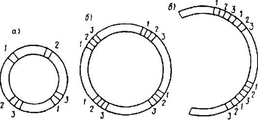
Рис. 21. Схема вырезки образцов для механических испытаний трубы диаметром до 400 мм включительно (а); от 400 до 1000 мм (б); 1000 мм и более (в)
1 - на растяжение; 2 - на изгиб корнем шла наружу или на ребро; 3 - на изгиб корнем шва внутрь или на ребро
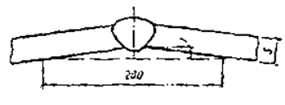
Рис. 22. Образец с прогибом
f - стрела прогиба, S - толщина листов
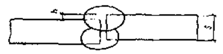
Рис. 23. Образец с несовпадением плоскости листов
h - величина несовпадения плоскости листов
10.10. Клеймение проб, контрольных соединений и готовых образцов производится любым способом так, чтобы клеймо располагалось вне рабочей части образца и сохранялось на нем после испытания.
10.11. К испытаниям допускаются образцы, имеющие требуемую чертежами чистоту обработки и не имеющие механических повреждений в рабочей части.
Испытания на статическое растяжение
10.12. Испытания проводят по ГОСТ 6996-66* с целью определения характеристик механических свойств.
При испытаниях металла различных участков сварного соединения наплавленного металла на статическое (кратковременное) растяжение определяют:
предел текучести физический sT, МПа (кгс/мм2);
предел текучести условный s0,2, МПа (кгс/мм2);
временное сопротивление sB, МПа (кгс/мм2);
относительное удлинение после разрыва (на пятикратных образцах) d5 %;
относительное сужение после разрыва j, %;
При испытаниях сварных соединений определяют прочность (временное сопротивление) sB, МПа (кгс/мм2), наиболее слабого участка стыкового или механического соединения, а также металла шва в стыковом соединении.
При испытаниях сварных соединений, выполненных точечной контактной сваркой или электрозаклепками определяют величину разрушающей нагрузки на точку или электрозаклепку РМАХ, Н (кгс).
10.13. Испытания сварных соединений на статическое растяжение проводят при нормальной температуре, равной 20±10°С. Испытания металла различных участков сварного соединения и наплавленного металла проводят при нормальной или отрицательной температуре, указанной в соответствующих стандартах или другой технической и проектной документации.
10.14. Испытания металла различных участков сварного соединения на статическое (кратковременное) растяжение при всех видах сварки плавлением проводят на цилиндрических образцах типов 1-14 (рис. 24), изготовленных из контрольных соединений, вдоль продольной оси испытываемого участка. Размеры образцов в мм, приведены в табл. 30.
|
Тип образцов |
d0 |
K* |
D |
h |
h1 |
R |
l0 |
l |
L |
|
I |
3±0,1 |
0,03 |
6 |
4 |
2 |
1 |
15 |
18 |
30± 1 |
|
I |
6±0,1 |
0,03 |
12 |
10 |
2,5 |
1,5 |
30 |
36 |
61± 1 |
|
II |
10±0,2 |
0.04 |
16 |
10 |
3 |
3 |
50 |
60 |
86± 1 |
Примечание. К*- допустимая разность наибольшего и наименьшего диаметров на длине рабочей части образца.
Допускается применение пропорциональных цилиндрических коротких образцов другого диаметра или типа по ГОСТ 1497-84, а также образцов с головками увеличенного диаметра и длины.
10.15. Рабочая часть образцов должна полностью состоять из металла испытываемого участка. В головках образцов допускается наличие необработанной поверхности металла, металла других участков сварного соединения и не более двух (параллельных) лысок.
10.16. Разметка мест вырезки образцов производится в соответствии с указаниями табл. 2 и 3 ГОСТ 6996-66*, по макрошлифам, выполненным на торцах заготовки. Допускается разметка без травления, если испытываемый участок имеет сечение, превышающее сечение головки образца.
10.17. Испытания сварных соединений (в целом) на статическое растяжение проводят на образцах толщиной или диаметром, равным, как правило, толщине или диаметру основного металла, с расположением сварного шва, в середине рабочей части образца. Общая длина образца L и длина захватной части образца h определяются конструкцией испытательной машины. Если сварное соединение выполнено из листов разной толщины, то более толстый лист механической обработкой должен быть доведен до толщины тонкого листа.
10.18. Для определения прочности наиболее слабого участка стыкового или нахлесточного соединения используют плоские образцы типов XII и ХIII (рис. 25) и цилиндрические образцы типа ХТV (рис. 26) максимальной толщины или диаметра до 75 мм. Размеры образцов приведены в табл. 30.
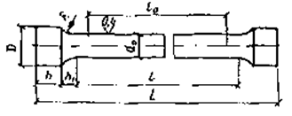
Рис. 24. Цилиндрические образцы для испытаний металла различных участков сварных соединений на статическое (кратковременное) растяжение по ГОСТ 6996-66* типы I, II, III
d0 - диаметр рабочей части образца; D - диаметр захватной части образца; l0 - расчетная длина рабочей части образца; l - длина рабочей части образца; h - длина захватной части образца; h1 - длина переходной части образца; L - общая длина образца
|
Толщина основного металла, а, или диаметр стержня d, мм |
Ширина рабочей части образца b, мм |
Ширина захватной части образца b1, мм |
Длина рабочей части образца l, мм |
|
Плоские образцы типов ХII и XIII |
|||
|
До 6 |
15 ±0,5 |
25 |
50 |
|
Более 6 до 10 |
20 ± 0,5 |
30 |
60 |
|
" 10 " 25 |
25 ± 0,5 |
35 |
100 |
|
" 25 " 50 |
30 ± 0,5 |
40 |
160 |
|
" 50 " 75 |
35 ± 0,5 |
45 |
200 |
|
Цилиндрические образцы типа XIV |
|||
|
До 10 |
- |
- |
60 |
|
Более 10 до 25 |
- |
- |
100 |
|
" 25 " 50 |
- |
- |
160 |
|
" 50 " 75 |
- |
- |
200 |
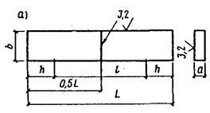
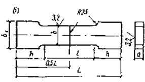
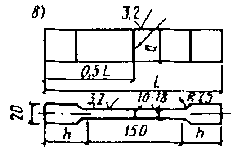
Рис. 25. Плоские образцы для испытаний сварных стыковых соединений на статическое растяжение по ГОСТ 6996-66*
а - тип XII; б - тип ХШ; в - тип ХV; а - толщина основного металла; b1 - ширина захватной части образца, l - длина рабочей части образца, h - длина захватной части образца, L - общая длина образца
Допускается применение образцов типов I-III (см. рис. 24) или пропорциональных плоских и цилиндрических образцов, рекомендуемых ГОСТ 1497-84*. При недостаточной мощности разрывной машины применяют образцы типов ХV-ХVII уменьшенным сечением рабочей части (см. рис. 25 и 26).
10.19. Усиление шва перед испытанием снимается механическим способом с последующим удалением рисок. При этом разрешается снимать основной металл по всей поверхности образца на глубину до 15 % толщины металла (или диаметра стержня), но не более 4 мм.
10.20. Схема расположения заготовок для изготовления образцов типа ХVI и ХVII выбирается в соответствии с табл. 9 и 10 ГОСТ 6996-66*.
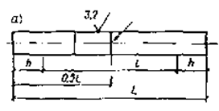
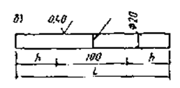
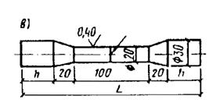
Рис. 26. Цилиндрические образцы для испытания сварных стыковых соединений на статическое растяжение по ГОСТ 6996-66*
а - тип ХIV; б - тип ХVI; в - тип ХVII; d - диаметр образца, l - длина рабочей части образца, h - длина захватной части образца, L - общая длина
10.21. При определении прочности сварных соединений труб используются образцы типов ХVIII и XIX (рис. 27), максимальный диаметр которых определяется мощностью испытательной машины.
Для испытания труб диаметром более 60 мм изготавливают невыправленные образцы типов XII и ХIII (см. рис. 25) или цилиндрические образцы типов I-III (см. рис. 24).
10.22. Испытания трубных образцов типов ХVIII и XIX проводятся без снятия усиления шва, если нет других указаний в технологической и проектной документации.
10.23. При испытании на срез сварных соединений, выполненных точечной сваркой или электрозаклепками используют образцы типа XX (рис. 28). Испытаниями определяют разрушающую нагрузку на точку или электрозаклепку РMAX, Н (кгс). Размеры образцов приведены в табл. 31.
10.24. Временное сопротивление металла шва в стыковом соединении определяют испытанием плоских и цилиндрических образцов с выточками, уменьшающими рабочее сечение образцов в месте расположения сварного шва, типов ХХIV и ХХV (рис. 29) максимальной толщины или диаметром до 50 мм. Размеры образцов приведены в табл. 32.
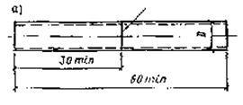
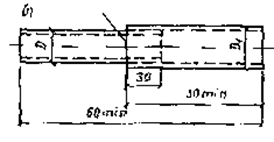
Рис. 27. Образцы для контроля прочности сварных соединений труб по ГОСТ 6996-66*
а - тип ХVIII; б - тип XIX; D - диаметр трубы
|
Толщина основного металла а, мм |
Ширина образца b, мм, не менее |
Толщина основного металла а, мм |
Ширина образца b, мм, не менее |
|
До 1 включительно |
20 |
Св. 3 до 4 включительно |
35 |
|
Св. 1 до 2 " |
25 |
" 4 " 5 |
40 |
|
" 2 " 3 " |
30 |
" 5 |
45 |
|
Толщина основного металла а или диаметр стержня d1, мм |
Ширина захватной части образца b1, мм |
Ширина рабочей части образца в или диаметр рабочей части образца d, мм |
Радиус закругления R, мм |
Длина рабочей части образца l, мм |
|
Плоские образцы типа ХХIV |
||||
|
До 6 |
25 |
15±0,5 |
6±1 |
40 |
|
Св. 6 до 10 |
30 |
20±0,5 |
12±1 |
60 |
|
" 10 " 25 |
38 |
25±0,5 |
20±2 |
70 |
|
" 25 " 40 |
45 |
30±0,5 |
25±2 |
90 |
|
" 40 " 50 |
55 |
35±0,5 |
30±2 |
110 |
|
Цилиндрические образцы типа ХХV |
||||
|
До 5 Св. 5 до 10 |
- |
0,6 d1 |
40 |
|
|
60 |
||||
|
" 10 " 15 |
- |
0,7 d1 |
0,5 d1 |
70 |
|
" 15 " 30 |
90 |
|||
|
" 30 " 50 |
110 |
|||
10.25. Разметку поперечной оси образца производят по узкой части шва после шлифовки и травления боковой поверхности контрольной пластины.
10.26. Размеры образцов при толщине или диаметре металла, превышающие 75 мм для образцов XII-ХIV типов и 50 мм для образцов ХХIV и ХХV типов устанавливаются соответствующими техническими условиями.
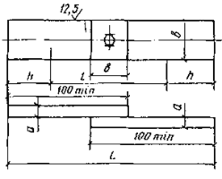
Рис. 28. Образец для испытания на срез, выполненный точечной сваркой или электрозаклепками по ГОСТ 6996-66*, тип XX
а - толщина образца, h - длина захватной части образца, L - общая длина образца, b - ширина образца
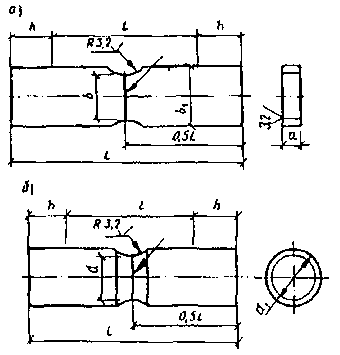
Рис. 29. Образец для определения временного сопротивления металла шва в стыковом соединении по ГОСТ 6996-66* а - тип XXIV; б - тип ХХV;
а - толщина основного металла, b1, - ширина захватной части образца, b - ширина рабочей части образца, R - радиус закругления, l - длина рабочей части образца, L - общая длина образца, h - длина захватной части образца; d1 - диаметр стержня, d - диаметр рабочей части образца
10.27. Допускается проведение испытаний на образцах типов I-III, ХII-ХVII, ХХIV и ХХV, имеющих более низкий класс чистоты обработки, при соответствии механических свойств металла образцов всем установленным требованиям.
10.28. По требованию технологической документации разрешается проведение испытаний образцов типов XII, ХIII, ХIV, ХVIII и XIX по ГОСТ 6996-66* без снятия усиления шва.
10.29. Для статических испытаний на растяжение (сжатие) и статический изгиб в строительно-монтажных организациях применяют испытательные машины Р-5 (РМА-5), Р-20, Р-50, Р-100, а для испытаний на разрыв и изгиб в полевых условиях - специальную разрывную машину РМ-20.
10.30. В ходе испытания на статическое растяжение образец доводят до разрушения действием плавно возрастающей нагрузки.
10.31. Временное сопротивление sВ, МПа (кгс/мм2), вычисляют по формуле
sВ=PMAX/F, (19)
где PMAX - наибольшая нагрузка, предшествующая разрушению образца, H (кгс); F - площадь поперечного сечения образца в наименьшем сечении до испытания, мм (при испытании образцов с неснятым усилением шва берется площадь сечения образца вне шва).
10.32. Относительное остаточное удлинение d, %, определяется по формуле
d=(lK-l0)100% / l (20)
где lK и l0 - длина рабочей части образца после разрыва и до испытания, мм;
Относительное остаточное сужение (уменьшение площади поперечного сечения рабочей части образца) j, %, определяют по формуле:
j=(F0 - FK)100% / F0, (21)
где F0 и FK - площадь поперечного сечения рабочей части образца (в наименьшем сечении) до испытания и после разрыва, мм2.
10.33. Испытания сварного соединения, металла различных участков сварного соединения или наплавленного металла на статическое растяжение, в соответствии с ГОСТ 6996-66* проводят не менее чем на трех образцах, если нет других указаний в соответствующих стандартах или другой технической и проектной документации.
10.34. Результат испытаний на статическое растяжение, независимо от температуры испытания, определяют как среднее арифметическое результатов, полученных при испытании всех образцов.
Допускается снижение результата испытания для одного образца на 10% нормативного требования, если средний арифметический результат отвечает нормативным требованиям и нет других указаний в соответствующих стандартах или другой технической и проектной документации.
При неудовлетворительном результате испытаний или при наличии в изломе образцов или на их поверхности кристаллизационных или холодных трещин (кроме случаев, когда наличие трещин допускается соответствующими стандартами или другой технической и проектной документацией) испытания повторяют на удвоенном количестве образцов из этого же или из вновь сваренного стыка.
Общие результаты испытаний определяют по показаниям, полученным при повторных испытаниях, которые являются окончательными.
10.35. Нормируемые величины временного сопротивления и относительного остаточного удлинения при испытании на статическое растяжение регламентируются соответствующими главами СНиП или другой нормативной и проектной документацией.
Испытания на статический изгиб
10.36. Испытание стандартизовано ГОСТ 6996-66* и служит для контроля пластичности стыкового сварного соединения в целом, определяемой его способностью деформироваться (принимать заданный по размеру и форме изгиб) при нормальной температуре 29±10°С
10.37. Целью испытаний на статический изгиб является оценка предельной пластичности сварного соединения, которая характеризуется углом изгиба а (рис. 30), полученным плоским образцом при испытании на статический изгиб или величиной просвета (рис. 31, а) между сжимаемыми поверхностями при испытании образца в виде отрезка трубы на сплющивание, до момента образования первой развивающейся трещины в растянутой зоне образца.
10.38. В зависимости от цели испытания сварное соединение подвергают изгибу (сплющиванию) вдоль или поперек продольной оси шва. При изгибе вдоль шва (рис. 31, б) определяют пластические свойства металла шва и частично металла зоны термического влияния. При изгибе поперек шва выявляют различие в пластичности совместно изгибаемых металла шва, металла зоны термического влияния и основного металла.
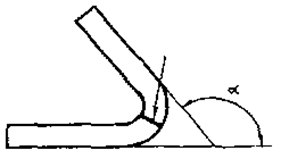
Рис. 30. Характеристика плоского образца при проведении испытания на статический изгиб по ГОСТ 6996-66*
а - угол изгиба
Рис. 31. Схема испытания образца по ГОСТ 6996-66*
а - в виде отрезка трубы с поперечным расположением шва на сплющивание;
б - плоских образцов (I - с продольным расположением чтя на статический изгиб; II - с поперечным расположением шва на статический изгиб по ГОСТ 6996-66);
а - толщина испытываемого металла, h - величина просвета между сжимающими поверхностями при появлении периой трещины, D - диаметр оправки, r - радиус опор, k - расстояние между опорами
10.39. Для испытания используют плоские образцы прямоугольного сечения с продольным или поперечным (рис. 32) расположением шва и образцы в виде отрезка трубы с поперечным расположением шва (рис. 33).
10.40. Плоские образцы и образцы с естественной кривизной типов ХХVI, ХХVII и ХХVIII изготовляют из контрольных пластин или вырезают из труб диаметром не менее 55 мм.
10.41. Образцы в виде отрезков труб для испытаний на сплющивание изготовляют из труб диаметром менее 100 мм при толщине стенки менее 12 мм.
10.42. Размеры образцов для испытаний на статический изгиб и сплющивание приведены в табл. 33.
10.43. Усиление шва или грат, образующийся при стыковой контактной сварке, снимают механическим путем до уровня основного металла, с последующим полным удалением рисок. Кромку рабочей части l плоских образцов закругляют по радиусу, равному 0,2 их толщины, но не более 3 мм.
|
Тип и вид образца |
Толщина основного металла а, мм |
Ширина (диаметр) образца b, мм |
Общая длина образца L, мм |
Длина рабочей части образца l, мм |
Номер рисунка |
|
ХХVI плоский с продольным швом |
До 5 |
а ± 15 |
2,5 D ± 30 |
L/3 |
32, а |
|
Св. 5 до 50 |
а ±30 |
||||
|
ХХVII плоский с поперечным швм |
До 50 |
1,5а, но не менее 10 |
1,5 D ± 80 |
L/3 |
32, б |
|
ХХVIII плоский с поперечным швом |
До 10 |
20 |
3D ±80 |
L/3 |
32, б |
|
Св. 10 до 25 |
30 |
3 D ±80 |
L/3 |
32, б |
|
|
XXX трубный с поперечным швом |
До 12 |
До 100 |
L=0 |
33 |
Рис. 32. Плоские образцы по ГОСТ 6996-66*
а - с продольным расположением шва (тип ХХVI) ; б - с поперечным расположением шва (тип ХХVII, ХХVIII) ;
а - толщина образца, b - ширина образца, l - длина рабочей части образца, L - общая длина образца
Рис. 33. Образцы для испытания сварных труб малого диаметра с поперечными (круговыми) швами (тип XXX) по ГОСТ 6996-66*
D - диаметр трубы; L - длина образца
10.44. Испытание на статический изгиб проводят на универсальных испытательных машинах (см. п. 10.29) или на гидравлических прессах. Допускаются другие способы создания нагрузки между двумя параллельными плитами (ручной винтовой пресс, гидравлический домкрат и т. д.).
10.45. Испытание образцов типа ХХVI проводят по схеме рис. 32, а, типов ХХVII и ХХVIII - по рис. 32, б, типа XXX - по рис. 31 при плавном увеличении нагрузки (со скоростью не более 15 мм/мин), путем изгиба плоского образца, помещенного на двух опорах с помощью оправки или сплющивания образца в виде отрезка трубы между параллельными плитами.
10.46. Диаметр оправки D при отсутствии специальных указаний, принимается равным двум толщинам основного металла.
10.47. Радиусы опор г для образцов типов ХХVI и ХХVII приведены в табл. 34, для образцов типа ХХVIII r=25 мм.
|
Толщина основного металла а, мм |
Радиус опоры, r, мм |
|
До 2 |
2 |
|
Св. 2 до 4 |
4 |
|
" 4 " 8 |
8 |
|
" 8 " 10 |
10 |
|
" 10 " 26 |
20 |
|
" 26 |
25 |
10.48. Расстояние между опорами К=2,5D для образцов типа ХХVII и К=3D для образцов типа ХХVM (см. рис. 31, б).
10.49. Изгиб образцов при испытании, в зависимости от требований проектной документации, продолжают:
до нормированного угла, если по его достижении не появилось ни одной трещины в растянутой зоне образца (угол изгиба измеряют без снятия нагрузки);
до появления первой развивающейся трещины или глубокого надрыва в растянутой зоне образца, с фиксацией угла изгиба (угол изгиба измеряют после снятия нагрузки). Появление надрывов длиной до 5 мм по кромкам и на поверхности образца, не развивающихся дальше в процессе испытания, браковочным признаком не является;
по параллельности сторон;
до соприкосновения сторон.
При испытании образцов в виде отрезка трубы сплющивание продолжают до получения просвета b между его стенками, равного установленному требованиями проектной документации, а при отсутствии норм - до просвета, равного двойной толщине стенки отрезка трубы.
10.50. Образцы типов ХХVI, ХХVII и ХХVIII дают несравнимые результаты испытаний, поэтому нормативные требования устанавливаются технической и проектной документацией для каждого типа отдельно.
10.51. Испытания образцов проводят после термической обработки (если она предусмотрена).
Испытания сварных соединений из разнородных металлов на статический изгиб не производят.
10.52. Результаты испытаний на статический изгиб определяют как среднее арифметическое результатов, полученных при испытании отдельных образцов.
10.53. Снижение результатов испытаний отдельных образцов на статический изгиб допускается только в случае специальных указаний соответствующих стандартов или другой технической и проектной документации.
10.54. При неудовлетворительных результатах испытания его повторяют на удвоенном количестве образцов из этого же или вновь сваренного стыка.
10.55. Общие результаты испытаний определяют по показаниям, полученным при повторных испытаниях. Результаты повторных испытаний являются окончательными.
10.56. Нормируемые углы изгиба, количество образцов и положение сварного шва при испытаниях регламентируются соответствующей нормативной и проектной документацией.
Испытания на ударный изгиб
10.57. Испытания на ударный изгиб проводят по ГОСТ 6996-66* для определения ударной вязкости металла различных участков сварного соединения и наплавленного металла.
10.58. Для испытаний на ударный изгиб применяют образцы с надрезом. Форма и размеры образцов в зависимости от толщины испытываемого металла приведены на рис. 34 и табл. 35.
|
№ п.п. |
Тип образца |
Толщина металла, мм |
Размер образца, мм |
Условное обозначение ударной вязкости |
Номер надреза |
|
|
высота |
ширина |
|||||
|
1 |
VI |
11 и более |
10±0,1 |
10±0,1 |
аН |
I |
|
2 |
VI |
То же |
10±0,1 |
10±0,1 |
аНЗ |
III |
|
3 |
VI |
" |
10±0,1 |
10±0,1 |
аН5 |
IV |
|
4 |
VII |
6-11 |
10±0,1 |
5±0,1 |
аНТ |
I |
|
5 |
VIII |
2-6 |
8±0,1 |
а |
аНА |
I |
|
6 |
IX |
11 и более |
10±0,1 |
10±0,1 |
аН45 |
II |
|
7 |
Х |
6-11 |
10±0,1 |
5±0,1 |
аНТ45 |
II |
|
8 |
XI |
2-6 |
8+0,1 |
а |
аНА45 |
II |
Примечания. 1. Образцы различных типов дают несравнимые между собой результаты испытаний. 2. Применение образцов по п.п. 2 и 3 разрешается по требованию проектно-технологической документации. 3. Длина образцов принята 55±0,6 мм.
10.59. Место надреза и расстояние от оси надреза до границы сплавления оговаривается проектно-технологической документацией. В зависимости от цели испытания надрез на образце располагают по металлу шва, зоне сплавления и в различных участках зоны термического влияния. Форма и размеры надрезов приведены на рис. 34.
Рис. 34. Образцы с надрезами для испытаний на ударный изгиб по ГОСТ 6996-66* (а - толщина основного металла, мм)
10.60. Вырезка заготовок для изготовления образцов и разметка мест надрезов производятся после шлифовки и травления боковых граней контрольных пластин в соответствии с ГОСТ 6996-66* (п. 5.6, черт. 9-13 и табл. 4 и 5 указанного стандарта).
10.61. При вырезке образцов типов VI и IX из листов толщиной соответственно 12 и 11 мм и образцов типов VII и Х из листов толщиной 6 мм допускается наличие необработанного слоя основного металла на поверхности образца. Поверхность основного металла в образцах типов VIII и XI не обрабатывают.
10.62. Усиление шва и несовпадение плоскости листов в стыковых сварных соединениях удаляют механическим путем до уровня основного металла.
Рис. 35. Схема испытания на ударный изгиб
а - расположение образца; б - схема нанесения удара; 1 - маятниковый копер; 2 - образец; 3 - опора; А - направление удара; a, b - углы отклонения маятника до и после удара; h1, h2 - высота подъема маятника до и после удара
10.63. Испытание на ударный изгиб проводят на маятниковых копрах. В лабораториях строительно-монтажных организаций рекомендуется применение маятниковых копров МК-30.
10.64. При испытании образец устанавливают горизонтально на двух опорах копра и строго посередине образца наносят поперечный удар со стороны, противоположный надрезу. Ударное нагружение осуществляется за счет свободного падения маятника под действием его собственной массы из исходного (верхнего) положения маятника, обычно равного 0,8-2,5 м от уровня образца. Положение образца и схема нанесения удара показаны на рис. 35.
10.65. Если в результате испытания образец не разрушился полностью, то контрольный показатель ударной вязкости считается не установленным, а в протоколе испытания указывается, что образец при максимальной энергии удара маятника не был разрушен.
10.66. Испытания на ударный изгиб проводятся при нормальной 20±10°С и отрицательных температурах. Температура испытания указывается в соответствующих стандартах или другой технической и проектной документации.
Независимо от размеров и формы образцов условия проведения испытаний и подсчет результатов испытаний при всех температурах аналогичны.
10.67. Образцы для испытаний при отрицательных температурах охлаждают в специальной ванне, заполненной спиртом или другой незамерзающей жидкостью. В качестве хладагентов используют твердую углекислоту и ее смеси (Т = -70°С) или жидкий азот (Т=-196°С). Температуру измеряют термометром или термопарой.
Перед установкой на копер образцы переохлаждают. Степень переохлаждения образцов согласно ГОСТ 9454-78* приведена в табл. 36.
|
Температура испытаний, °С |
Температура переохлаждения, °С |
|
От плюс 10 до минус 40 |
2-3 |
|
От минус 40 до минус 60 |
3-4 |
|
Св. минус 60 |
4-6 |
10.68. Ударную вязкость характеризует относительная или удельная работа деформации аН, Дж/м2 (кгс×м/м2), которая определяется отношением работы А, затраченной на разрушение образца, к площади поперечного сечения в месте надреза до испытания F
aH=DAH/F (22)
10.69. Испытания металла различных участков сварного соединения и наплавленного металла на ударный изгиб, согласно ГОСТ 6996-66*, проводят не менее чем на трех образцах, если нет других указаний в соответствующих стандартах или другой технической документации.
10.70. Результат испытаний на ударный изгиб определяют, как среднее арифметическое результатов, полученных при испытании всех образцов.
Допускается снижение результата испытания для одного образца ниже нормативного требования к ударной вязкости не более, чем на 0,05 МДж/м2 (0,5 кгс×м/м2), если результат средний арифметический отвечает нормативным требованиям и нет других указаний в соответствующих стандартах или другой технической и проектной документации.
При неудовлетворительном результате испытаний или при наличии в изломе образцов или на их поверхности кристаллизационных или холодных трещин (кроме тех случаев, когда наличие трещин допускается соответствующими стандартами или другой нормативной технической и проектной документацией) испытания повторяют на удвоенном количестве образцов.
Общие результаты испытаний определяют по показаниям, полученным при повторных испытаниях. Результаты повторных испытаний являются окончательными.
10.71. Нормируемые величины ударной вязкости при испытании металла различных участков сварного соединения и наплавленного металла на ударный изгиб (на надрезанных образцах) регламентируются нормативной и проектной документацией.
Измерение твердости
10.72. Измерение твердости металла шва и зоны термического влияния производят при исследовании теплового режима сварки, контроля качества термической обработки металлоконструкции или трубопроводов, или если это оговорено требованиями проектной документации.
10.73. Наиболее распространены методы измерения твердости по методу Бринелля и Виккерса, основанные на вдавливании в испытуемый металл более твердого наконечника определенной формы (индентора).
10.74. Твердость измеряется на макрошлифе, изготовленном в поперечном сечении сварного шва, вырезанного из контрольного соединения или из сварного стыка металлоконструкции (трубопровода), а также непосредственно на металлоконструкции (трубопроводе).
Образцы вырезаются таким образом, чтобы были охвачены все участки сварного соединения. Допускается вырезка образцов для измерения твердости только одного участка.
10.75. Минимальная толщина образца должна быть не менее 10-кратной глубины отпечатка при измерении твердости по ГОСТ9012-59* (СТ СЭВ 468-77) и не менее 8-кратной глубины отпечатка при измерении по ГОСТ 22761-77.
Минимальная толщина образца при измерении твердости по ГОСТ 2999-75* (СТ СЭВ 470-77) должна быть больше диагонали отпечатка в 1,2 раза.
10.76. Измерение твердости производят с помощью стационарных и переносных приборов, соответствующих ГОСТ 236/7-79* (СТ СЭВ 468-77, СТ СЭВ 470-77) и ГОСТ 9030-75*, способных создавать на инденторе необходимые нагрузки и обеспечивающих выдержку индентора под нагрузкой в течение 10-15 с.
Переносные приборы используются, в основном, для контроля качества сварных соединений после термической обработки в монтажных и полевых условиях. Технические характеристики переносных приборов для измерения твердости приведены в табл. 37.
10.77. При измерении твердости по методу Бринелля в качестве инденторов используются стальные шарики диаметром: 1,2; 2,5; 5 и 10 мм.
10.78. Расстояние между центрами двух соседних отпечатков должно быть не менее 4d (d - диаметр отпечатка), а расстояние от центра отпечатка до края образца (изделия) - не менее 2,5d. При определении твердости по методу Бринелля измеряют диаметр отпечатка в двух перпендикулярных направлениях с помощью микроскопа.
10.79. При измерении твердости по ГОСТ 9012-59* нагрузка на индентор выбирается в соответствии с п. 4.1, а число твердости определяется по формуле, приведенной в прил. 1 или по табл. 1-20 обязательного прил. 3 указанного стандарта.
10.80. При измерении твердости по ГОСТ 22761-77 выбор параметров производится по табл. 1 указанного стандарта.
Число твердости определяется по таблице, приведенной в обязательном прил. 1 ГОСТ 22761-77 или вычисляется по формуле
(23)
где Р - испытательная нагрузка, Н; D - диаметр шара, мм; d - диаметр отпечатка, мм.
По значениям НВ можно определять временное сопротивление металла при растяжении sB в месте испытания.
Соотношение между НВ и sB для конструкционных углеродистых сталей перлитного класса при испытании шариком, имеющим диаметр 2,5 мм, приведено в рекомендуемом прил. 2 ГОСТ 22761-77 (погрешность составляет ± 5 %).
|
Прибор |
Принцип действия |
Пределы измерения твердости |
Микроскоп для измерения величины отпечатка |
Характеристика индикатора |
Величина погрешности измерения, % |
Габариты прибора, мм |
Масса прибора, кг |
|
ТНСЛ-3М |
Статический |
140-450 НВ |
МПБ-2 |
Шарик d=5 мм |
±5 |
240´220´200 |
7,5 |
|
ТПП-10 |
То же |
100-150 НV |
МПВ-1,3 |
Алмазная пирамида |
±2 |
700´235´145 |
5 |
|
МЭИ-77 |
" |
100-300 НВ |
МПВ-1,3 |
Шарик d = 2,5 и 10 мм |
±0,25 |
250´270´300 |
11 |
|
ТПП-2 |
" |
8-1500 НV |
МПВ-1,3 |
Алмазная пирамида. |
±2 |
210´145´620 |
5,4 |
|
ТПП-4 |
" |
8-448 НВ |
МПВ-13 |
Шарик d = 5 и 10 мм |
±2 |
340´290´155 |
21 |
|
Польди-Хютте |
Динамический |
100-400 НВ |
МПВ-2 |
Шарик d=10мм |
±(7-10) |
Длина 110, диаметр 25 |
0,43 |
|
ВПИ-3К |
То же |
100-400 НV |
МПБ-2 |
Наконечник с двусторонним конусом |
±6 |
Длина 250, диаметр 35 |
0,4 |
|
ВПИ-2 |
" |
100-350 НВ |
МПБ-2 |
Шарик d = 5 мм |
±5 |
236´154´59 |
1,8 |
|
ТОП-1 |
" |
32-400 НВ |
МПБ-2 |
Шарик d=5 и 10 мм |
±7 |
Длина 510, диаметр 60 |
2,1 |
10.81. При измерении твердости по методу Виккерса в качестве индентора применяется алмазный наконечник в форме правильной четырехугольной призмы.
10.82. При измерении твердости по ГОСТ 2999-75* к алмазной пирамиде прикладывают нагрузки, регламентируемые п. 3, 5 указанного стандарта.
10.83. Для определения твердости по методу Виккерса берут среднее арифметическое значение длин двух диагоналей. Разность длин диагоналей одного отпечатка не должна превышать 2 %. Число твердости определяется по табл. 1-5 прил. 1 ГОСТ 2999-75 или по формуле
НV = 2Р sin(a/2)/d2 = 1,854 Р/d2, (24)
где P - нагрузка, H (кгс); a - угол между противоположными гранями пирамиды при вершине, равной 136°; d - среднее арифметическое значение длин обеих диагоналей, мм.
10.84. Измерение твердости рекомендуется проводить по схемам, приведенным на черт. 18 (для тонкого металла - на черт. 19) ГОСТ 6996-66*.
10.85. Согласно ГОСТ 6996-66*, измерение твердости проводят не менее чем в пяти точках для каждого участка сварного соединения.
По требованию технической и проектной документации допускается другое количество точек измерения твердости для каждого участка сварного соединения.
10.86. Среднюю твердость металла каждого участка сварного соединения, в соответствии с ГОСТ 6996-66* определяют как среднее арифметическое результатов отдельных измерений, полученных при испытании твердости данного участка.
Отклонение результатов измерения твердости от нормируемого допускается только в, случае специального указания нормативной технической и проектной документации.
При неудовлетворительных результатах, согласно ГОСТ 6996-66*, испытания повторяют на удвоенном количестве образцов.
Общие результаты определяют по показаниям, полученным при повторных испытаниях. Результаты повторных испытаний являются окончательными.
10.87. Нормируемые величины твердости металла различных участков сварного соединения и наплавленного металла, пределы отклонений результатов отдельных измерений и количество образцов для испытаний твердости регламентируются соответствующими стандартными главами СНиП или другой технической и проектной документацией.
10.88. Сопоставление значений чисел твердости при испытаниях твердости металлов по методам Бринеля (НВ) и Виккерса (НV) приведено на рис. 36.
Металлографическое исследование
10.89. Макроструктуру контролируют для установления глубины проплавления металла, ширины зоны термического влияния, наличия внутренних дефектов (трещин, непроваров, пор, шлаковых и вольфрамовых включений) и выявления участков металла, имеющего структуру, снижающую прочность сварного соединения.
Рис. 36. График сопоставления чисел твердости по Виккерсу и Бринеллю
10.90. Макроструктура изучается невооруженным глазом или с помощью лупы (с увеличением до 5 крат) на образцах, изготовленных из контрольных или выводных пластин (катушек труб) или образцах, специально вырезанных из изделия.
Допускается изучение макроструктуры на поверхности лунки, образованной засверливанием конструкции.
10.91. Образец для изучения макроструктуры вырезается поперек шва с помощью режущего или абразивного инструмента (термическая резка должна быть на расстоянии, при котором в исследуемом сечении не происходит структурных изменений) и должен включать в себя полное сечение шва, зону термического влияния и основной металл сварного соединения.
10.92. Вырезанный образец шлифуется на наждачной бумаге № 2 и 1 последовательно, после чего производится травление.
10.93. Результат макроанализа зависит от того, каким реактивом выполняется травление металла. Применяются две группы реактивов: для глубокого и поверхностного травления. Состав реактивов для глубокого травления приведен в табл. 38. Для поверхностного травления необходимо применять следующие реактивы, мл:
хлористый алюминий.......................................................... 53
хлористая медь...................................................................... 85
вода........................................................................................ 1000
|
Режим травления |
Реактив, мл |
Вода, мг |
||
|
HCl, r=1,19 г/см3 |
HNO3, r=1,5 г/см3 |
H2SO r=1,84 г/см3 |
||
|
Для углеродистой стали |
||||
|
До 2 ч при 60°С |
- |
- |
20 |
100 |
|
От 10 до 45 мин при 60°С |
50 |
- |
- |
50 |
|
От 1 до 2 ч при 70-80°С |
- |
50 |
- |
50 |
|
Для легированной стали |
||||
|
От 20 до 60 мин при 100°С |
100 |
- |
200 |
300 |
|
От 20 мин до 2 ч при 95-98°С |
500 |
- |
70 |
180 |
10.94. При травлении макрошлифа реактивами дня глубокого травления его погружают шлифованной поверхностью вбок в ванну с реактивом, установленную на водяной бане (реактивы № 1-3), или в специально подогреваемую ванну (реактивы № 4 и 5).
При травлении реактивами для поверхностного травления приготовленный макрошлиф погружают на 30-60с в реактив шлифованной поверхностью вниз. Затем макрошлиф вынимают, снимают ватой под струей воды слой меди и протирают досуха поверхность шлифа для предохранения от быстрого окисления на воздухе.
10.95. Макрошлифы рассматривают при хорошем освещении. Исследуемая макроструктура фотографируется немедленно после травления (во избежание окисления поверхности макрошлифа) при увеличениях до 5 крат (рядом с фотографируемым макрошлифом помещают масштабную линейку). Макроструктура может воспроизводиться также на бумаге типографским способом.
Определение химического состава
Химический анализ
10.96. С помощью химического анализа определяется состав основного металла, металла шва и металла, специально наплавленного на образцы.
10.97. Пробы для химического анализа следует отбирать в соответствии с ГОСТ 7122-81. Пробы берут из шва сварного соединения или специальных пластин, сваренных на тех же режимах и в тех же условиях, что и сварное соединение конструкции и трубопровода.
10.98. Пробы отбирают из любой части сварного шва или наплавленного металла, кроме участков в начале и конце шва, длина которых приведена в табл. 39.
|
Сварка |
Длина, мм, не менее |
|
|
неиспользуемого участка |
сварного шва или наплавленного металла |
|
|
Ручная и механизированная дуговая сварка в защитных газах |
20 |
150 |
|
Все способы дуговой сварки неплавящимися электродами в защитных газах и газовая сварка |
15 |
150 |
|
Автоматизированная дуговая сварка в защитных газах, автоматизированная и механизированная дуговая сварка под флюсом, сварка наклонным электродом |
40 |
150 |
|
Электрошлаковая сварка |
50 |
100 |
10.99. Перед взятием пробы поверхность сварного шва или наплавленного металла должна быть тщательно очищена от антикоррозионных покрытий, ржавчины, окалины и других загрязнений. Образцы-пробы вырезают механическим способом или термической резкой, торцы их шлифуют и протравливают для установления границ металла шва. Если образцы вырезать невозможно, границы шва устанавливают, рассверливая наплавленный металл в двух точках сверлом, диаметр которого перекрывает шов в поперечном направлении (рис. 37). Для четкого выявления границ шва места засверловок протравливают.
Рис. 37. Выявление границ сварного шва засверловкой
Пробу в этом случае отбирают сверлением (рис. 38, а и б) строганием или фрезерованием (рис. 38, в) инструментом, твердость которого не менее чем в 1,5 раза выше твердости анализируемого металла.
10.100. В зависимости от определяемых элементов для анализа необходимо брать следующее количество стружки, г, не менее:
углерод............................................................................................................................... 3,5
углерод, марганец, кремний, сера и фосфор.................................................................. 30
углерод, марганец, кремний, сера, никель, хром, молибден, титан,
ваннадий, медь (полный анализ).................................................................................... 50
азот и кислород................................................................................................................. 60
Спектральный анализ
10.101. Спектральный анализ производится согласно "Методическим указаниям по проведению спектрального анализа металла с помощью стилоскопа".
10.102. Спектральный анализ металла шва производится в случаях, если:
а) вызывает сомнение соответствие сварочных материалов назначенным проектной документацией;
б) при повторной термообработке разность в твердости зон сварных соединений превышает допустимую.
Рис. 38. Способы отбора проб для химического анализа а, б - сверлением; в - строганием или фрезерованием
Эскизы испытательных образцов для настройки чувствительности при контроле стыковых соединений толщиной d =20 мм
а - пример маркировки рабочего испытательного образца, б - пример маркировки поверочного испытательного образца
В последнем случае производится спектральный анализ металла шва всех однотипных стыков, сваренных данным сварщиком со времени последней контрольной проверки.
10.103. Поверхность пробы для спектрального анализа обрабатывается строганием или фрезерованием с шероховатостью 80 мкм.
На исследуемой поверхности не должно быть усадочных раковин, пор и включений.
10.104. Спектральный анализ позволяет по появлению определенных линий в спектре, характерных для каждого элемента, сделать вывод о химическом составе испытываемого материала (качественный анализ) или путем измерения интенсивности этих линий установить соответствие между этой интенсивностью и содержанием элементов в образце - пробе (количественный анализ).
10.105. Для проведения спектрального анализа в монтажных условиях применяются переносные стилоскопы СЛП-2 и СЛП-4, в лабораторных и заводских условиях стационарные стилоскопы СП-12 и "Спектр".
Техника безопасности
10.106. При проведении работ по механическим испытаниям, металлографическим исследованиям, химическому и спектральному анализу должен выполняться комплекс мероприятий по технике безопасности и производственной санитарии, гарантирующих необходимую безопасность персонала в соответствии с требованиями безопасности -труда, регламентированными разделами (ССБТ) "Требования безопасности", в том числе:
ГОСТ 12.1.019-79*, ГОСТ 12.2.003-74*(СТ СЭВ 1085-78), ГОСТ 12.1.004-85, ГОСТ 12.1.007-76*.
10.107. Работа на неисправных установках (оголенные провода, неисправные электроприборы) в соответствии с "Правилами техники безопасности при эксплуатации электроустановок потребителей", запрещается. При аварии, несчастном случае или в случае загорания следует немедленно выключить установку.
10.108. Запрещается работать на установках с отсутствующим или неисправным защитным ограждением, находиться в местах возможного вылета образцов.
10.109. Перед началом испытаний на растяжение (сжатие) или изгиб следует проверить соответствие захватов испытываемым образцам и правильность установки и крепления образцов, а также убрать с траверсы посторонние предметы.
10.110. Категорически запрещается поправлять образцы на работающей установке.
10.111. Перед началом испытаний на ударный изгиб проверить исправность копра, правильность установки роликов в соответствии с выбранной высотой подъема маятника.
10.112. Запрещается оставлять маятник подготовленным к проведению испытаний.
10.113. Запрещается брать переохлажденные образцы руками, следует пользоваться щипцами.
10.114. Запрещается курить и пользоваться открытым огнем в помещениях, где проводятся испытания образцов переохлажденных с применением легковоспламеняющихся жидкостей.
10.115. Приготовление реактивов, травление образцов и стружки, сопровождающихся выделением вредных паров, должны производиться только в вытяжных шкафах.
10.116. При травлении образцов не следует прикасаться к ним незащищенными руками, нужно пользоваться резиновыми перчатками или пинцетом.
10.117. Электрооборудование (генераторы, стилоскопы и др.) должно быть надежно заземлено, иметь исправные сигнальные пампы и быть укомплектовано диэлектрическими ковриками.
10.118. Регулировку положения электродов во время горения электрической дуги разрешается производить только одной рукой. Смена электродов должна производиться на выключенном стилоскопе.
10.119. Помещение, где проводится спектральный анализ, должно иметь общую приточно-вытяжную вентиляцию, оборудованную индивидуальными отсасывающими устройствами для каждого стилоскопа.
10.120. Во время работы со стилоскопом персонал должен использовать защитные очки (с обыкновенными стеклами).
10.121. Работы по стилоскопированию должны производиться не менее, чем двумя сотрудниками.
|
Требование |
Уровни квалификации специалистов |
||
|
I |
II |
III |
|
|
Предварительная подготовка, образование Учебное заведение |
Не менее 8 классов |
Не менее 8 классов и желателен практический опыт работы 6 мес |
Высшее техническое или среднее техническое образование |
|
Подразделение НК по месту работы по распоряжению гл. инженера |
Техникумы, профтехучилища, спецкурсы по отраслям в соответствии с программами, утвержденными и согласованными с теми ведомствами, для которых готовятся специалисты |
Факультет по НК технических вузов. Спецфакультет по переподготовке инженеров НК (курсы повышения квалификации) |
|
|
Необходимая практика |
Не менее 6 мес |
Не менее 6 мес; для имеющих удостоверение помощника - не менее 1 мес |
Стаж работы не менее 1 года |
|
Аттестационная комиссия |
Комиссия по месту работы |
Экзаменационная комиссия организации, осуществляющей подготовку |
Межведомственный совет по методам и средствам НК, Комиссия по НК в головных организациях отраслей промышленности, в состав которых входят не менее 2-х специалистов III уровня |
|
Профессия |
Помощники дефектоскописта (дефектоскописты 1-го и 2-го разрядов), лаборанты и т.п. |
Дефектоскописты, ст. дефектоскописты (де-фектоскописты 3-6-го разрядов), техники-дефсктоскописты, ст. техники, ст. лаборанты по НК |
Ответственные руководители (инженеры) по НК |
|
Права специалистов |
Имеет право вести контроль без самостоятельного решения о качестве проконтролированного объекта |
Имеет право вести контроль и оценивать качество проконтролированного объекта |
Имеет право руководить подразделением контроля, вести контроль и оценивать качество проконтролированного объекта, участвовать в обучении и аттестации специалистов по НК |
|
Сроки переаттестации |
Ежегодно, а также, если был перерыв в работе более 6 мес |
Ежегодно, а также, если был перерыв в работе более 6 мес |
Подвергаются переаттестации, если был перерыв в работе более 1 года |
Испытательные образцы предназначены для настройки рабочего режима дефектоскопа и воспроизведения параметров ультразвукового контроля при оценке измеряемых характеристик дефектов.
Изготовляют рабочие и поверочные испытательные образцы. Рабочие образцы применяют при проведении контроля. Поверочные образцы предназначены для поверок рабочих образцов. Рабочие образцы находятся на месте контроля - лабораториях. К каждому образцу должен прикладываться паспорт по приведенной ниже форме.
Образцы выполняют из металла сварного соединения или сварных соединений, подлежащих контролю, предварительно подвергнутых ультразвуковому контролю на отсутствие внутренних дефектов.
Боковые и торцевые поверхности образца должны быть механически обработаны. На каждый образец должна быть нанесена маркировка: номер, метрологическое назначение (поверочный, рабочий), марка стали, размеры и глубина расположения контрольных отражателей (см. рисунок), а также условный коэффициент выявляемости отражателя. Этот коэффициент определяется относительно цилиндрического отражателя диаметром 6 мм на глубине 15 мм в стандартном образце СО-2, аттестованного в установленном порядке для поверочных испытательных образцов, и относительно соответствующего отражателя в поверочном испытательном образце для рабочих испытательных образцов.
В качестве контрольных используются цилиндрические отражатели длиной не менее 20 мм и диаметром 2 мм, расположенные на глубине 0,75d при контроле прямым лучом и на глубине 1,75 d при контроле однократно отраженным лучом (d - толщина контролируемого соединения).
Ось бокового цилиндрического отверстия должна быть параллельна рабочей поверхности образца.
Испытательные образцы должны подвергаться первичной и периодической поверкам. Первичную поверку производят сразу после изготовления, а периодическую - при хранении и эксплуатации образцов не реже одного раза в год.
При поверке должны быть выполнены следующие операции: оценка состояния (чистоты) рабочей поверхности образца; оценка величины отклонения толщины, ширины и длины образца от номинала; оценка величины отклонения геометрических размеров отражателей; измерение и вычисление среднего из десяти значений соответствующих коэффициентов выявляемости каждого контрольного отражателя в образце; расчет среднеквадратической погрешности измерения амплитуды эхосигнала от контрольного отражателя.
Оценку чистоты контактных поверхностей рабочих испытательных образцов производят визуально методом сравнения с соответствующей поверхностью поверочного испытательного образца.
Отклонения размеров испытательного образца определяют при помощи штангенциркуля.
Оценка размеров цилиндрических отражателей производится с помощью калибров.
Измерение амплитуд эхосигналов от отражателей необходимо производить дефектоскопами с калиброванными аттенюаторами при выключенной ВРЧ. Условный коэффициент выявляемостн контрольных отражателей в рабочих испытательных образцах должен быть не более 1 дБ.
В случае, если условный коэффициент выявляемости превышает указанный допуск, необходимо вводить поправку при настройке дефектоскопа. Значение поправки должно выбиваться на рабочем образце и заноситься в его паспорт.
Поверку образцов должны производить специалисты III или II уровня, получившие на то соответствующее разрешение от начальника ОТК или гл. инженера предприятия.
Пример заполнения паспорта образца
|
№ |
Дата поверки |
Назначение |
Длина образца, мм |
Марка стали |
№ образца |
Глубина расположения отражателя, мм |
Размеры отражателей на глубине, мм |
Коэффициент выявляемости отражателя относительно отражателя диаметром 6 мм и СО-2, дБ |
Коэффициент выявляемости отражателя в рабочем образце, дБ |
||||
|
0,75d |
1,75d |
0,75d |
1,75d |
0,75d |
1,75d |
0,75d |
1,75d |
||||||
|
1 |
2 |
3 |
4 |
5 |
6 |
7 |
8 |
9 |
10 |
11 |
12 |
13 |
14 |
|
. . . 4 . |
11.06 84 |
Поверочный |
20 |
10ХСНД 03 |
15 |
5 |
2 |
2 |
-10 |
-16 |
- |
- |
|
|
6 |
11.06. 84 |
Рабочий |
20 |
10ХСНД 05 |
15 |
5 |
2 |
2,1 |
- |
- |
0 |
2 |
|
Специальные преобразователи (рис. 1) имеют единые параметры мнимых преобразователей и предназначены для измерения характеристик выявленных дефектов с целью идентификации их по классам. Указанные преобразователи изготовляют по типовой технологии.
Размеры пьезопластин, устанавливаемых в преобразователях с едиными параметрами мнимых преобразователей:
в плоскости, перпендикулярной плоскости падения луча, аr= 6 мм;
в плоскости падения луча
где сl - скорость продольной волны в материале призмы преобразователя; сt - скорость поперечной волны в контролируемом металле; a - угол входа луча.
После изготовления преобразователей следует измерить их параметры, к которым (ГОСТ 14782-86) относятся:
максимальная условная чувствительность кУ дефектоскопа с преобразователем по стандартному образцу СО-1, мм, или по стандартному образцу СО-2, дБ;
угол ввода луча a, град;
стрела преобразователя, мм;
частота ультразвуковых колебаний, возбуждаемых преобразователем, f, МГц.
Максимальная условная чувствительность измеряется при работе с дефектоскопом, аттестованным в установленном порядке.
Минимальное допустимое значение максимальной условной чувствительности дефектоскопа с преобразователем должно превышать заданное значение чувствительности поиска не менее чем на 4 дБ.
Стрелу преобразователя и угол ввода луча определяют по стандартным образца СО-3 и СО-2.
Частота ультразвуковых колебаний может быть измерена по значению периода колебаний в эхосигнале от вогнутой поверхности стандартного образца СО-3 или от отражателя диаметром 6 мм в СО-2.
Рис. 1. Общий вид специального преобразователя
1 - призма преобразователя, 2 - пьезопластина
Рис. 2. Зависимость
Кроме перечисленных параметров измеряется диаграмма направленности преобразователя в плоскости падения луча.
Экспериментально диаграмма направленности может быть определена по огибающей амплитуд эхосигналов от ненаправленного отражателя в стандартном образце СО-2, на котором нанесены шкалы, проградуированные в значениях угла a преломления луча.
Для определения диаграмм направленности ФЭ(a) по стандартному образцу СО-2 следует:
по стандартному образцу СО-3 уточнить положение метки на боковой поверхности призмы, соответствующей точке выхода луча;
установить преобразователь на стандартный образец СО-2 в положение, при котором амплитуда эхосигнала от цилиндрического отверстия диаметром 6 мм максимальна, и против метки на шкале отсчитать угол ввода луча; сместив преобразователь влево, а затем вправо, определить значения углов aMIN и aMAX, при которых еще возможно измерение амплитуд эхосигналов от отверстия;
переместив преобразователь по образцу в пределах значений aMIN - aMAX, по шкале измерить в децибелах амплитуды U(a) эхосигнала от отверстия диаметром 6 мм при совмещении точки выхода луча с каждым делением на шкале стандартного образца СО-2; в процессе каждого измерения обеспечить надежный акустический контакт и повторяемость результатов;
выписать соответствующие значения функций F1(a), определяемые по графику на рис. 2 и учитывающие влияние расстояния на амплитуду U(a) эхосигнала;
к каждому значению U(a) прибавить соответствующее значение функции F1(a);
нормализовать функцию [F1(a)+F1(a)], отняв от всех ее значений максимальное значение этой функции, соответствующее углу a наклона оси диаграммы F2(a)=[F1(a)+F1(a)]-[F1(a0)+F1(a0)]; функция F2(a) определяет диаграмму направленности в режиме излучения - приема;
разделить значения функции F2(a) пополам, перевести полученные значения децибел в относительные значения искомой функции ФЭ=(a), приближенно характеризующей диаграмму направленности преобразователя как в режиме излучения, так и в режиме приема.
Техническое описание
1. Приспособление предназначено для измерения линейных условных размеров DХ, DН, DL дефектов, выявленных при ультразвуковом контроле.
2. Основные технические характеристики приспособления:
перемещение преобразователя относительно продольной оси шва, мм:
вдоль (Х-Х).......................................................................................................... 75
перпендикулярно (У-У)..................................................................................... 35
допустимое уклонение при перемещении (на участке шва
длиной 50 мм), мм.............................................................................................. 1
габариты, мм....................................................................................................... 145´130´60
масса, кг............................................................................................................... 0,6
3. Приспособление состоит из следующих основных частей: корпуса, держателя с поворотным магнитом, препаратоводителя.
Корпус предназначен для размещения преобразователя и создания стабильного акустического контакта между поверхностью контролируемого объекта и преобразователем при перемещении последнего.
Держатель предназначен для фиксации приспособления на контролируемом объекте; поворотом ручки включают постоянный магнит, вследствие чего осуществляется прижим приспособления.
Препаратоводитель служит для плавного перемещения корпуса с преобразователем в продольном и перпендикулярном направлениях относительно контролируемого сечения и отсчета соответствующих значений линейных условных размеров дефекта с точностью 0,1 мм.
Инструкция по эксплуатации
1. Вставить преобразователь в корпус и закрепить стопорным винтом. Вращая ручки препаратоводителя, установить корпус в среднее положение по осям Х-Х и Y-Y. Подключить преобразователь к дефектоскопу.
2. Приспособление с выключенным магнитом установить на контролируемом изделии на расстоянии LД от выявленного дефекта таким образом, чтобы на экране дефектоскопа наблюдался эхосигнал от дефекта.
3. Перемещением приспособления вдоль шва и перпендикулярно шву найти приблизительное положение, при котором амплитуда эхосигнала от дефекта максимальна.
4. Поворотом ручки держателя включить магнит и зафиксировать приспособление на изделии.
5. Вращением ручек препаратоводителя уточнить положение преобразователя, соответствующее максимальной амплитуде эхосигиала от дефекта.
6. Ручками аттенюатора довести амплитуду эхосигнала до уровня измерения, после чего уменьшить показания аттенюатора на 6 дБ.
Измерение условной протяженности дефекта:
а) вращением ручки А препаратоводителя сместить корпус с преобразователем вправо по оси Х-Х в положение, при котором амплитуда эхосигнала уменьшится до уровня измерений. В этом положении считать со шкалы Х-Х препаратоводителя значение L1;
б) аналогично сместить корпус с преобразователя влево по оси Х-Х и считать со шкалы значение L2;
и) вычислить условную протяженность дефекта DLД, мм, как разность измеренных значении L1 и L1: DLД= L1- L2.
Измерение условной ширины и условной высоты дефекта:
а) вращением ручки Б препаратоводителя сместить корпус с преобразователем по оси Y-Y от шва в положение, при котором амплитуда эхосигнала уменьшится до уровня измерений. В этом положении считать со шкалы Y-Y препаратоводителя значение X1, а со шкалы глубиномера, подведя метку на экране к переднему фронту эхосигнала - значение Н1;
б) аналогично сместить корпус с преобразователем по оси Y-Y к шву и считать значения X2 и Н2;
в) вычислить условную ширину DХLД, мм, и условную высоту дефекта DНД, мм, как разность измеренных соответствующих значении X1, X2 и Н1, Н2: DХД=Х1- Х2;
DНД=Н1- Н2.
Приспособление для измерения угловых характеристик дефектов
Техническое описание
1. Приспособление предназначено для измерения угловых условных размеров Dgn, DgК, дефектов, выявленных при ультразвуковом контроле.
2. Основные технические характеристики приспособления:
перемещение преобразователя по направляющей, мм........................................ 110
угловое смещение преобразователя, град............................................................. ±60
габариты, мм............................................................................................................ 245´65´75
масса, кг.................................................................................................................... 0,3
3. Приспособление состоит из следующих основных частей: корпуса; держателя с поворотным магнитом; линейки-направляющей; регулируемой по вертикали иглы; сектора-транспортира.
Корпус предназначен для размещения преобразователя и фиксации его на расстоянии L от дефекта. Держатель с поворотным магнитом обеспечивает прижим приспособления на контролируемом объекте.
Линейка-направляющая служит для перемещения преобразователя по радиусу LД вокруг дефекта, причем регулируемая по вертикали игла устанавливается точно над проекцией дефекта на контактную поверхность; по сектору-транспортиру отсчитывают угловые размеры.
Инструкция по эксплуатации
1. Вставить преобразователь в корпус и закрепить за приклеенную пластину стопорным винтом*.
* Предварительно на преобразователе должна быть укреплена пластина таврового сечения.
2. Пользуясь делениями линейки-направляющей, разместить корпус на расстоянии LД и закрепить в этом положении прижимным винтом на направляющей.
3. Расположить приспособление на поверхности контролируемого объекта так, чтобы магнитный держатель находился за валиком шва, а регулируемая игла - над проекцией дефекта на поверхность.
4. Подсоединить преобразователь к дефектоскопу и включить дефектоскоп.
5. Уточнить положение преобразователя, пользуясь экраном дефектоскопа (амплитуда эхосигнала от дефекта должна быть максимальной).
При необходимости, сохраняя неизменным положение преобразователя, смещениями магнитного держателя добиться совпадения указателя и нулевого показания на секторе-транспортире.
6. Поворотом ручки держателя включить магнит и зафиксировать приспособление на изделии.
7. Небольшими смещениями корпуса с преобразователем проверить соответствие положения преобразователя максимальной амплитуде эхосигнала от дефекта.
8. Ручками аттенюатора довести амплитуду эхосигнала до уровня измерения, после чего уменьшить показания аттенюатора на 6 дБ.
9. Сместить корпус с преобразователем по радиусу по часовой стрелке до положения, при котором амплитуда эхосигнала уменьшится до уровня измерения. Записать значение g1 по показаниям сектора транспортира.
10. Аналогично сместить корпус с преобразователем против часовой стрелки и записать значение g2 по показаниям сектора-транспортира.
При измерении угловых размеров протяженных дефектов вращение происходит по радиусу вокруг проекция края дефекта на контактную поверхность. Край дефекта определяется положением преобразователя перемещаемого вдоль сварного шва, при котором амплитуда эхосигнала от дефекта в два раза меньше максимальной амплитуды.
11. Вычислить угол индикации дефекта, как разность измеренных значений g1 и g2: Dg=g1 - g2.
Рабочие чертежи приспособлений можно запросить в НИИ мостов ЛИИЖТа наложенным платежом по адресу:
190031, Ленинград, Фонтанка, 113.
Отношение DN, дБ, коэффициентов прозрачности границы призма преобразователя - металл контролируемого соединения и границы призма преобразователя - металл стандартного образца может быть определено как разность между амплитудой эхосигнала от двугранного угла контролируемого изделия NH и амплитудой эхосигнала от двугранного угла стандартного образца N0, если толщина контролируемого изделия и толщина стандартного образца не отличаются более чем на ± 10 %.
Если контролируемое изделие и стандартный образец имеют различную толщину, то в контролируемом соединении на глубине 44 мм высверливается цилиндрическое отверстие диаметром 6 мм. В этом случае отношение коэффициентов прозрачности может быть определено как разность амплитуд эхосигналов от цилиндрического отражателя, выполненного в контролируемом изделии и цилиндрического отражателя в стандартном образце.
Если по каким-либо причинам нельзя измерить отношение коэффициентов прозрачности, то для поверхности проката DN принимается рапным 6 дБ.
Предварительно на преобразователе должна быть укреплена пластина таврового сечения.
|
Способы прозвучивания преобразователями, выпускаемыми промышленностью (n=15 мм) |
Испытательные образцы для настройки чувствительности |
|
m=0
а=65° ±2°, L1= 2,15d |
Из образца контролируемого соединения
|
|
m=1
а =65° ± 2°, L2= 2,15d+3, L3= 4,3d |
Из материала контролируемого соединения
|
Примечания: 1. Контролю подлежат соединения при условии, что b1+b2£4.3d-36
2. Контроль вести с двух сторон.
Порядок настройки чувствительности оценки, которой соответствует показание аттенюатора NХО:
|NХО|=| N0|-|кД+DN|.
1. Измерить амплитуду эхосигнала от соответствующего цилиндрического отражателя в испытательном образце N0.
2. Уменьшить показания аттенюатора на величину поправки чувствительности кД, определяемую по таблице:
|
d, мм |
10 |
12 |
14 |
16 |
18 |
20 |
|
|
Кд |
m=0 |
4 |
5 |
5 |
6 |
7 |
8 |
|
дБ |
m=1 |
8 |
8 |
9 |
9 |
9 |
10 |
3. Уменьшить показания аттенюатора на величину DN.
4. Убедиться, что мертвая зона £ 3 мм.
Примечание. При применении испытательного образца первого вида DN=0; при применении испытательного образца второго вида DN определяется по прил.5.
|
d, мм |
a1, град |
a2, град |
Z, мм |
L1 |
L2 |
L3 |
Условия прозвучиваемости |
|
20-30 |
65 ± 2 |
65 ± 2 |
3 |
2,15d |
2,15d + 3 |
4,3d |
b1+b2£4,3d-36 |
|
30-50 |
65 ± 2 |
65±2 |
5 |
2,15d |
1,19d + 5 |
2,4d |
0,84b1+0,47b2£2d-30 |
Примечания: 1. Контролю подлежат соединения при соблюдении условия прозвучиваемости. 2. Контроль вести с двух сторон одной плоскости. 3. Мертвая зона при чувствительности оценки должна быть не более 3 мм при a»65° и 8 мм - при a»50°.
Порядок настройки чувствительности оценки, которой соответствует показание аттенюатора NХО:
|NХО|=| N0|-|кД+DN|,
где N0 - показание аттенюатора, соответствующее ослаблению эхосигнала от бокового цилиндрического отверстия диаметром 6 мм на глубине 44 мм в стандартном образце СО-2; DN - разность между коэффициентом прозрачности границы призма преобразователя-металл контролируемого соединения и коэффициентом прозрачности границы призма преобразователя - металл стандартного образца (прил. 5); кД - по SКН-диаграмме для SЭ - 3 мм и Н0= 0,75d при m=0; Н0 = 1,75d при m=1.
Контроль соединения выполняется в два этапа: 1 - контроль с верхней плоскости; 2 - контроль с нижней плоскости.
На этапе 1 контролировать по типовой методике для стыкового соединения толщиной d1, с валиками шва размерами b1, и b0.
На этапе 2 контролировать по типовой методике для стыкового соединения толщиной d2, с валиками шва размерами b2 и b0.
На каждом этапе контроль вести с двух сторон соответствующей плоскости. Параметры a1, L1, L2, L3, NXO и М определяются в зависимости от значения толщины d1 и d2 по прил. 6 или 7.
Контроль вести только со стороны проката. Параметры a1, L1, L2, L3, NXO и М определяются в зависимости от значения толщины d по прил. 6 или 7.
Контроль соединения выполняется в два этапа: 1 - контроль корня шва на отсутствие непровара; 2 - контроль сечений, прилегающих к валику, прямым и однократно отраженным лучом.
Чувствительность оценки и мертвая зона определяются по прил. 6 или прил. 7 для SЭ=2мм.
При контроле измерению подлежит ширина непровара в пределах от 1 до 3 мм. Для измерения используют раздельно совмещенные преобразователи, специально изготовленные, или типовые преобразователи, включенные по раздельной схеме и расположенные на заданном расстоянии L0 (рис. 1), где L0=2d2tga0.
Рис. 1. Направляющая с типовыми преобразователями для контроля тавровых соединений
Измерениям должно предшествовать построение графика, связывающего разницу амплитуды сигнала Ub от непровара шириной b и амплитудой U0 от бесконечной плоскости, расположенной на той же глубине, что и искомый непровар (рис. 2), и ширину b непровара.
Рис. 2. Схема прозвучивания таврового соединения
а - при определении амплитуды эхосигнала от непропара в корне шва; б - при определении амплитуды эхосигнала от бесконечной плоскости
Построение зависимости DN=f(b) осуществляется экспериментально по тест-образцу с моделями непроваров различной ширины b (рис. 3). На рис. 4 в качестве примера приведена зависимость DN=f(b) при d2=20 мм, a=65°, at=15мм´МГц.
Рис. 3. Тест-образец с моделями непроваров
При контроле соединения на отсутствие непровара шириной b* устанавливают преобразователь на полке вне зоны сварного шва. Уменьшают показания аттенюатора на величину DN*, определяемую по графику для соответствующей величины b*.
Рис. 4. Зависимость амплитуд эхосигналов от непроваров шириной b при d=20 мм
К рассмотрению принимаются три схемы трубчатых соединений:
схема стыкового шва поясных труб на подкладном кольце (рис. 1);
схема соединения распорок с фланцами (рис. 2);
схема соединения трубчатых элементов решетки с поясом объемной секции (рис. 3).
Выявление дефектов в стыковых швах поясных труб
Тест-образец (рис. 4) представляет собой пластину толщиной, равной толщине поясной трубы, имеющей на нижней поверхности угловые отражатели-канавки разной глубины, а со стороны усиления шва - паз на заданную глубину. Отражатели-канавки имитируют непровары и трещины разной глубины, а паз имитирует надкорневой дефект шва.
Рис. 1. Схема стыкового шва поясных труб на подкладном кольце
Рис. 2. Схема соединения распорок с фланцами (поперечное сечение)
а - распорка со сплющенным концом; б - распорка нормальная; 1 - фланцы; 2 -подкладное кольцо
Рис. 3. Схема соединения трубчатых элементов
решетки с поясом объемной секции
1 - поясная труба; 2 - распорка; 3 -
раскос
Рис. 4. Тест-образец для настройки
чувствительности дефектоскопа по стыковому шву
а -
сечение; б - план
Рис. 5. График зависимости амплитуды эхосигналов от глубины канавок
По СО-1 и тест-образцу производится настройка чувствительности дефектоскопа и строится график зависимости амплитуды эхосигналов от глубины канавок (рис. 5).
Прозвучивание осуществляется призматическим преобразователем КГН-1 с углом ввода луча 40° на частоте 5 МГц.
Размеры непроваров и трещины определяются путем сравнения высот амплитуд эхоимпульсов на кривой графика и получаемых при прозвучивании контролируемого шва. Для установления точного места расположения дефектов относительно кромки соединяемых труб контроль сварного шва проводится с двух сторон от валика, что позволяет довольно легко различать непровары и трещины в корне.
Косвенно на наличие дефектов в корне шва может указывать отсутствие сигнала от подкладного кольца, который обычно служит дополнительным подтверждением полной сварки труб между собой и с кольцом.
Дефекты над корнем шва могут быть выявлены как прямым, так и однажды отраженным лучом (рис. 6, а, в). В последнем случае возможны совпадения эхосигналов от угла подкладного кольца и от дефекта. Различать их можно по двум признакам: во-первых, амплитуда эхосигнала от дефекта всегда выше, чем от подкладного кольца; во-вторых, сигнал от браковочного дефекта всегда ограничен по протяженности, тогда как от кольца он непрерывен по его окружности.
Рис. 6. Схемы прозвучивания сварных соединений
а - выявление эхосигнала от дефекта прямым лучом; б - выявление эхосигнала от подкладного кольца; в - общий случай расположения эхосигналов, полученных от дефекта однажды отраженным лучом и от подкладного кольца;
1, 2 - координаты контрольных отражателей (зарубок), расположенных на внутренней и наружной поверхностях тест-образца; амплитуды эхосигналов: АНО - от непровара в корне шва; АПК - от подкладного кольца; АД0 и АД1 - от дефектов над корнем шва при прозвучивании прямым и однажды отраженным лучами
Рекомендуемая методика предполагает случаи, когда общий угол разделки кромок в стыковом соединении не менее 70°, а подкладные кольца цельные, одинаковой ширины, подогнаны к стенке трубы с нормируемыми зазорами и приварены только по наружной кромке трубы.
Выявление дефектов в соединениях распорок с фланцами
В таких соединениях любых размеров трещины и непровары исключаются. Поры и шлаковые включения допускаются в пределах, указанных в СНиП III-18-75 при угле разделки кромки торца трубы 50°. Прозвучивание корня шва производится преобразователем 53° типа КГИ-1 на частоте 5 МГц. Настройка чувствительности дефектоскопа производится по зарубкам с размерами 2´2 мм, нанесенным на отрезке трубы (рис. 7), предназначенной для изготовления распорок.
Рис. 7. Тест-образец с зарубками, выполненными на наружной и внутренней поверхностях трубы
а - продольный разрез; б - поперечное сечение
RТР - внутренний радиус трубы; d - толщина стенки трубы; b - 1/2 ширины зарубок; h - глубина зарубок
Согласно требованиям СНиП 14-18-75 к таким соединениям контроль сварного шва может производиться при чувствительности дефектоскопа, позволяющей выявлять недопустимые дефекты в корне шва - прямым лучом и в средней его части - однажды отраженным лучом с размерами по площади, раиной или больше эквивалентной площади дисковою отражателя 1,6 мм.
Выявление дефектов в соединениях элементов решетки с поясами объемных секций
Особенностью таких соединений является сварка труб только с одной стороны, при которой обычно образуется непровар по периметру трубы в корне шва. Но СНиП III-18-75 величина непровара по глубине не должна превышать 15 % толщины трубы, но не более 3 мм.
Сущность методики контроля в том, что по тест-образцу с канавками глубиной 0,5, 1, 1,5, 2, 2,5, 3 мм, изготовляемому из отрезка трубы распорки или раскоса (рис. 8), производится настройка чувствительности дефектоскопа и строится график зависимости амплитуд эхоимпульсоп от глубины канавок для конкретного преобразователя и дефектоскопа, аналогичный показанному на рис. 5.
Прозвучинание канавок тест-образца производится призматическим преобразователем 40° КГН-1 на частоте 5 МГц прямым лучом.
Рис. 8. Тест-образец с канавками, выполненными на внутренней поверхности трубы (продольный разрез)
Примечания: 1. Грань преобразователя, соприкасающаяся с трубой диаметром более 100 мм, не требует подгонки ее по поверхности трубы. Ось преобразователя, в процессе его перемещения по трубе параллельна шву по траектории в виде ломаной линии, следует ориентировать перпендикулярно к оси шва.
2. В процессе настройки чувствительности дефектоскопа по СО-1 (высота амплитуды сигнала принимается равной 20 мм) ручки ВРЧ устанавливаются в крайнее левое положение, а ручка отсечки в такое, при котором отсутствовали бы сигналы помех по всей прозвучиваемой зоне СО-1.
3. Выявление действительного размера дефектов в корне шва достигается при чувствительности дефектоскопа, отвечающий величине ослабления аттенюатора для самой низкой точки графика зависимости амплитуд эхоимпульсов от глубины канавок, снижением амплитуды сигнала с помощью ручек аттенюатора до оценочного уровня 20 мм.
4. Если трубчатый элемент в конструкции имеет толщину большую, чем контрольный образец, то при дефектоскопии шва со стороны этого элемента сигнал от непровара в его корне сместится вправо по сравнению с аналогичным сигналом, полученным на контрольном образце.
При поперечно-продольном сканировании шаг сканирования определяется по номограмме, приведенной на рис. 1.
1. Заданы SПП/SПО = 4 дБ, m=0, а = 65°; по номограмме D*C1= 2 мм.
2. Заданы a = 50°, d= 40 мм, m= 1, D*C1= 4 мм; SПП/SПО = 2 дБ.
Рис. 1. Номограмма для определения шага сканирования DC1 при контроле стальных сварных соединений толщиной d прямым (сплошные линии) или однократно отраженным лучом типового преобразователя с параметрами n= 15 мм, DL= 5мм, аt=15мм×МГц, a0.
1 - a0=65°, d=20°мм; a0=50°, d=30°мм; 2 - a0=50°, d=40°мм; 3 - a0=65°, d=30°мм; 4 - a0=50°, d=50°мм; 5 - a0=50°, d=60°мм.
Рис. 2. Схема измерения условной ширины DХ цилиндрического отражателя в стандартном образце СО-2
1-3 - преобразователи
При продольно-поперечном сканировании шаг сканирования определяется по формуле
Dсti=Y(n+Dr sin a)(1+Y)i-1
или
Dсti=Y(Li+Dr sin a),
где i=1, 2, 3 и т. д. - порядковый номер шага; Li - расстояние от точки ввода луча до сканируемого сечения, нормального к контактной поверхности контролируемого объекта.
Параметр Y определяется экспериментально по цилиндрическому отверстию в стандартном образце СО-2 или по любому цилиндрическому отверстию, выполненному в материале контролируемого соединения. Для этого измеряется условная ширина цилиндрического отражателя DХ при относительном уровне отсечки SПП/SПО и расстояние от отражателя до преобразователя в положении, при котором определяется условная ширина DХ (рис. 2). Величины DХ и Lmin измеряются три раза. Значение Y рассчитывается по формуле
Y=DХ/(Lmin+Dr cos a).
За значение Y принимается среднее трех измерений: Y=(Y1+Y2+Y3)/3.
Для типовых преобразователей и SПП/SПО= 4 дБ значения параметра Y лежат в пределах: при a=50° Y=0,2 ... 0,3; при a=65° Y=0,4 ... 0,6.
ОБРАЗЕЦ ДЛЯ ОПРЕДЕЛЕНИЯ SЭ ПО ОБОБЩЕННОЙ SКН-ДИАГРАММЕ
*Риски и цифры гравировать, длина рисок 5 мм.
Сравнение амплитуд сигналов дифрагированной волны применяют для оценки конфигурации дефекта при озвучивании его по схеме "дельта" (рис. 1).
Дефекты классифицируют на округлые, плоскостные и полуплоскостные по идентификатору дефектов (рис.2).
Идентификатор дефектов устанавливает связь между отношением амплитуд Utl1 и Utl2 сигналов дифрагированной на дефекте сдвиговой волны и соотношением HД/d глубины HД расположения дефекта и толщины d основного металла в сварном соединении.
Отнесению дефекта к одному из типов (или округлой, или полуплоскостной, или плоскостной) должны предшествовать:
подготовка аппаратуры для работы по схеме "дельта";
определение глубины HД расположения исследуемого дефекта,
измерение амплитуд Utl1 и Utl2 сигналов.
Для исследования дефекта по схеме "дельта", реализующей раздельное включение наклонного и прямого преобразователей, используют дефектоскоп с аттенюатором.
Рис. 1. Оценка конфигурации дефекта по схеме "дельта" .
Рис. 2. Идентификатор дефектов
1 - цилиндр; 2 - сфера; 3 -
полуплоскость
Подготовка аппаратуры
Включить дефектоскоп для работы по совмещенной схеме. К выходу генератора подсоединить кабель с наклонным преобразователем. Установить преобразователь на плоскость стандартного образца СО-2, отстоящую от отражателя диаметром 6А на расстоянии 44 мм, в положение, при котором амплитуда эхосигнала от отражателя максимальна. Установив органами управления дефектоскопа высоту импульса на экране, равной 20. . .30 мм, зафиксировать это положение преобразователя.
Подсоединить к входу приемника кабель с прямым преобразователем и перевести дефектоскоп в режим работы по раздельной схеме.
Установить прямой преобразователь на эту же поверхность образца СО-2 в зоне проекции отражателя диаметром 6А, (над отражателем). Перемещая в незначительных пределах прямой преобразователь, зафиксировать его в положении максимальной амплитуды дифрагированного сигнала и измерить последнюю, амплитуда дифрагированного сигнала не должна отличаться более чем на 4 дБ от ранее измеренной амплитуды эхосигнала.
Определение глубины расположения исследуемого дефекта
Перенести преобразователи на сварное соединение, расположить их относительно друг друга и исследуемого дефекта по схеме рис. 1 так, чтобы амплитуда Utl1 сигнала, наблюдаемого на экране ЭСП дифрагированиой на дефекте волны, была максимальной.
Измерить расстояние Lopt, между преобразователями и рассчитать глубину HД по формуле HД=Lopt ctg a, где a - угол ввода луча наклонного преобразователя.
Измерение амплитуд сигналов дифрагированной волны
Амплитуду Utl1 сигнала дифрагированной волны измеряют одновременно с измерением расстояния Lopt.
Для измерения амплитуды Utl2 следует наклонный преобразователь сместить на расстояние, соответствующее озвучиванию дефекта сдвиговой волной, зеркально отраженной от противоположной внутренней поверхности листа в соединении, и аттенюатором довести вершину дифрагированного сигнала Utl2, до уровня, на котором ведутся измерения сигнала; отсчитать показания аттенюатора. Рассчитав отношение измеренных сигналов Utl1 и Utl2, для определенного угла a и соотношения НД/d оценивают принадлежность исследуемого дефекта к одному из типов по идентификатору дефектов (см. рис. 2).
При измерении амплитуд Utl1 и Utl2 на экране могут наблюдаться сигналы помех, обусловленные отражением и дифракцией падающей волны на поверхностях соединения, амплитуда которых заметно меньше амплитуд Utl1 и Utl2 полезных сигналов.
В шве сварного соединения типа С25, обозначенном индексом КУ-2-12, и длиной 1000 мм обнаружены:
а) два дефекта, амплитуды эхосигналов относительно эталонного отражателя в СО-2 UД³0 (Д), а условная протяженность не превышает допустимого значения (Г). Эквивалентная площадь не измерялась. В соответствии с измерениями дефекты расположены на глубине ~15 мм, а условная ширина каждого из них DХ»8 мм:
2ДГ-0-15-0-8-0;
б) один дефект, амплитуда эхосигнала от которого относительно эталонного отражателя в СО-2 UД<0, а условная протяженность которого превышает допустимую протяженность (Б) и равна 50 мм. Эквивалентная площадь дефекта не измерялась. В соответствии с измерениями дефект расположен на глубине 16-24 мм, а его условная высота DН»6 мм:
Б-0-24-50-0-6;
в) один дефект, амплитуда эхосигнала от которого относительно эталонного отражателя в СО-2 UД³0 и условная протяженность превышает допустимое значение условной протяженности (ДБ), условная протяженность равна 35 мм, глубина залегания 12-14 мм:
ДБ-0-14-35-0-0;
г) два дефекта, расстояние между которыми Dl»Dl* (В), амплитуда эхосигнала от одного из дефектов превышает допустимую (Д), эквивалентную площадь SЭ=17 мм2, условная протяженность DLДII £ DL*II (Г), дефект расположен на глубине ~15 мм, условная ширина DДI=11, условная высота DHДI»5 мм, т.е. DXДI / DHДI» DX0I / DH0I (С). Второй дефект имеет амплитуду эхосигнала и условную протяженность менее допустимых (А), расположен на глубине ~14 мм;
д) один дефект, выполняемый только при расположении преобразователя под углом к оси шва, равным приблизительно 20°, амплитуда эхосигнала от которого превышает допустимую амплитуду (Д), расположен на глубине 15-20 мм;
ДТ-0-30-0-0-0.
|
Термин |
Обозначение |
Определение |
|
Дефект |
Д |
Одна несплошность или группа сосредоточенных несплошностей, не предусмотренная конструкторско-технологической документацией и независимая по воздействию на соединение от других несплошностей |
|
Недопустимый дефект |
- |
Дефект, подлежащий обнаружению при неразрушающем контроле с целью устранения (исправления) или с целью недопущения соединения с таким дефектом к эксплуатации |
|
Основные параметры контроля |
- |
Параметры процесса и аппаратура контроля, обусловливающие достоверность обнаружения дефектов |
|
Контактная поверхность соединения |
- |
Поверхность сварного соединения, на которой располагается преобразователь при контроле |
|
Контактирующая среда |
- |
Среда, находящаяся между телами (например, преобразователем и контролируемым соединением), улучшающая передачу упругих волн от одного тела к другому |
|
Условная чувствительность |
КУ |
Чувствительность, характеризуемая размерами и глубиной залегания выявленных искусственных отражателей, выполненных в образце из материала с определенными акустическими свойствами. При ультразвуковом контроле сварных соединений условную чувствительность определяют по стандартному образцу СО-1 или по стандартному образцу СО-2 (2 Р). Условную чувствительность по стандартному образцу СО-1 выражают наибольшей глубиной (в миллиметрах) расположения цилиндрического отражателя, фиксируемого индикаторами дефектоскопа. Условную чувствительность по стандартному образцу СО-2 (2Р) выражают разностью (в децибелах) между показанием аттенюатора при данной настройке дефектоскопа и показанием, соответствующим максимальному ослаблению, при котором еще цилиндрическое отверстие диаметром 6А, фиксируется индикаторами дефектоскопа. |
|
Предельная чувствительность |
SП |
Чувствительность, характеризуемая минимальной эквивалентной площадью отражателя, который еще фиксируется на заданной глубине в сварном соединении при данной настройке аппаратуры |
|
Чувствительность поиска |
SПП |
Значение чувствительности, при которой ведется поиск дефектов |
|
Чувствительность оценки |
SПО |
Значение чувствительности, при которой выявленные дефекты дифференцируют на классы по их эквивалентной площади или по максимальной амплитуде эхосигнала от них |
|
Мертвая зона |
- |
Область, прилегающая к контактной поверхности, дефекты которой не выявляются при данной настройке прибора |
|
Акустическая ось |
- |
Геометрическое место точек максимальной интенсивности поля в дальней зоне |
|
Точка выхода луча |
- |
Точка пересечения акустической оси с контактной поверхностью преобразователя |
|
Стрела преобразователя |
n |
Расстояние от точки выхода луча до передней грани наклонного преобразователя |
|
Диаграмма направленности преобразователя |
Фt(а) |
Нормированная функция, описывающая зависимости какой-либо волновой величины (например, интенсивности) от направления на точку наблюдения |
|
Угол ввода луча |
a |
Угол между нормалью к поверхности, на которой установлен преобразователь, и линией, соединяющей центр цилиндрического отражателя с точкой выхода, при установке преобразователя в положение, при котором амплитуда эхосигнала от отражателя максимальна |
|
Погрешность глубиномера |
- |
Погрешность измерения известного интервала времени между двумя донными эхосигналами |
|
Продольно-поперечное сканирование |
- |
Способ сканирования, при котором преобразователь (система преобразователей) перемещается в продольном направлении относительно контролируемого сечения, систематически сдвигаясь на определенный шаг в поперечном направлении- |
|
Поперечно-продольное сканирование |
- |
Способ сканирования, при котором преобразователь (система преобразователей) перемещается в поперечном направлении относительно контролируемого сечения, систематически сдвигаясь на определенный шаг в продольном направлении |
|
Шаг сканирования |
Dс |
Расстояние между соседними траекториями точки ввода ультразвуковых колебаний при сканировании |
|
Измеряемые характеристики дефекта |
- |
Величины, измеряемые при обнаружении дефекта данным методом контроля и в совокупности, позволяющие с определенной достоверностью описать дефекты и разделить дефекты по классам |
|
Эквивалентная площадь дефекта |
SЭ |
Площадь круглого плоского отражателя с зеркальной поверхностью, ориентированной нормально к акустической оси преобразователя и расположенной на той же глубине, что и дефект, максимальная амплитуда эхосигнала от которого равна максимальной амплитуде эхосигнала от дефекта |
|
Условная протяженность дефекта |
DLД |
Длина зоны (в миллиметрах) между крайними положениями преобразователя, перемещаемого вдоль шва и ориентированного перпендикулярно к оси шва |
|
Условная ширина дефекта |
DХД |
Длина зоны (в миллиметрах) между крайними положениями преобразователя, перемещаемого перпендикулярно шву и плоскости падения луча |
|
Условная высота дефекта |
DНД |
Разность измерения (в миллиметрах или в микросекундах) глубины дефекта при установке преобразователя в крайние положения |
|
Условное расстояние между дефектами |
Dl |
Расстояние между крайними положениями преобразователя, при которых была определена условная протяженность двух рядом расположенных дефектов |
|
Угол индикации дефекта |
Dg |
Угол поворота наклонного преобразователя в одну сторону от положения, соответствующего максимальной амплитуде эхосигнала от дефекта в данном сечении, до положения, при котором амплитуда эхосигнала уменьшается до заданного уровня |
Учебный план
|
Наименование курса |
Количество часов |
|
|
лекций |
лабораторных работ |
|
|
1. Основы металловедения и сварки |
34 |
- |
|
2. Методы неразрушающего контроля качества сварных соединений |
30 |
6 |
|
3. Физические основы ультразвуковой дефектоскопии сварных соединений |
73 |
14 |
|
4. Аппаратура ультразвуковой дефектоскопии |
76 |
20 |
|
5. Технология ультразвукового контроля сварных соединений |
113 |
56 |
|
6. Охрана труда. Техника безопасности |
12 |
- |
|
Итого |
338 |
96 |
Экзамены: по курсам 3 и 4 по 9 ч, по курсу 5 - 15 ч, в том числе 9 ч - теория, 6 ч - практика (экзамены по курсам 5 и 6 совмещаются). Зачеты: по курсам 1 и 2 по 6 ч. Всего 479 ч.
Примечание. В план включены только курсы по спецпредметам.
Программа
|
Наименование темы |
Количество часов |
||
|
лекций |
лабораторных работ |
||
|
1. Основы металловедения и сварки |
|||
|
1. |
Строение и механические свойства стали |
3 |
- |
|
2. |
Термическая обработка стали |
3 |
- |
|
3. |
Методы сварки в строительстве |
2 |
- |
|
4. |
Технология электродуговой сварки |
4 |
- |
|
5. |
Тепловые, деформационные и металлургические процессы при сварке |
4 |
- |
|
6. |
Геометрические параметры сварных швов и разделок кромок |
4 |
- |
|
7. |
Дефекты в сварных швах. Нормативные документы на изображение и качество сварных швов |
8 |
- |
|
8. |
Влияние дефектов сварных швов па прочность сварных соединений |
3 |
- |
|
9. |
Основные требования к сварным швам строительных конструкций по СПиП III-18-75 |
3 |
2 |
|
Итого |
34 |
2 |
|
|
Зачет |
6 |
- |
|
|
Всего |
42 |
- |
|
|
2. Методы неразрушающего контроля качества сварных соединений |
|||
|
1. |
Качество продукции и контроль качества продукции |
3 |
- |
|
2. |
Методы неразрушающего контроля |
4 |
- |
|
3. |
Радиационные методы |
14 |
6 |
|
4. |
Акустические методы |
2 |
- |
|
5. |
Основы статистического управления качеством сварки |
4 |
- |
|
6. |
Сравнение, выбор и сочетание методов контроля качества сварных соединений при изготовлении и монтаже ответственных строительных конструкций |
3 |
- |
|
Итого |
30 |
6 |
|
|
Зачет |
6 |
- |
|
|
Всего |
42 |
- |
|
|
3. Физические основы ультразвуковой дефектоскопии сварных соединений |
|||
|
1. |
Природа и свойства ультразвуковых колебаний |
12 |
- |
|
2. |
Изучение и прием ультразвуковых колебаний |
10 |
- |
|
3. |
Методы ультразвуковой дефектоскопии |
7 |
- |
|
4. |
Эхоимпульсный метод дефектоскопии |
21 |
4 |
|
5. |
Основные параметры ультразвукового контроля сварных соединений и принципы их эталонирования |
13. |
7 |
|
6. |
Методы идентификации дефектов по данным ультразвуковой дефектоскопии |
10 |
3 |
|
Итого |
73 |
14 |
|
|
Экзамен |
9 |
- |
|
|
Всего |
96 |
- |
|
|
4. Аппаратура ультразвуковой дефектоскопии |
|||
|
1. |
Классификация ультразвуковых приборов неразрушающего контроля |
3 |
- |
|
2. |
Функциональная схема современных ультразвуковых дефектоскопов |
16 |
- |
|
3. |
Конструкция электроакустического преобразователя ультразвуковых дефектоскопов |
4 |
4 |
|
4. |
Технические характеристики, органы управления и порядок настройки ультразвуковых дефектоскопов |
30 |
12 |
|
5. |
Аппаратура для механизированного ультразвукового контроля |
6 |
- |
|
6. |
Ультразвуковые толщиномеры |
3 |
- |
|
7. |
Источники питания и измерительные приборы |
8 |
4 |
|
8. |
Вспомогательные приспособления |
6 |
- |
|
Итого |
76 |
20 |
|
|
Экзамен |
9 |
- |
|
|
Всего |
105 |
- |
|
|
5. Технология ультразвукового контроля сварных соединений |
|||
|
1. |
Общие положения технологии ультразвукового контроля сварных соединений |
9 |
- |
|
2. |
Способы прозвучивания, схемы и параметры сканирования сварных соединений |
9 |
4 |
|
3. |
Обеспечение акустического контакта |
3 |
- |
|
4. |
Выбор частоты и чувствительности контроля |
6 |
- |
|
5. |
Измерение характеристик выявленных дефектов |
10 |
4 |
|
6. |
Оценка конфигурации и ориентации выявленных дефектов |
8 |
4 |
|
7. |
Регистрация и оформление результатов контроля |
3 |
- |
|
8. |
Контроль швов стыковых соединений из малоуглеродистых и низколегированных сталей |
22 |
24 |
|
9. |
Контроль швов тавровых, угловых и нахлесточных соединений |
25 |
17 |
|
10. |
Определение толщины листов и расслоений в листах и биметаллах |
6 |
3 |
|
11. |
Организация неразрушающего контроля при изготовлении и монтаже металлических конструкций Инструктивные материалы |
12 |
- |
|
Итого |
113 |
56 |
|
|
Экзамены |
9(теория) |
||
|
6(практика) |
|||
|
Всего |
184 |
||
|
6. Охрана труда. Техника безопасности |
|||
|
1. |
Организация охраны труда на производстве и при монтаже |
2 |
- |
|
2. |
Техника безопасности при работе с электроустановками |
3 |
- |
|
3. |
Условия трудовой деятельности дефектоскопистов ультразвукового контроля и мероприятия по их улучшению |
4 |
- |
|
4. |
Техника безопасности при работе с ионизирующими излучениями |
3 |
- |
|
Итого |
12 |
- |
|
Примерный учебный график
|
Наименование курса |
Недели |
||||||||||||
|
1 |
2 |
3 |
4 |
5 |
6 |
7 |
8 |
9 |
10 |
11 |
12 |
13 |
|
|
1. Основы металловедения и сварки |
x |
x |
x |
x |
|||||||||
|
2. Методы неразрушающего контроля качества сварных соединений |
x |
x |
x |
x |
x |
x |
|||||||
|
3. Физические основы ультразвуковой дефектоскопии сварных соединений |
x |
x |
x |
x |
x |
x |
|||||||
|
4. Аппаратура ультразвуковой дефектоскопии |
x |
x |
x |
x |
x |
||||||||
|
5. Технология ультразвукового контроля сварных соединений |
x |
x |
x |
x |
x |
x |
x |
||||||
|
б. Охрана труда. Техника безопасности |
x |
x |
x |
||||||||||
* В виде книжечки в переплете форматом 85х120 мм.
|
Титульный лист (наименование министерства или ведомства) УДОСТОВЕРЕНИЕ дефектоскописта уровня квалификации УДОСТОВЕРЕНИЕ № ______ Выдано тов. ______________________________________________________________ в том, что он "____" __________________198__ г. поступил и "______ " __________________ 198__ г. окончил курсы при ________________________ ___________________________________________________________________________ (наименование организации, ___________________________________________________________________________ в которой дефектоскопист проходил обучение) по ультразвуковому контролю качества сварных соединений в соответствии с рабочей программой, составленной на основе "Типовой программы подготовки дефектоскопистов по ультразвуковому контролю качества сварных соединений в металлоконструкциях и утвержденным координационным советом по сварке. В период обучения тов.____________________________________________________ изучил следующие дисциплины и при проверке теоретических и практических знаний получил следующие оценки:
и допускается после месячной стажировки на предприятии к выполнению производственного ультразвукового контроля швов ___________________________________________________________________________ (указать типы сварных соединений, толщины, материалы) ___________________________________________________________________________ Удостоверение выдано на основании протокола экзаменационной комиссии №_________ от "___"_____________ 198__ г. Удостоверение действительно по ____________ 198__ г. Председатель комиссии ____________________________________ (должность, подпись) Члены комиссии __________________________________________ (должность, подпись) Личная подпись дефектоскописта ___________________________ РЕЗУЛЬТАТЫ АТТЕСТАЦИИ "_____"______________ 19__ г. постоянно действующей квалификационной комиссии при ______________________________________________________________________ (наименование предприятия) __________________________________________________________________________ проведена аттестация дефектоскописта. При проверке знаний тов. _________________ получил следующие оценки: теоретические знания _______________________ практические навыки _______________________ Срок действия удостоверения согласно протоколу № ___________________________ от "____"_______________ 198__ г. продлен по 198__ г. Председатель комиссии ______________________________ (должность, подпись) Члены комиссии ____________________________________ (должность, подпись) "___"_____________ 19__ г. постоянно действующей квалификационной комиссии при ___________________________________________________________________________ (наименование предприятия) ___________________________________________________________________________ проведена аттестация дефектоскописта. При проверке знаний тов. ________________ получил следующие оценки: теоретические знания _________________________ практические навыки __________________________ Срок действия удостоверения согласно протоколу №___________________________ от "____"______________ 198__ г. продлен по ___________________________________ Председатель комиссии ______________________________ (должность, подпись) Члены комиссии ____________________________________ (должность, подпись) |
Протокол № ___________
заседания квалификационной комиссии при __________________________________
(наименование предприятия)
по аттестации дефектоскопистов от "____" ________________ 19__ г.
|
№ п.п. |
Фамилия, имя, отчество дефектокописта; уровень квалификации |
Образование |
Стаж работы по ультразвуковой дефектоскопии |
Характеристика образцов, на которых проводились испытания |
Оценка практических навыков |
Оценка теоретических знаний |
Заключение комиссии |
|||
|
материал |
тип шва |
толщина свариваемых листов |
способ подтверждения результатов контроля (металлография, просвечивание) |
|||||||
|
1 |
2 |
3 |
4 |
5 |
б |
7 |
8 |
9 |
10 |
11 |
Председатель комиссии (указать должность) _____________________
(подпись)
Члены комиссии (указать должность)____________________________
(подпись)
|
Дата контроля |
Номер записи по журналу |
Наименование изделия, индекс шва |
Тип и номер дефектоскопа |
Параметры контроля |
Фамилия и подпись дефектоскописта |
Примечание |
||
|
угол ввода |
способ прозвучивания |
чувствительность |
||||||
|
20.ХII.85 |
3 |
Горизонтальный лист нижнего пояса №7 |
ДУК66ПМ №134 |
65° 50° |
m=0 m =1 |
КУ=40 для Н=37 КУ =45 для Н=87 |
(подпись) |
|
УТВЕРЖДАЮ
Главный инженер _________________
Предприятие ЗМК
|
Изделие |
Технические условия на изделие |
Характеристика соединения |
Требования к подготовке соединения к контролю |
||||||||||||||||||||
|
индекс |
тип |
Категория |
материал |
толщина листов d, мм |
ширина валика и размер катетов, мм |
||||||||||||||||||
|
Колонна мартеновского цеха |
табл. 41 |
12 |
Стыковое |
1 |
10ХСНД |
20 |
30 |
Очистить от брызг металла и отслаивающейся окалины |
|||||||||||||||
|
Дефектоскоп |
Образцы (стандартные, испытательные) |
Вспомогательные приспособления |
|||||||||||||||||||||
|
Тип: ДУК66ПМ |
Заводской № 885 |
СО-2; СО-3 |
- |
||||||||||||||||||||
|
Параметры контроля |
Параметры сканирования |
Параметры селектиро-вания, мм |
|||||||||||||||||||||
|
f, МГц |
a, мм |
r1, мм |
n, мм |
a, град |
KД,дБ |
М, мм Д, дБ |
Способ прозвучивания |
Шаг DС, мм, и схема (l,t) |
пределы поперечного перемещения Lt, мм |
SПП/SПО, ДБ |
h |
Н |
|||||||||||
|
2,5±10% |
6 |
6,5 |
15 |
65 ±2 |
-9 |
3>10 |
0 |
DС1= 2,5 |
LtMIN=n=15 |
18 |
0 |
||||||||||||
|
7,0 |
15 |
50±2 |
-23 |
8 |
DС1=10 |
LtMAX=L1=108 |
6 |
||||||||||||||||
|
LtMIN=L2=165 |
16 |
20 |
|||||||||||||||||||||
|
LtMAX=L3=120 |
|||||||||||||||||||||||
Примечания: 1. При контроле руководствуются "Инструкцией по контролю пролетов промышленных сооружений".
2. Контроль ведется с двух сторон одной плоскости.
3. При оценке качества соединения учитываются дефекты, у которых UД>6 дБ.
ТЕХНОЛОГИЧБСКАЯ КАРТА УЛЬТРАЗВУКОВОГО КОНТРОЛЯ СВАРНОГО ШВА
Шов считают негодным, если выполняется одно из условий:
1. 0>UД>6дБ, но дефект обнаруживается преобразователем, акустическая ось которого расположена под углом 10 ... 40° к продольной оси шва и если он не выявляется при расположении преобразователя перпендикулярно оси шва.
2. Расстояние Dl<45 мм между ближайшими дефектами, у которых 0>UД>6дБ.
3. Число дефектов N>4 на участке шва длиной 400 мм, у которых 0>UД>6дБ.
4. SЭД>3 мм2 или UД³0 дБ.
5. 0>UД>6дБ, но DLДII>7мм.
|
Разработано |
Согласовано |
|||
|
Руководитель подразделения |
Начальник ЦЗЛ |
Цех |
ОГС |
ОТК |
Форма рабочего журнала для записи результатов ультразвукового контроля швов сварных соединений
|
№ п.п. |
Дата контроля |
Наименование изделия, номер чертежа, индекс шва |
Характеристика сварного шва |
Тип и номер дефектоскопа |
Параметры контроля |
|||||||
|
категория |
марка стали |
клеймо сварщика |
длина, мм |
толщина, мм |
ширина усиления, мм |
угол ввода |
способ прозвучивания (число отражений) |
условная чувствительность оценки к , мм |
||||
|
1 |
18.ХI.73 |
Подкрановая балка, стыковой шов № 5 |
1 |
Ст. 20 |
1625 |
190 |
30 |
40 |
ДУК66ПМ |
65 50 |
0 1 |
30 30 |
Продолжение
|
№ п.п. |
Дата контроля |
Наименование изделия, номер чертежа, индекс шва |
Результаты контроля |
Заключение о качестве шва |
Заключение о макрошлифе |
Примечание |
Фамилия и подпись дефектоскописта |
||||
|
номер дефекта в шве |
амплитуда эхосигнала от дефекта |
расстояние от края шва до начала дефекта, мм |
условная протяженность дефекта X, мм |
глубина расположения дефекта Н, мм |
|||||||
|
1 |
18.ХI.73 |
Подкрановая балка, стыковой шов № 5 |
1 |
Б |
100 |
40 |
25 |
Не годен |
- |
40 мм шва от начала не контролировать |
(подпись) |
Для привития дефектоскопистам навыков в соблюдении параметров сканирования и для объективизации аттестации дефектоскопистов целесообразно использовать комплекс тренажеров.
Предлагается следующий порядок использования тренажеров в процессе подготовки дефектоскопистов:
"Поиск-1ТИМ" для привития навыков в соблюдении шага продольного сканирования; этот тренажер можно использовать и как приспособление для обеспечения указанного шага в процессе контроля соединения;
"Поиск-2ТИМ" для привития навыков в соблюдении шага продольного сканирования и пределов поперечного перемещения преобразователя; этот тренажер может быть использован также при промежуточной аттестации в процессе подготовки дефектоскопистов;
"Поиск-3ТИМ" предназначен для привития навыков по поиску дефектов в сварных соединениях, контролем которых будет заниматься дефектоскопист; может использоваться при аттестации и переаттестации дефектоскопистов;
РД-2 предназначен для привития навыков дефектоскописту по соблюдению параметров сканирования и поиску дефектов с регистрацией на документе информации о траектории перемещения преобразователя и об обнаруженных им дефектах в образце контролируемого соединения с реальными дефектами.
В связи со сложностью изготовления тренажера "Поиск-2ТИМ", он может быть заменен упрощенным вариантом, описанным ниже.
Рис. 1. Тренажер "Поиск-1 ТИМ"
Рис. 2. Тренажер "Поиск-2ТИМ"
I - кодирующий блок; II - кассета; III - пружина
По тем же причинам в тренажере "Поиск-3ТИМ" модели дефектов в виде пьезоэлектрических преобразователей могут быть заменены моделями в виде магнитных шайб диаметром 3-5 мм.
Тренажер РД-2 целесообразно использовать при аттестации дефектоскопистов, подготавливаемых к контролю особо ответственных сварных соединений.
Тренажер "Поиск-1ТИМ" (рис. 1).
Тренажер состоит из корпуса 1, укрепляемого на постоянном регулируемом магните 2. В пазах корпуса 1 расположены свободно выдвигаемые штыри 3 в количестве N0=81 шт. на расстояниях друг от друга, равных 2DCl=4 мм. На корпусе 1 установлены миллиметровая линейка 4 и откидной непрозрачный козырек 5.
Приспособление укрепляется на контролируемом соединении посредством унифицированного магнитного держателя ДП-2ИМ так, чтобы проекция лицевой стороны А корпуса 1 на плоскость соединения была расположена на заданном расстоянии LMIN от валика шва.
К приспособлению придается скоба 6 с пружинным толкателем 7; укрепляемая на призме преобразователя посредством стопорного винта 8.
При обучении контролю швов или при контроле шва дефектоскопист должен перемещать преобразователь так, чтобы, соблюдая пределы поперечного перемещения, толкателем 7 задвинуть в корпус 1 последовательно все штыри 3.
Козырек 5 обычно устанавливается в вертикальное положение и опускается только для самоконтроля дефектоскописта при его обучении или при аттестация дефектоскопистов, закрывая собой штыри 3.
Тренажер "Поиск-2ТИМ" (рис. 2).
Кассета состоит из листа текстолита, листа белой бумаги, листа копировальной бумаги и полиэтиленовой пленки. Цифрами обозначены герконы, вмонтированные в корпус тренажера, используемые в качестве имитаторов дефектов, размер А определяется из условия:
A=LMAX+l
где LMAX= 2 d tg a; d - толщина контролируемого соединения; a - угол ввода; l - длина преобразователя.
В=LMAX-b, где b - ширина валика шва.
Герконы, расположенные на этом расстоянии, будут соответствовать подповерхностным дефектам, которые выявляются однократно отраженным лучом.
Б=d cos a,
этому расстоянию будут соответствовать дефекты, расположенные в нижней части шва и выявляемые прямым лучом.
Эти расстояния (В и Б) могут быть и другими, так как места расположения дефектов различны.
В тренажере используется специальный преобразователь (рис. 3).
Металлический шарик, выталкиваемый пружиной, давит на копировальную бумагу, в результате чего на белой бумаге получается оттиск траектории перемещения преобразователя.
Электрическая схема тренажера приведена на рис. 4. В нормальном положении контакты геркона разомкнуты, электрическая цепь также разомкнута. При нахождении геркона в магнитном поле постоянного магнита его контакты замыкаются, и пьезопластина с оказывается подключенной к дефектоскопу. Зондирующий импульс, подаваемый на пластину, вызывает акустический импульс, который распространяется в блоке из оргстекла Д, отражается, попадает на пьезопластину и регистрируется как сигнал от дефекта.
А - расстояние, соответствующее дефектам, расположенным у поверхности сварного соединения;
A=dclорг. ст/(2 ct ст);
В - расстояние, соответствующее дефектам, расположенным в нижней части сварного шва;
B=dclорг. ст/(sin a ct ст);
1-8 - переключатели кодирующего устройства, позволяющие получить различные сочетания включения герконов.
Рис. 3. Преобразователь для тренажера "Поиск-2ТИМ"
1 - призма; 2 - металлический шарик; 3 - постоянный магнит; 4 - пружина; 5 - регулировочный винт; 6 - крепежная планка
Рис. 4. К пояснению электрической схемы тренажера Поиск-2ТИМ
Рис. 5. Общий вид тренажера "Поиск-3ТИМ"
1 - объект контроля; 2 - коммутационный блок
Рис. 6. Схема тренажера "Поиск-ЗТИМ"
Тренажер может применяться только для записи траектории перемещения преобразователя (без герконов).
Тренажер "Поиск-3ТИМ" (рис. 5 и 6).
Тренажер выполнен на основе сварного стыка листов. Внутри сварного стыка по всей его протяженности выфрезерована канавка, к стенкам которой приклеены пьезопластины 2, имитирующие дефекты. Пьезопластины и экранирующие проводы, размещенные в канавке, залиты эпоксидной смолой 3. Пьезопластипы подключаются к входу дефектоскопа, работающего по раздельной схеме, через коммутационный блок.
При перемещении излучающего преобразователя 1 часть излученного пучка ультразвуковых колебаний попадает на пьезопластину, вмонтированную в сварной шов. Электрический сигнал с пьезопластины подается на вход дефектоскопа и регистрируется им как сигнал от дефекта.
В цепь пьезопластины вводится потенциометр 4 для регулировки величины сигнала, имитирующей изменение эквивалентной плошали дефекта. Кроме потенциометра вводится коммутирующий элемент (выключатель), позволяющий изменять число "дефектов". Электрическая схема тренажера приведена на рис. 7.
Тренажер РД-2. Схема, поясняющая принципы получения документа контроля сварного соединения, приведена на рис. 8. На преобразователь 1 дополнительно устанавливается преобразователь узкого пучка света 2. Угол излучения света aСВ выбирается равным углу ввода a в контролируемое соединение 3. Плоскость падения светового луча совпадает с плоскостью падения ультразвукового луча.
Рис. 7. Электрическая схема тренажера "Поиск-3ТИМ"
ПЭ - пьезоэлемент, К - потенциометр, В - выключатель, Р - разъем
Рис. 8. Тренажер РД-2
Номограмма по определению j
j - коэффициент формы усилении шва, y - коэффициент формы сварного шва
Для регистрации результатов контроля используется фотобумага, которая размещается в специальной кассете 4, вставляемой в пазы кронштейна 5. Пределы поперечного перемещения LMIN и LMAX устанавливаются при подготовке к работе тренажера ограничителями 6 в зависимости от размеров контролируемого соединения, при контакте упоров 7 преобразователя 1 включается источник света на время 1-2 с.
Свет излучается так же и при обнаружении дефекта. При выявлении дефекта включение и выключение источника света производится безынерционным электронным реле, запуск которого осуществляется эхосигналами от дефектов.
Оценка акустического контакта производится по амплитуде принятого низкочастотного опорного сигнала, излучаемого в сварное соединение от генератора шума посредством преобразователя 8. Частота шумовых импульсов не превышает 200 кГц, а следовательно, и не создает помех при контроле соединения.
|
____________________________________ (Министерство) ____________________________________ Трест _______________________________ СМУ (СУ) ___________________________ Строительство ___________________ Участок _____________________________ _________________________________ Заключение № от ____________ 19___г. по проверке качества сварного стыка физическими методами контроля Проверка качества сварных швов произведена _________________________________________________________ (указать способ проверки)
Продолжение
|
||||||||||||||||||||||||||||||||||||||
Для обеспечения надежности результатов магнитографического контроля сварных стыков наибольшее значение имеют малая высота валика усиления и соответствующее ей большое значение коэффициента формы усиления шва. Поэтому перед проведением контроля следует определить возможность применения этого метода исходя из геометрии сварного соединения. С этой целью измеряют ширину и высоту валика усиления и по полученным данным определяют коэффициент формы усиления шва (см. рисунок).
В случаях, когда валик усиления сварного шва имеет высоту от 1 до 3 мм, а значение коэффициента формы усиления шва не менее 10, данным методом можно контролировать стыковые сварные соединения и при меньшей ширине валика усиления, чем это обусловлено коэффициентами формы сварного шва по ГОСТ 25225-82.
Условия применения магнитографического контроля сварных стыков, с учетом коэффициентов формы сварного шва и формы усиления шва, а также высоты валика усиления, определяют по номограмме, приведенной на рисунке.
По левой вертикальной оси S этой номограммы приведены значения толщин стенок соединения и соответствующих коэффициентов формы сварного шва, а по правой вертикальной оси е даны:
по еI - значения ширины валика усиления шва при его высоте до 4 мм (в соответствии с ГОСТ 25225-82) и коэффициенте формы усиления шва не менее 7;
по еII - значения ширины валика усиления шва при его высоте от 1 до 3 мм и коэффициенте формы усиления шва не менее 10.
Номограммой пользуются следующим образом. Деление на левой вертикальной оси S для заданного значения толщины стенки контролируемого соединения и точку для jI и gI соединяют линейкой. Точка пересечения этой линейки с вертикальной осью еI укажет на значение ширины валика усиления шва, требующейся для данной толщины стенки и коэффициента формы сварного шва y в соответствии с ГОСТ 25225-82. Если найденная таким путем ширина валика усиления сварного шва окажется больше измеренной, но его высота не превышает 3 мм, а значение коэффициента формы усиления шва jI при этом составляет не менее 10, то деление для той же толщины стенки трубы на вертикальной оси S номограммы следует соединить с нижней точкой для jII и gII. Точка пересечения линейки с правой вертикальной осью еII укажет на новое допустимое для магнитографического контроля значение ширины валика усиления сварного шва, которое будет меньше первого.
В качестве примера на номограмме тонкими пунктирными линиями показана методика определения допустимой для магнитографического контроля ширины валика усиления сварного шва при толщине стенки трубы 10 мм.
В первом случае, если валик усиления шва имеет высоту gI от 3 до 4 мм и коэффициент формы усиления шва jI равен 7, то ширина валика усиления (по оси еI) должна быть 25 мм.
Во втором случае, если высота валика усиления шва от 1 до 3 мм и коэффициент формы усиления шва jII не менее 10, то магнитографическому контролю могут подвергать стыковой сварной шов с шириной валика усиления 20 мм (ось еII).
1. Индикаторные пенетранты
Применяемые материалы
Таблица 1
|
Компоненты |
Содержание компонентов в получаемых составах |
|||||||
|
1К |
2К |
3К |
4К |
5К |
6К |
|||
|
Бензин авиационный марки Б-70 по ГОСТ 1012-72*, см3 |
- |
- |
- |
- |
300 |
470 |
||
|
Бензол по ГОСТ 5955-75*, см3 |
950 |
200 |
- |
- |
- |
- |
||
|
Масло трансформаторное или МК-8 по ГОСТ 982-80*, см3 |
50 |
- |
- |
- |
- |
- |
||
|
Керосин осветительный, см3 |
- |
800 |
500 |
800 |
- |
- |
|||
|
Ксилол каменноугольный - по ГОСТ 9949-76* Е, см3 |
- |
- |
- |
- |
- |
30 |
|||
|
Краситель жирорастворимый темно-красный "Ж" по ТУ 6-14-37-80, г |
- |
- |
- |
- |
10 |
5 |
|||
|
Краситель Судан IV по 15 СТУ 54-86-82, г |
15 |
15 |
15 |
15 |
- |
- |
|||
|
Краситель жирорастворимый темно-красный 5С по ТУ 6-14-922-80, г |
- |
- |
- |
- |
- |
5 |
|||
|
Нориол А или Б3 по ТУ 88 ГССР01-78, см3 |
- |
- |
- |
- |
100 |
- |
|||
|
Скипидар живичный по ГОСТ 1571-82, см3 |
- |
- |
500 |
200 |
600 |
500 |
|||
Приготовление
Для составов 1К, 2К, 3К, 4К: порошок красителя растворяют в скипидаре или бензоле, затем добавляют керосин. Колбу с приготовленным раствором выдерживают 20 мин в кипящей водяной бане.
Для состава 5 К: краситель растворяют в смеси скипидара и нориола А или Б при перемешивании и подогреве в водяной базе (температура 40° С). К полученному раствору добавляют бензин.
Для состава 6К: краситель "Ж" растворяют в скипидаре, краситель 5С - в смеси беизина с ксилолом. Полученные растворы сливают вместе.
После достижения температуры 20°С и осаждения избытка красителя приготовленные составы фильтруют через двойной бумажный фильтр.
Рекомендуется применять приготовленные индикаторные пенетранты: 1К, ЗК, 4К при температуре окружающей среды от плюс 15 до плюс 25°С; 2К - при температуре от минус 10 до плюс 5°С; 6К - при температуре от минус 20 до 0°С.
2. Проявители
Применяемые материалы
Таблица 2
|
Компоненты |
Содержание компонентов в получаемых составах |
|||||
|
1М |
2М |
3М |
4М |
5М |
6М |
|
|
Ацетон технический по ГОСТ 2768-84* или растворитель 645 (по ГОСТ 18188-72*), см3 |
150 |
50 |
- |
- |
- |
- |
|
Вода, см3 |
- |
- |
400 |
1000 |
- |
500 |
|
Бензол по ГОСТ 5955-75,см3 |
200 |
400 |
- |
- |
- |
- |
|
Каолин обогащенный, г |
- |
- |
350 |
350 |
350 |
350-500 |
|
Коллодий, см3 |
700 |
600 |
- |
- |
- |
- |
|
Спирт этиловый технический по ГОСТ 17299-78*, см3 |
- |
- |
- |
600 |
1000 |
500 |
|
Цинковые густотертые белила, г |
50 |
50 |
- |
- |
- |
- |
Приготовление
Для состава 5М: каолин перемешать со спиртом до однородной массы. Для состава 6М: каолин перемешать со спиртом до однородной массы; при перемешивании добавить воду.
|
Способ контроля |
Дефектоскопические, материалы |
Расход на 1 м длины сварного соединения, мл |
|
Аэрозольный |
Пенетрант |
От 50 до 70 |
|
Ручной |
Проявитель |
" 25 " 40 |
|
Пенетрант |
" 60 " 80 |
|
|
Проявитель |
" 30 " 50 |
Примечание. Расход дефектоскопических материалов при нанесении последних на контролируемую поверхность пистолетом-краскораспылителем примерно соответствует расходу при аэрозольном способе контроля.
|
№ п.п. |
Характеристика сварного соединения |
Номер сварного соединения на эскизе |
Номер проконтролированного участка |
Применяемые дефектоскопические комплекты |
Обнаруженные дефекты |
Оценка качества |
Дата выполнения контроля |
Подпись дефектоскописта, выполнявшего контроль |
Номер заключения |
Дата выдачи |
|
|
наименование |
Диаметр (тольщина стенки), мм |
||||||||||
|
1 |
2 |
3 |
4 |
5 |
6 |
7 |
8 |
9 |
10 |
11 |
12 |
|
Наименование предприятия |
Карта заключения |
Контроль цветным методом |
Обозначение технологического документа |
||||||||||
|
Участок, цех |
Заказ № |
Способ контроля |
Объем контроля |
Чувствительные материалы |
|||||||||
|
№ по журналу |
чертеж контролируемого изделия |
номер заявки на контроль |
Дата проведения контроля |
Карта эскизов |
Сварщик |
обнаруженные дефекты |
оценка дефекта |
повторный контроль |
Дефектоскопист |
||||
|
номер участка |
номер шва |
фамилия |
клеймо |
фамилия |
подпись |
||||||||
|
Результаты контрольной проверки |
Количество исправлений |
% брака |
Заключение о годности |
Начальник лаборатории |
Лист |
||||
|
Дефектоскопист |
Лист |
||||||||
|
Должность |
Фамилия |
Подпись |
Дата |
||||||
1. Контроль при положительной температуре
Вода - 1 л, мыло хозяйственное 65 %-е - 25 г.
Вода - 1 л, мыло туалетное - 25 г.
Вода - 1 л, порошок корня солодки - 50 г.
10 %-й раствор вещества вспомогательного ОП-7 или ОП-10 (ГОСТ 8433-81).
Способ приготовления. Порошок корня солодки заливают кипятком и перемешивают в течение 10 мин. После отстаивания раствора в течение 1 ч его сливают, а осадок удаляют.
2. Контроль при отрицательной температуре
Водный раствор хлористого кальция или натрия (по таблице), концентрированный раствор корня солодки.
Концентрированный раствор корня солодки приготовляют путем растворения 1 кг сухого порошка в 0,5 л воды.
Индикаторный раствор получают путем тщательного смешивания 1 л водного раствора хлористой соли и 15 г концентрированного раствора корня солодки.
Время годности раствора на холоде 15 дней, в теплом помещении - 3 дня.
|
Температура воздуха, °С |
Количество хлористой соли в 1 л воды, г |
|
|
хлористый натрий |
хлористый кальций |
|
|
До - 5 |
83 |
100 |
|
" - 10 |
160 |
170 |
|
" - 15 |
222 |
220 |
|
" - 20 |
290 |
263 |
|
" - 25 |
- |
303 |
|
" - 30 |
- |
329 |
|
" - 35 |
- |
366 |
Состав А, % по массе:
Фенолфталеин (порошок)................................................................................................ 4
Спирт (ректификат или сырец)....................................................................................... 40
Вода.................................................................................................................................... 56
Состав Б, % по массе:
Фенолфталеин (порошок)................................................................................................ 2
Спирт этиловый................................................................................................................ 10
Вода дистиллированная................................................................................................... 40
Глицерин........................................................................................................................... 48
Примечание. Использование денатурированного или древесного спирта не допускается.
Способ приготовления. Фенолфталеин растворяют в спирте и смешивают с дистиллированной водой. К полученному раствору добавляют глицерин и тщательно перемешивают смесь до исчезновения осадка.
Раствор сохраняет свои свойства не более трех дней.
Составами А или Б пропитывают фильтровальную бумагу или светлую хлопчатобумажную ткань, получая таким образом индикаторную ленту. Состав А можно наносить на сварное соединение поливом или пульверизатором.
Во всех случаях течи индицируются малиновыми пятнами.
Зависимость чувствительности химического метода контроля герметичности от кинетики пятен на индикаторной ленте (пробный газ - 3%-я азотно-аммиачная смесь, индикаторное вещество состава Б)
|
Величина течи |
Время проявления пятна, мин |
Диаметр пятна, мм |
Цвет пятна |
Время устойчивого фиксирования пятна, мин |
Время исчезновения пятна, мин |
|
|
м3×Па/с |
мм3×МПа/с |
|||||
|
6,65×10-7 |
6,65×10-4 |
5 |
1 |
Бледно-малиновый |
15 |
45 |
|
1,33×10-6 |
1,33×10-3 |
3 |
2 |
Малиновый |
20 |
50 |
|
6,65×10-6 |
6,65×10-3 |
Сразу |
2 |
" |
25 |
60 |
|
1,33×10-5 |
1,33×10-2 |
" |
3 |
Ярко-малиновый |
30 |
80 |
|
6,65×10-5 |
6,65×10-2 |
" |
5 |
То же |
45 |
150 |
|
1,33×10-4 |
1,33×10-1 |
" |
10 |
" |
80 |
240 |
Состав В, % по массе:
Азотнокислая ртуть............................................................................................................ 5
Вода...................................................................................................................................... 95
Растворять азотнокислую ртуть HgNO3 надо в стеклянной или эмалированной посуде, так как она вступает в реакцию с цинком и железом. В водном растворе HgNO3 находится во взвешенном состоянии в виде белых хлопьев, раствор имеет вид молока.
Применяются закисная и окисная HgNO3, по внешнему виду неотличаемые, поэтому перед использованием их надо обращать внимание на этикетку на упаковке.
Закисная HgNO3, соединяясь с аммиаком, окрашивается в ярко-черный цвет с металлическим блеском. Окисная HgNO3 окрашивается в ярко-белый (молочный) цвет. Ввиду этого применяют ленты шириной 60-80 мм из белой или черной ткани, пропитываемые в водном растворе HgNO3. При температуре ниже минус 4-5°С ткань примерзает к металлу и раствор слабо реагирует с аммиаком.
СОДЕРЖАНИЕ
* В скобках указана глубина расположения цилиндрического отражателя диаметром 6 мм в стандартном образце СО-2.
* Рекомендуемые толщины просвечиваемого материала в зависимости от типа радиоактивного источника представлены в табл. 10.
* Рекомендуемые толщины просвечиваемого материала в зависимости от типа радиоактивного источника представлены в табл. 10.
* Для данных марок безэкранных радиографических пленок приведены коэффициенты усиления металлических усиливающих экранов.
* Для данных марок безэкранных радиографических пленок приведены коэффициенты усиления металлических усиливающих экранов.
* При использовании флуоресцирующих экранов максимальная толщина стали, доступная для просвечивания, удваивается.
** Аппарат "СИРЕНА-1" предназначен для автоматизированного панорамного просвечивания кольцевых швов в нитке трубопровода.
* Технологический процесс изготовления металлических конструкций с помощью точечной сварки, равно как и контроль качества точечных сварных соединений, не отражены в СНиП III-18-75.
* Предварительно на преобразователе должна быть укреплена пластина таврового сечения.
* В виде книжечки в переплете форматом 85х120 мм.
* При нанесении проявителя с помощью кисти берут 500 г каолина, при применении краскораспылителя - 350 г.
* При нанесении проявителя с помощью кисти берут 500 г каолина, при применении краскораспылителя - 350 г.
* При нанесении проявителя с помощью кисти берут 500 г каолина, при применении краскораспылителя - 350 г.